作者: 张重生 著
出版社: 电子工业出版社
副标题: 人脸检测 人脸识别 人脸检索
出版年: 2017-8-1
ISBN: 9787121321382
内容简介
人脸识别是当今热门的研发方向，在安防、金融、旅游等领域具有十分广泛的应用。本书全面、系统地介绍“刷脸”背后的技术，包括人脸检测、人脸识别、人脸检索相关的算法原理和实现技术。本书中讲解的算法具有很强的可操作性和实用性。通过学习本书，研究人员、工程师能够在3～5个月内，系统了解、掌握人脸检测、人脸识别、人脸检索相关的原理和技术。
本书内容新颖、层次清晰，适合高校教师、研究人员、研究生、高年级本科生、人脸识别爱好者使用。
彩图总汇
❖图1-4 不同人脸检测算法在FDDB数据集上检测准确度的ROC曲线
❖图2-4 同一图片不同饱和度值的变化
❖图2-5 “色相/饱和度”对话框
❖图2-6 Code2的运行结果
❖图2-10 HSV颜色空间模型
❖图2-11 Code4的运行结果
❖图2-12 Code5的运行结果
❖图2-19 Code12的运行结果
❖图2-20 Code13的运行结果
❖图2-23 Code16的运行结果
❖图2-25 Code18的运行结果
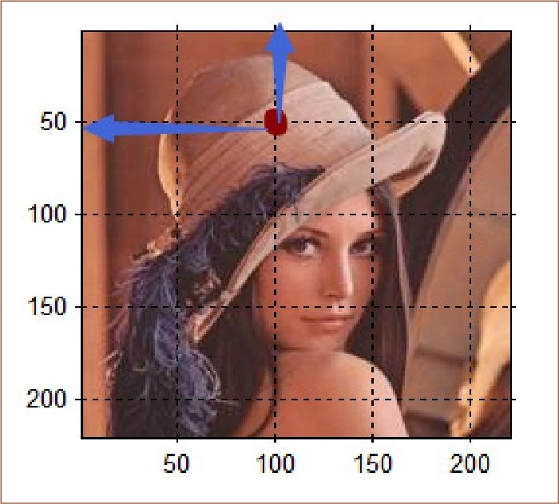
❖图2-26 图像在MATLAB中的坐标形式
❖图3-3 DPM在Pascal Faces数据集上使用不同重叠阈值的检测结果
❖图6-7 在LFW数据集上测试的结果
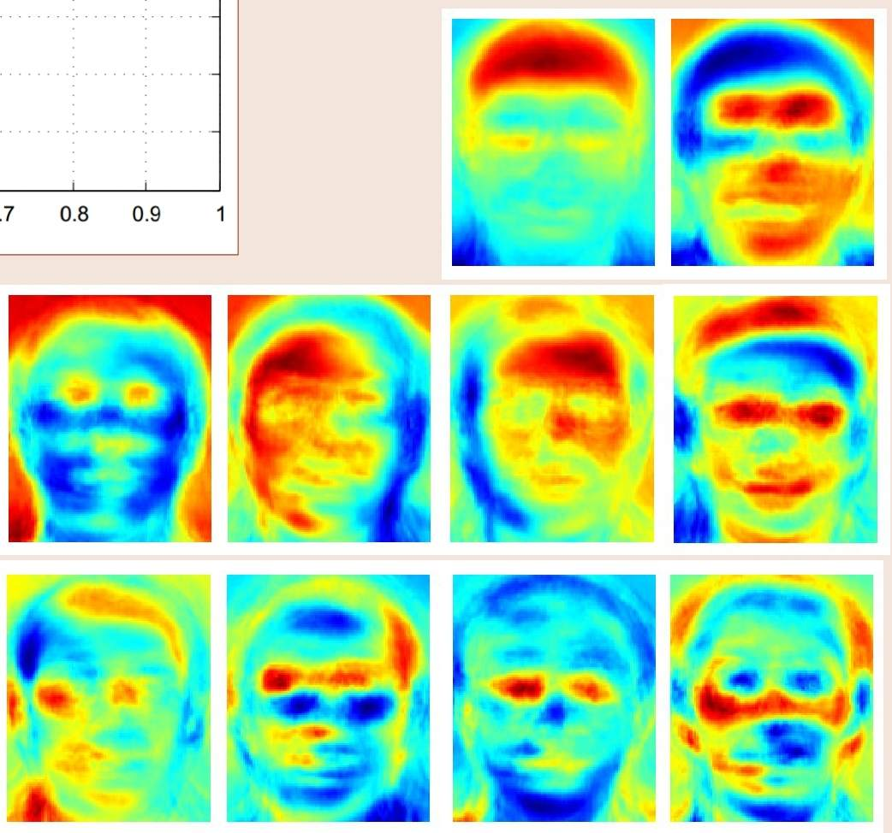
❖图6-8 使用了JET模式色图的10个Eigenfaces
前言
我们正处于“刷脸”的时代，越来越多的“刷脸”应用开始出现。例如，北京西站的刷脸检票、厦门景点的刷脸验票、余额宝的刷脸认证等。初学者如果想进行人脸识别相关的研究和开发，那么他们应该阅读什么书籍呢？
“刷脸”背后的技术，不仅仅是人脸识别，亦需要人脸检测和人脸检索等技术提供支撑。目前，市场上有少部分人脸识别的书籍，而专门讲解人脸检测和人脸检索技术的书籍则更少。近年来，笔者及其团队在从事人脸检测、人脸识别、人脸检索相关的研究时，查阅了很多国内外的参考资料，到目前为止，尚未见到一本能够全面涵盖“刷脸”应用所涉及的人脸检测、人脸识别和人脸检索相关技术且具有实战参考价值的书籍。其中的一个主要原因可能是刷脸技术的商业价值高。
本书按照“刷脸”应用开发时所需技术的先后顺序，通过原理、案例、实战的方式，分别讲解了“刷脸”应用需要掌握的三大技术：人脸检测、人脸识别和人脸检索。更为重要的是，本书高度注重实战应用，每一个算法都通过具体程序讲解算法的使用、实验设计，以及实验结果。读者不但能够了解每个算法的原理，而且能够掌握应用开发的实战技能。
本书的目标是作为通用、普及性强、可操作性强的人脸识别的书籍，方便研究人员、工程师、研究生、计算机专业的高年级本科生，快速上手并全面、深入理解，扎实掌握“刷脸”应用相关的理论和算法，帮助读者快速入门，理解“刷脸”应用背后的核心技术与算法，并切实掌握“刷脸”应用开发所需的实战技术。
本书主编为张重生，副主编为王弯弯、王朋友、赵冬冬。于珂珂、彭国雯、裴宸平等研究生对本书的编写、实验部分的验证提供了一定的帮助，在此致谢。
笔者自知才疏学浅，仅略知人脸检测、人脸识别、人脸检索之皮毛。书中错谬之处在所难免，如蒙读者不吝告知（邮箱：chongsheng.zhang@yahoo.com，微信号：A13938613173），将不胜感激。
张重生
2017年4月
第1章 人脸检测、人脸识别与人脸检索概述
视频和图像中人脸的检测、识别和检索，这些图像处理技术和应用在当今的科技发展中发挥着越来越重要的作用。例如，在公安、交通应用中，人群密度高的区域、城市的道路上都已部署了大量的监控摄像头（分辨率多为200万像素的高清数字摄像机），实现对目标人物（如可疑人物、犯罪嫌疑人）及其活动轨迹的全自动识别和检索，在公安和交通等应用中具有极其强烈的现实需求（目前主要通过人眼对视频进行人工分析，即办案人员用眼睛盯着视频、逐帧查看、反复比对，这一过程通常极为耗时）。要想实现对这些视频的全自动、智能分析，就需要准确地对人脸进行检测、识别和检索。而人脸检测、人脸识别和人脸检索，是当今智能识别的商业应用中迫切需要解决的现实问题。本书以实例为驱动，从应用的角度全面介绍、讲解、分析人脸检测、人脸识别和人脸检索问题中的经典算法及其应用。
“人脸检测”和“人脸识别”是两个容易混淆的概念。通俗地讲，人脸检测是根据肤色等特征定位人脸区域；人脸识别是识别这个人到底是谁。换句话说，需要首先在图像中检测出人脸的区域，即人脸检测，然后再使用人脸识别的算法，识别出图像中的人到底是谁。而人脸检索，指给定一个或多个包含人脸的输入图像，从图像库或视频库中检索包含所输入图像中的人脸的那些图像。人脸检测和人脸检索通常都是非监督学习的过程，即图像一般都没有标签/分类；而人脸识别是有监督学习的过程，需要使用一定数量的有标签的图像训练分类模型。近年来，随着深度学习的发展，使用大量有标记的人脸图像训练的人脸识别模型，能够更加准确地提取人脸特征，用于人脸的检索、检测中。
需要说明的是，尽管现有算法在LFW等公开数据集上取得了96%甚至更高的准确度，但人脸检测、人脸识别与人脸检索仍然是一个尚未很好解决的实际问题。事实上，尽管LFW数据集比原有的公开数据集更加有挑战性、更加接近真实应用，但其仍然只是一个非常简单和初级的数据集，远不能代表真实应用场景。由于表情、年龄变化、光线变化、不同姿态、不同图像分辨率等因素，现有的技术还达不到完全好用的程度。事实上，多数相关产品都要求正脸照，很多商业软件还需要手动采集不同光照、有无眼镜时人的图像。
1.1 人脸检测、人脸识别与人脸检索的应用场景
人脸检测是计算机视觉中的一个重要方向，也是一个和人们生活息息相关的研究方向，因为人脸是人最重要的外貌特征。利用计算机智能地检测、识别并分析人脸的特征信息，并利用这些信息进行进一步处理，可以使人们的生活更加方便化、安全化和自动化。
人脸检测技术在最近几年取得了突破性的进步。最初，人脸检测只能在无背景图片中检测出人脸的位置。现在，部分人脸检测技术可以准确地检测出自然场景下多种角度的人脸；可以判断两张人脸是否为同一个人；可以根据人脸分析人的年龄、性别和表情等。在人脸检测技术发展的过程中，出现了一系列的应用。本节就对基于人脸检测、人脸识别和人脸检索技术的应用做一个简单的概述。
1.1.1 当前应用
1.人脸检测应用之面部分析
微软公司在2015年推出了一个有趣的网站，即how-old.net，该网站根据用户提供的照片分析出人的表面年龄和性别。该项目是微软工程师为了测试面部分析技术而发布的，并不是正式的项目，但自发布的短短几个小时内，使用的用户就达到了3.5万人。其检测结果和实际的年龄、性别可能会不一致，但整体上来说，比较接近。在国内，三个“85后”学生创建了Face++，它能够提供准确的面部分析技术，不仅可以分析出人脸的年龄、性别，还可以分析出种族和表情信息，其中性别准确率达到了96%。Face++为许多应用提供服务，比如，将Face++的人脸检测和识别技术嵌入在美颜相机和美图秀秀，从而更加准确地定位人脸中需要美化的区域，达到自动美颜的效果。现在一些手机自带的摄像功能可以在拍摄时自动识别年龄和性别，如小米4。
2.人脸识别应用之刷脸考勤
出勤记录对公司员工来说是必不可少的一件事情，传统的考勤是打卡签到或者点名签到。自从人脸检测和识别技术出现以来，逐渐出现了刷脸考勤机，该机器可以快速准确地识别员工、记录出勤信息。比如，某公司的刷脸考勤系统，首先将公司内部员工的人脸信息录入该系统，然后将嵌入人脸检测技术的摄像头连接到该系统，之后便可进行刷脸考勤。员工面对该考勤机时，其摄像头会自动捕捉到员工的人脸区域，并将获得的人脸区域和员工信息数据库进行比对，识别出该员工的姓名，并且记录该员工到达的时间，这便代替了常规的打卡签到。现在一些教室也使用刷脸考勤代替点名考勤，这在很大程度上提高了考勤率，降低了代签到的现象。
3.人脸识别应用之公安破案
现在一些城市的车站、海关、机场等地安置的摄像头都嵌入了人脸检测技术，公安会提前将一些犯罪分子的脸部信息录入系统，对视频中出现的每个人脸进行捕捉、分析，判断是否为犯罪分子。如果是犯罪分子，则系统能够自动发出警报，并追踪他们，从而加快公安破案。在2015年6月份，一名潜逃至中国台湾11年的福建籍女子晏某回中国大陆办理逾期的通行证，入境时，被海关的人脸识别技术捕捉到，发现该女子和晏某极其相似，经过公安的进一步侦查，发现其就是当年的晏某，最后将晏某抓捕归案。许多城市的公安系统已经使用该技术破获了许多案件，保障了城市的安全。
4.人脸检测应用之刷脸验票
2016年1月，厦门的邮轮中心开始使用刷脸验票机，乘客将二代身份证放在指定区域后，识别机上会显示二代身份证上的照片，并通过摄像头捕捉游客的人脸，比对当前游客的人脸与二代身份证中的人脸，等到机器识别后，会播报“验证成功，请通过”；否则会播报“人员与证件不符”。该机器识别快，仅需要5秒钟即可，并且正确率高达99%，杜绝了冒用他人身份证件的事情发生。
5.人脸检测应用之刷脸登录
阿里巴巴旗下的支付宝已经可以刷脸登录。在支付宝中，点击“安全设置”→“刷脸”，开启刷脸登录，然后根据提示按要求对脸部进行拍摄，录入成功后，退出账号便可使用刷脸进行登录。其大致流程如图1-1所示。在网络时代，每个人都在许多网站、APP上有自己的账号和密码，如微博的账号和密码、支付宝的账号和密码、微信的账号和密码、美团外卖的账号和密码等。为了安全起见，这些密码又各不相同，对于人类有限的记忆来说，很容易忘记这些密码。刷脸登录便可解决这些问题，登录时，这些软件自动对脸部进行检测，确认是本人后，便提示登录成功，否则提示登录失败。
图1-1 刷脸登录的设置流程
1.1.2 未来应用
虽然已经出现了一些刷脸登录、刷脸验票的机器，但是这些机器还没有广泛普及到普通大众中去。随着人脸检测和识别准确率的提高和人脸数据库的增大，以及从人脸中获取更多的信息（不再局限于性别、年龄和表情，也能获得姓名、职业等基本信息），未来刷脸登录会出现在各个APP中，如微信、微博、QQ、淘宝等。刷脸验票也会应用到火车站、机场、汽车站、旅游景区等多个场所。刷脸支付则会出现在银行、电商、支付宝、ATM机等金融渠道中。人脸检测还可以应用于广告中，在露天的广告牌前安置嵌入人脸检测技术的软件，该软件根据行人在广告牌前的表情、浏览时间等，分析行人是否对该广告感兴趣以及是否适合该广告。如果判定该行人需要这个广告，则向该行人的邮箱投递该广告；否则不向该行人投递广告。
未来，人脸检测应用会逐渐深入到交通、网络、安全、经济等领域，广泛应用在各行各业中，会成为人们生活息息相关的一部分。
1.2 人脸检测、人脸识别与人脸检索常用的数据集
人脸检测和人脸识别算法都需要在大量的人脸数据集上验证、测试，当前比较经典和常用的人脸数据集有LFW和FDDB。本书还收集了另外两个数据集，分别命名为Wanwan1和Wanwan2。本节分别对这四个数据集进行介绍。
1.2.1 LFW数据集
LFW（Labeled Faces in the Wild）数据集[1] 是由美国马萨诸塞大学阿姆特分校收集整理并维护的，是为了在不受限制的环境下研究人脸识别问题而设计的[2] 。该数据集中有13 233张图片，这些图片均从网上收集而来，得到这些原始图像后，经过处理，最后数据集中每张图片的尺寸都是250×250像素的，并且每张图片都以图像中人物的名字命名，不同人的图片被放在不同的文件夹中。一共有5749个文件夹，即5749个人。其中，4069个人只有一张图片，而1680个人有多张图片。如lfw\Aaron_Peirsol中有四张图片，命名形式如图1-2所示。
LFW数据集可用于人脸检测、人脸识别和人脸检索。
图1-2 LFW中Aaron_Peirsol文件夹下的图片
1.2.2 FDDB数据集
FDDB（Face Detection Data Set and Benchmark）数据集[3] 由Vidit等人[4] 收集整理，现由美国马萨诸塞大学阿姆特分校维护。设计该数据集的目的是为人脸检测算法提供一个数据集，并且在该平台上公平地比较和评估不同人脸检测算法的效果。该数据集中共有28 736张人脸图片，其中包含5171张个人脸的2845张图片来自数据集Faces in the Wild[5] 。此外，该数据集还对图片中的人脸区域提供了准确的椭圆形的注解框。FDDB数据集中包含的人脸图片有不同姿势的、遮挡的、低分辨率的，甚至有失焦的，有彩色图像，也有灰度图像。如图1-3所示，呈现了一些FDDB数据集中的图片。FDDB数据集是世界上权威的人脸检测评估平台之一，它公布了大量算法评估结果的ROC曲线，如图1-4所示。
FDDB数据集主要用于人脸检测和人脸检索。
图1-3 FDDB数据集中的图像示例
图1-4 不同人脸检测算法在FDDB数据集上检测准确度的ROC曲线[3]
1.2.3 Wanwan1数据集
Wanwan1数据集中包含100张侧脸图片，这些图片均来自网上。这些图片尺寸大小不一，场景也不一致。最重要的是，这些图像中的人脸均为侧脸。如图1-5所示，呈现了Wanwan1数据集中的一些图片。
图1-5 Wanwan1数据集中的图片
1.2.4 Wanwan2数据集
Wanwan2数据集中包含了100张多角度（甚至是360°）的人脸图片，下面呈现了Wanwan2中的一些图像，有360°人脸，如图1-6（a）所示；有90°人脸，如图1-6（b）所示。

图1-6 Wanwan2数据集中的图片
1.3 OpenCV的简介、安装与使用
OpenCV是开源、轻量、运行效率高、最接近商业应用的计算机视觉库，受到工业界和学术界的钟爱。它是以C/C++实现的，同时提供了Python、MATLAB、Java、C#等语言的接口。从2000年产生至今，OpenCV已经发布了十多个版本，其功能和算法越来越强大。对于图像处理和计算机视觉领域的初学者和爱好者来说，通过OpenCV能够在很短的时间（如几个小时）内快速构建一个可以很好地运行的算法示例，省去了环境配置、内存管理、算法理解、算法实现等耗时、困难的工作。即使领域内的专业人士，也需要经常使用OpenCV，调用其中的部分关键算法，用于自己的算法研究或实际应用中，因为OpenCV的用户量巨大，它所实现的算法一般都是正确的、高效的。下面介绍该软件的安装过程。
1.下载安装 OpenCV
下载OpenCV，地址为http://opencv.org/downloads.html，在这里读者可以看到许多版本的OpenCV，本书使用的是Version249 OpenCV for windows。
下载完成后，双击运行OpenCV2.4.9，如图1-7所示。
图1-7 OpenCV安装时选择提取的路径
选择一个路径，如D:\software\opencv249，单击“Extract”按钮后如图1-8所示。
图1-8 OpenCV安装进度
等Extracting结束后，OpenCV安装完成。OpenCV安装在“D:\software\opencv 249”文件夹下。
2.配置 OpenCV的环境变量
选择计算机→（右键）属性→高级系统设置→高级（标签）→环境变量→（双击）Path，在Path后面添加相应的路径，如图1-9所示。如果是32位操作系统，就添加“;… opencv\build\x86\vc10\bin”。如果是64位操作系统，就添加“;…opencv\build\x64\vc10\bin”。例如本书中OpenCV安装在“D:\software\opencv249”文件夹下，且本书所用的是64位操作系统，则在Path中添加的路径为：D:\software\opencv249\opencv\build\x64\vc10\bin。
图1-9 配置OpenCV环境变量
3.在 Visual Studio 2010下配置 OpenCV
（1）创建一个新项目。打开Visual Studio 2010，单击“文件”→“新建”→“项目”，选择“Win32控制台应用程序”，输入项目名称和项目路径，单击“下一步”按钮，最后在附加选项中选择“空项目”，再单击“完成”按钮，此时项目创建完成。本例中的项目名称为“face_detect”。
（2）如果是64位操作系统，则将配置管理选为“x64”，如图1-10所示。
图1-10 配置管理器
（3）单击“视图”→“属性管理器”，如图1-11所示。
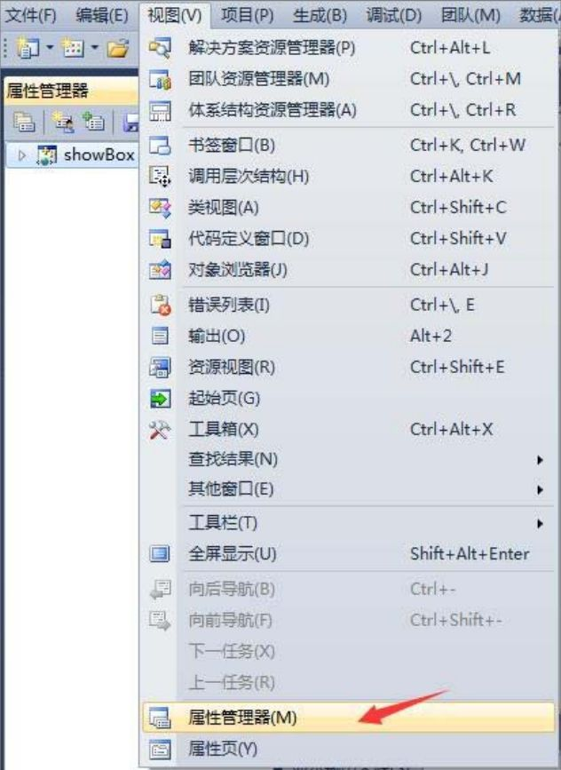
图1-11 属性管理器
（4）在打开的“属性管理器”工作区中，用鼠标右键单击“face_detect”，打开face_detect属性页，如图1-12所示。
图1-12 face_detect属性页
（5）选择“配置属性”→“VC++目录”→“库目录”，添加include所在的路径，然后单击“确定”按钮，如图1-13所示。
图1-13 添加include路径
（6）选择“VC++目录”下的“库目录”，添加lib对应的路径后，单击“确定”按钮，如图1-14所示。
如果是Win32编译器，则选择D:\software\opencv249\opencv\build\x86\vc10\lib；如果是x64编译器，则选择D:\software\opencv249\opencv\build\x64\vc10\lib。vc10代表Visual Studio 2010，读者可根据自己的Visual Studio版本，选择vc11或vc12下对应的lib。
图1-14 添加lib路径
（7）单击“连接器”→“输入”→“附加依赖项”，会弹出“附加依赖项”对话框，如图1-15所示。
图1-15 “附加依赖项”对话框
将D:\software\opencv249\opencv\build\x64\vc10\lib下的所有文件名，即如下内容添加到附加依赖项中，添加完成后单击“确定”按钮。
最后单击“确定”按钮，关闭face_detect属性页。此时，Visual Studio 2010上已经配置好了OpenCV。
这时，读者可以在源文件中建立一个CPP文件，写一个简单的调用OpenCV的函数的程序，检验自己的环境是否配置成功。
本书给出了一个test.cpp，读取图片，并且显示图片。读者可使用test.cpp作测试用例。
Code：test.cpp
运行test.cpp，结果会显示“1.jpg”。
如果出现“缺少opencv_*249文件”之类的错误，则将如下（32位/64位操作系统）所有.dll文件复制到C:\Windows\System32下即可。
· 64位操作系统：D:\software\opencv249\opencv\build\x64\vc10\bin路径下的所有.dll文件。
· 32位操作系统：D:\software\opencv249\opencv\build\x86\vc10\bin路径下的所有.dll文件。
三个知名的商业人脸识别软件分别是OpenCV、Face++、VeriLook，其使用方法将在本书第8章讲解。
参考文献
[1] Labeled Faces in the Wild (LFW). http://vis-www.cs.umass.edu/lfw/.
[2] Gary B. Huang, Manu Ramesh, Tamara Berg, Erik Learned-Miller. Labeled Faces in the Wild: A Database for Studying Face Recognition in Unconstrained Environments. University of Massachusetts, Amherst, Technical Report 07-49,October, 2007.
[3] FDDB: Face Detection Data Set and Benchmark.http://vis-www.cs.umass.edu/fddb/.
[4] Vidit Jain, Erik Learned-Miller. FDDB: A Benchmark for Face Detection in Unconstrained Settings.Technical Report UM-CS-2010-009, Dept. of Computer Science, University of Massachusetts, Amherst. 2010.
[5] Faces in the Wild. http://tamaraberg.com/faceDataset/index.html.
第2章 图像处理基础
本章主要讲解数字图像处理中的基本概念和常见操作。
说到“图像处理”，很多读者都会联想到“图片处理”、“图像的PS处理”，即使用图像处理软件（尤其是Photoshop）对图像进行加工变换，以满足用户的视觉、心理等要求。本书中所述的图像处理，则是指使用图像处理的算法和程序，对图像进行去噪、增强、变换等处理，从图像中提取重要的特征，并结合实际应用对图像进行处理、识别和分析的技术。
2.1 数字图像处理的基本概念
数字图像处理（Digital Image Processing）又称为计算机图像处理，它是指将图像信号转换成数字信号并利用计算机对其进行处理的过程。所以计算机处理的图像都是数字化的图像。在MATLAB中，图像都是以数值矩阵的形式存在和处理的。
2.1.1 像素
像素是构成数字图像的基本单位。一张图片尺寸为600×300像素，即表示横向有600个像素，纵向有300个像素。在数字图像中，每个像素都有对应的数值，二进制图像的像素值为0或1，灰度图像的像素值为0~255，由这些像素值组成的数字图像才能被计算机进行处理。一个像素的具体长度与显示器的分辨率有关，在Photoshop中，1厘米=28.346像素，此时1像素=0.035 278厘米。
2.1.2 分辨率
分辨率可分为屏幕分辨率（显示分辨率）、图像分辨率、打印分辨率（dpi）三个主要类别。下面主要介绍屏幕分辨率和图像分辨率的概念。
1.屏幕分辨率
屏幕分辨率就是计算机显示器的屏幕上能显示信息的数量，即能显示的像素个数，通常以水平和垂直像素数量来衡量。一台计算机显示器的分辨率为1600×900像素，表示该显示器水平方向上能显示1600个像素，垂直方向上能显示900个像素。对于同一台显示器来说，分辨率越高，能显示的像素就越多，屏幕就越清晰。
查看计算机显示器屏幕分辨率的方式有：（1）通过在计算机（Windows 7操作系统）的桌面上单击鼠标右键，选择“屏幕分辨率”，如图2-1所示。（2）打开“控制面板”，选择“外观和个性化”→“显示”→“调整屏幕分辨率”。调整屏幕分辨率的窗口如图2-2所示，可以看到屏幕分辨率有多种选择，如1600×900、1024×768、800×600等。通过调整分辨率，观察显示器的清晰程度，可以看到分辨率越高，显示器屏幕越清晰。
图2-1 Windows 7操作系统中查看屏幕分辨率的方法
图2-2 Windows 7操作系统中调整屏幕分辨率窗口
在实际应用中，显示设备（如显示器、平板电脑、手机屏幕等）的分辨率也经常用每英寸包含的像素个数（Pixels Per Inch，PPI），即每英寸像素数（像素密度）来表示。该值越大，画面的细节就越丰富；该值越小，图像显示就越大。已知屏幕尺寸和屏幕分辨率时，就可以计算该屏幕的PPI。例如，一个5英寸、分辨率为1280×720像素的手机屏幕，其PPI=sqrt(1280×720/5)=429ppi。类似地，已知屏幕的PPI及其尺寸时，也可以计算屏幕分辨率。2010年，史蒂夫·乔布斯（Steve Jobs）在iPhone 4发布会上介绍视网膜技术时，他是这样阐述的：“当你所拿的东西距离你10～12英寸（约25～30厘米）时，它的分辨率只要在300ppi这个‘神奇数字’以上，人眼的视网膜就无法分辨出像素点了。”因此，iPhone 4屏幕的像素密度就设定在326ppi。
2.图像分辨率
图像的分辨率就是图像的尺寸，也称为图像的宽和高，即水平方向上的像素个数和垂直方向上的像素个数。一张分辨率为640×480像素的图片，有480行像素信息，每行有640个像素，该图片包含的像素个数是307 200，也就是我们常说的30万像素。而一个分辨率为1600×1200像素的图片，就达到了约200万的像素。
在实际应用中，视频画面的分辨率经常用多少P表示，它表示一个视频画面的垂直像素数，下面将详细介绍。
3.视频分辨率
经常说某个视频是720P或1080P，P指的是Progressive，即逐行扫描。480P是640×480像素的分辨率。720P是由美国电影电视工程协会制定的一种高清电视格式，即1280×720像素的分辨率。后来又出现了1080P的格式，即分辨率为1920×1080像素。现实生活中，不同的视频网站对标清、高清、超清有不同的定义，通常情况下，标清视频画面的分辨率小于等于480P，而高清视频画面的分辨率为720P（视频中画面的分辨率为1280×720像素），超清视频画面的分辨率则为1080P（视频中画面的分辨率为1920×1080像素）。
2.1.3 图像的色调、亮度和饱和度
1.图像的色调
色调就是通常意义下的彩色，它随波长的变化而变化，反映理论颜色的基本特征。在三原色中，可见光的波长为380～780nm（纳米），不同波长呈现出不同的颜色，可见波长从长到短依次为红、橙、黄、绿、青、蓝、紫。红色的波长为700nm、绿色的波长为546.1nm、蓝色的波长为435.8nm。只有单一波长成分的光称为单色光，含有两种以上波长成分的光称为复合光。色彩通常都是由一种单色光和白光按照一定比例混色的。色调和饱和度合称为色度，色度表示的是色彩的纯度。色度反映颜色的色调和饱和度。颜色由亮度和色度共同表示。
2.图像的亮度
亮度是人眼对光强度的感受，图像的亮度就是图像中光的强度。不同波长的光有着不同的色调，给人不同的颜色感受，也给人不同的亮度感受。人眼一般感到红光最暗，蓝光次之，而黄绿光最亮。
数字图像由数值矩阵表示，每个数值都是图像的像素值。下面我们借助MATLAB工具，介绍如何通过修改像素值改变图像的亮度。
我们使用MATLAB图像处理工具箱中的imadd()函数，让数字图像的像素值增加一个常数，从而改变图像的亮度；也可以利用MATLAB图像处理工具箱中的immultiply()函数，让数字图像矩阵乘以一个常数，如果常数大于1，则图像的亮度增强，否则图像的亮度将降低，图像变暗。下面我们通过Code1介绍如何利用这些函数改变图像的亮度。
Code1：ch2_1.m
运行Code1后，结果如图2-3所示。我们可以看到，处理后的图像（b）、（c）和原图像（a）相比，亮度明显增加；图像（d）的亮度和原图像（a）相比，明显降低。
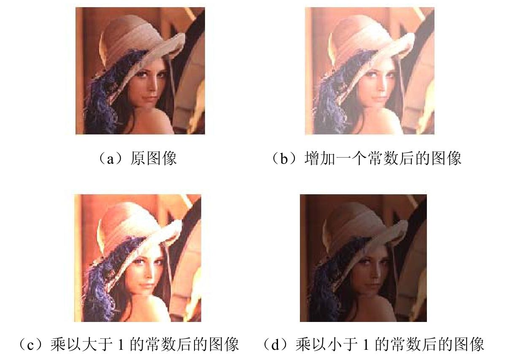
图2-3 不同图像亮度的试验结果
此外，还可以利用MATLAB中的其他函数改变图像的亮度，如imadjust()函数（调整参数Gamma，如果Gamma小于1，则图像亮度增加；如果Gamma大于1，则图像亮度变暗）、brighten()函数（调整参数Beta，如果0<Beta<1，则图像亮度增加；如果-1<Beta<0，则图像亮度变暗）。读者可以查阅MATLAB帮助文档进行这些函数的学习。
3.图像的饱和度
色彩的饱和度就是颜色的纯净度，饱和度越高，色彩越鲜明。色彩的饱和度取决于颜色中白光的比例，色彩中的白光越多，饱和度就越低。纯单色光的饱和度为100%，纯白光的饱和度为0%。
下面我们通过使用Photoshop调整一幅图像的饱和度，观察调整前后图像的变化。具体步骤如下：
（1）在Photoshop中打开一幅图像，如图2-4（a）所示。
（2）选择“图像”→“调整”→“色相/饱和度”，打开“色相/饱和度”对话框，如图2-5所示。
（3）调整饱和度的值。将饱和度调整为100，对应的图片如图2-4（b）所示；将饱和度调整为-100，对应的图片如图2-4（c）所示。
图2-4 同一图片不同饱和度值的变化
图2-5 “色相/饱和度”对话框
上面已经提到，色调和饱和度合称为色度。亮度和色度（色调和饱和度）共同决定了图像的特性。
2.1.4 图像的对比度
对比度是图像的黑白之间的差异，差异越大，则对比度越大，能表示的颜色就越丰富。但是现在还没有通用标准来衡量对比度，需要依靠人的眼睛进行判断。
在MATLAB中，函数imadjust()可以增加图片的对比度，格式如下。
Newimg=imadjust(img);
下面我们通过Code2了解如何利用函数imadjust()增加图片的对比度。
Code2：ch2_2.m
运行Code2后，结果如图2-6所示。可以看到，处理后的灰度图像（b）和对应的原图（a）相比，对比度增加，图像也更清晰了；处理后的RGB图像（d）和对应的原图（c）相比，颜色更加鲜亮。
图2-6 Code2的运行结果

图2-6 Code2的运行结果（续）
2.1.5 图像的纹理
图像的纹理特征是描述一幅图像的重要性质之一，图像的纹理、颜色和形状一起用来表述图像的视觉特征，也就是人的视觉能感受到的自然特征。
纹理，通常意义上指的是物体表面凹凸不平的沟纹，或者光滑物体表面的彩色图案，这些图案会让人有凹凸不平的视觉感受。图2-7所示的三幅图像就是有纹理的图像。
图2-7 有纹理的图像
灰度分布在空间位置上的反复出现形成了纹理，所以图像空间中一定距离的两个像素是有关系的，灰度共生矩阵就是利用图像灰度级之间的相关性来描述纹理的一种常用方法。灰度共生矩阵的特征有：熵、ASM能量、对比度、均匀度和自相关，可以用这些特征来分析图像的纹理。
· 熵（Entropy）：如果灰度共生矩阵元素值分布均匀，则表示图像近于随机，熵值就越大。
· ASM能量：灰度共生矩阵中每个元素的平方和，表示图像是否分布均匀、纹理是否粗糙。图像越有结构，ASM越大。
· 对比度（Contrast）：表示图像的清晰程度和纹理深浅程度。灰度共生矩阵中偏离对角线的元素值越大，对比度就越大，纹理也就越深。
· 均匀度：表示图像纹理的粗细度。纹理越粗糙，则均匀度越大；纹理越细致，则均匀度越小。
· 自相关（Correlation）：描述灰度共生矩阵中水平或垂直方向上的相似度。如果矩阵中水平方向的元素值均匀相等，则水平方向的相关性大，对应的图像在水平方向上越有纹理，则水平方向灰度共生矩阵的自相关值大于其他方向灰度共生矩阵的自相关值。
在MATLAB中，函数graycomatrix()可以生成一幅图像的灰度共生矩阵，格式如下。
glcm=graycomatrix(img,[param1,val1,param2,val2…])
img是输入的原图像，glcm是返回的灰度共生矩阵。函数graycomatrix()可以设置一些参数，如表2-1所示。
表2-1 函数graycomatrix()的参数
在MATLAB中，函数graycoprops()可以获取一个共生矩阵的熵、ASM能量、对比度和自相关的属性值，格式如下。
下面我们通过Code3说明如何利用函数graycomatrix()生成图像对应的灰度共生矩阵，并利用函数graycoprops()获取共生矩阵的属性值。
Code3：ch2_3.m
运行Code3后，结果如图2-8所示。在MATLAB工作空间中查看glcm1和glcm2的值，如图2-9所示。最后，统计两幅纹理图像的对比度、自相关、熵的属性值，即工作空间中的stats1和stats2，结果如表2-2所示。
图2-8 Code3的运行结果
图2-9 两幅纹理图像对应的灰度共生矩阵
表2-2 两幅纹理图像对应的灰度共生矩阵的属性值
空调风格栅图的纹理比较深，所以它的对比度比较大。
2.2 颜色空间
根据数字图像色彩表示方式的不同，数字图像有几种不同的颜色空间（颜色模型），如RGB颜色空间、HSV颜色空间、YUV颜色空间等。下面就具体介绍一下这几种颜色空间，以及它们在MATLAB中的转换。
2.2.1 RGB颜色空间
RGB颜色空间是由Red（红色）、Green（绿色）、Blue（蓝色）组成的一种颜色空间。红、绿、蓝这三种颜色被国际照明委员会规定为三原色，这三原色的不同分量比例可以合成任何其他颜色。RGB颜色空间类似一个三维的坐标系，红色、绿色和蓝色分别是一个坐标轴，每种颜色都是空间中的点，由三个数值组成，分别表示在红色、绿色、蓝色上的分量。(0,0,0)表示纯黑色，(255,255,255)表示纯白色，(0,0,255)表示蓝色。
2.2.2 HSV颜色空间
HSV颜色空间由Hue（色调）、Saturation（饱和度）和Value（亮度）组成。HSV颜色空间是1978年提出的，它是一种主观的颜色空间。HSV颜色空间类似一个六角椎体，如图2-10所示。色调通常指代颜色名称。饱和度表示掺入白光的分量，掺入白光的分量越多，则饱和度越低，即S值越小；掺入白光的分量越少，则饱和度越高，即S值越大。亮度表示掺入黑光的分量，掺入黑光的分量越多，则亮度越低，即V越小；掺入黑光的分量越少，则亮度越高，即V越大。
图2-10 HSV颜色空间模型
2.2.3 YUV颜色空间
YUV颜色空间是欧洲电视系统使用的一种色彩编码空间，在现代的彩色电视系统中，通过三管彩色摄影机和彩色CCD摄影机得到的彩色图像信号，经过分色、分别放大校正得到RGB，再进一步经矩阵变换电路得到亮度信号Y和两个色差信号R-Y（U）、B-Y（V），最后发送端对这三个信号分别编码，再使用同一信道发出去，这就是YUV颜色空间。若只有亮度Y，没有U和V，则形成了黑白灰度图像。
在数字图像中，图像的色彩空间还有很多种，如CMYK、Lab、HSL、YIQ等，本书在此不多做介绍。
2.2.4 颜色空间的转换
- RGB颜色空间转换为 HSV颜色空间
RGB颜色空间中有三个分量，即R、G、B。HSV颜色空间中也有三个分量，分别是H、S、V。可使用如下算法将RGB颜色空间转换为HSV颜色空间。
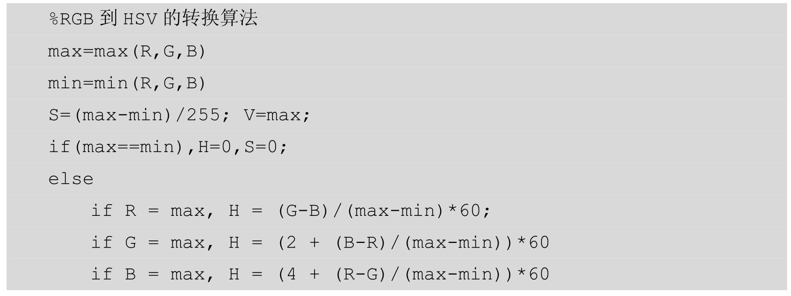
在MATLAB中，函数rgb2hsv()可以实现RGB到HSV颜色空间的转换，用法如下。
hsv=rgb2hsv(rgb)
rgb是输入的原RGB图像，它是一个三维的M×N×3的数组，分别是图像的红色、绿色和蓝色的分量。hsv是经过转换后的HSV图像，它是一个三维的M×N×3的数组，分别表示图像的色调、饱和度和亮度信息。
下面我们通过Code4了解如何利用函数rgb2hsv()进行RGB到HSV颜色空间的转换。
运行Code4后，结果如图2-11所示，有两组图，即Figure1和Figure2。Figure1是原RGB图像和转换后的HSV图像的对比，Figure2是转换后的HSV图像的色度、饱和度和亮度分量图。
图2-11 Code4的运行结果
- HSV颜色空间转换为 RGB颜色空间
在MATLAB中，也有和rgb2hsv类似的函数。函数hsv2rgb()就可以实现HSV到RGB颜色空间的转换，格式如下。
rgb=hsv2rgb(hsv)
hsv是输入的原HSV图像，rgb是经过转换后的RGB图像。
下面我们借助Code5了解如何利用函数hsv2rgb()进行HSV到RGB颜色空间的转换。
Code5：ch2_5.m
程序Code5首先读取RGB图像“1.jpg”，利用函数rgb2hsv()将RGB图像转换为HSV图像，然后再利用函数hsv2rgb()将上一步得到的HSV图像转换为一个新的RGB图像。最后显示原RGB图像、转换后的HSV图像和转换后的新RGB图像。
运行Code5后，结果如图2-12所示。可以看到，转换后的RGB图像（c）和原RGB图像（a）是完全相同的。

图2-12 Code5的运行结果
- RGB颜色空间转换为 YUV颜色空间
在MATLAB中，没有用于将RGB颜色空间转换为YUV颜色空间的函数。Code6程序可以实现RGB到YUV颜色空间的转换。
Code6：ch2_6.m
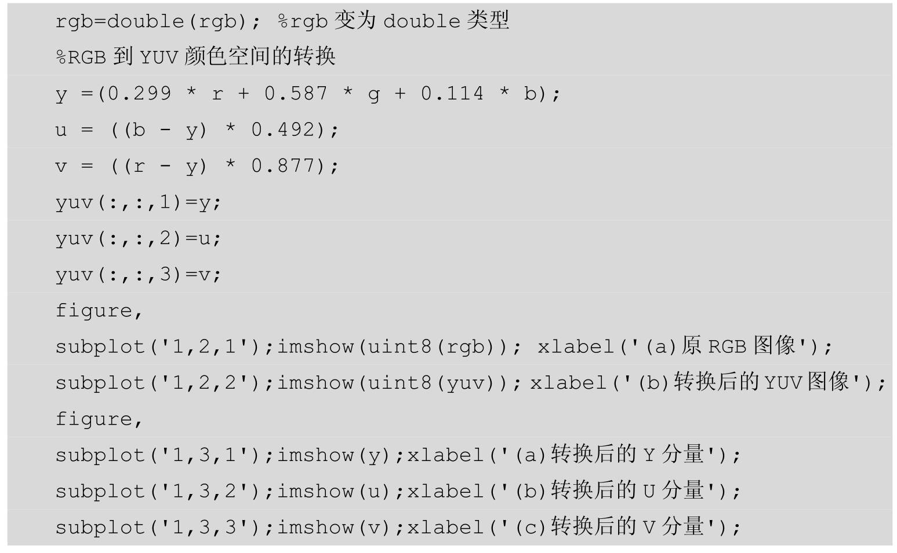
运行Code6后，结果如图2-13所示，有两组图，即Figure1和Figure2。Figure1是原RGB图像和转换后的YUV图像的对比，Figure2是转换后的YUV图像的亮度信号Y和两个色差信号U、V的分量图。
图2-13 Code6的运行结果
2.3 数字图像处理的基本操作
在数字图像处理中，计算机对图像有着很多处理和操作方法，其中最常见的是图像的读取、显示、修改和保存，以及获取图像的基本信息。本节会对这些内容进行介绍，并结合相关内容对图像进行一些简单的处理。
2.3.1 图像的读取
如果要对数字图像进行处理，则首先需要读取图片。在MATLAB中，函数imread()可以实现对图像的读取，其格式如下。
灰度图像或真彩色图像的读取：
A = imread(‘filename’,’fmt’)或imread(‘filename .fmt’)
索引图像的读取：
[X,map] = imread(‘filename’ , ‘fmt’)或imread(‘filename .fmt’)
filename是图像的文件名，fmt是图像类型（如.jpg、.gif、.jpeg、.png等）。图像读取可以为A=imread(‘lena’,’jpg’)或A=imread(‘lena.jpg’)。如果lena.jpg不在MATLAB的当前路径下，则filename要包含文件的路径。该函数读取的图像为灰度图像或真彩色图像，如果读取的是灰度图像，则A是一个M×N的二维数组（M、N分别是图像的高度和宽度）；如果读取的是真彩色图像，则A是一个M×N×3的三维数组。如果读取的是索引图像，则X代表数据矩阵，是M×N的二维数组；map代表调色板矩阵，是m×3的二维数组。
下面我们通过Code7来了解如何利用函数imread()实现图像的读取。
Code7：ch2_7.m

上述代码演示了读取图像的不同方式，gray1、gray2读取的是灰度图像，rgb1、rgb2读取的是真彩色图像。运行Code7后，结果如图2-14所示。
图2-14 Code7的运行结果
Code7运行结束后，查看MATLAB的工作空间，可以看到四个矩阵，即gray1和gray2是灰度图像，对应的是二维数组；rgb1和rgb2是真彩色图像，对应的是三维数组，如图2-15所示。
图2-15 Code7运行结束后MATLAB的工作空间
函数imread()还可以读取特殊格式的图像文件。关于函数imread()特殊使用和图像读取的更多问题，读者可参阅MATLAB帮助文档。
2.3.2 图像的显示
通常对一幅图像处理完成后，还需要将图像显示出来，查看处理后的效果。在MATLAB中，函数imshow()可以实现对图像的显示。
imshow(‘img’)
img可以是imread()返回的变量，也可以为图片路径，如“E:\five.jpg”。
使用函数imshow()，MATLAB会自动打开图形图像视窗，这是MATLAB中一种通用的图像显示方法，可以显示灰度图像、真彩色图像、二值图像、索引图像等。在显示灰度图像时，可以加入一些限制，如imshow(gray,[40,120])，像素值小于40的会显示为黑点，像素值大于120的会显示为白点。下面我们通过Code8来说明如何利用函数imshow()实现图像的显示。
Code8：ch2_8.m
运行Code8后，结果如图2-16所示。图（a）是对读取的灰度图像进行显示；图（b）是对读取的RGB图像进行显示；图（c）在显示时限制了灰度图像（a）的像素值范围；图（d）是根据路径直接显示图像文件。
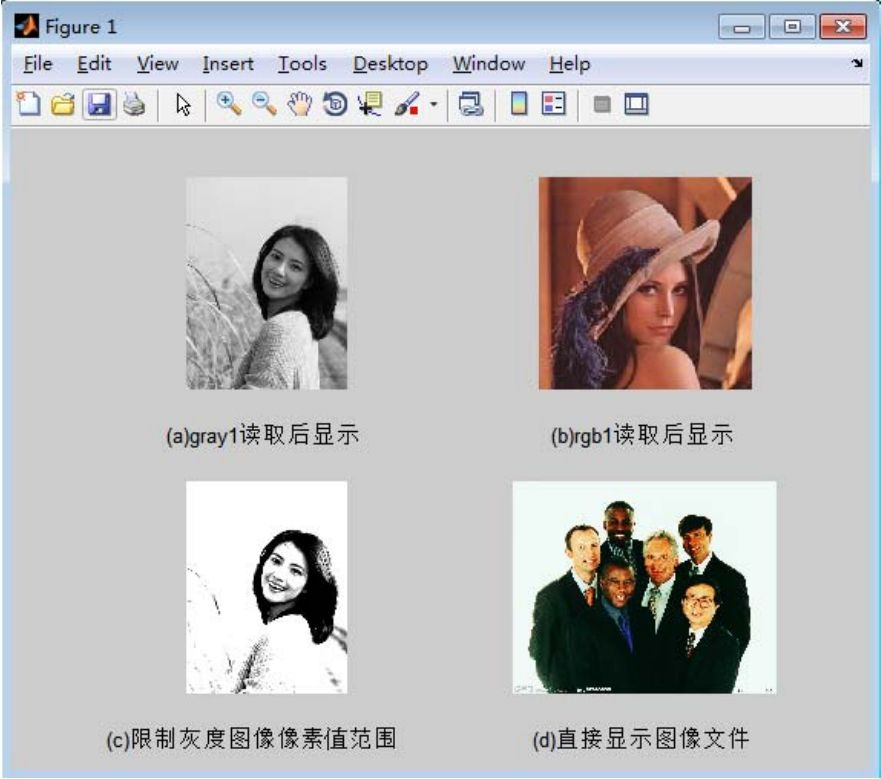
图2-16 Code8运行后的结果
注意：图像显示是先打开图形图像窗口，然后将图片显示在窗口内，如图2-16所示。为了清晰展示运行结果，本书中其他图例只显示图像部分，不显示整个图形图像窗口。
在MATLAB中，图像的显示函数还有imtool()、image()、imagesc()、colorbar()、montage()等，关于这些函数的使用，读者可查阅MATLAB帮助文档。
2.3.3 图像的修改
在数字图像处理中，通常需要对图像进行修改。修改图像就是修改对应的数字矩阵中的像素值。下面我们结合程序Code9对图像的修改进行介绍。
Code9：ch2_9.m
运行Code9后，结果如图2-17所示。我们可以看到，修改后的图像的左上角区域为黑色，因为图像该区域内的像素值被修改为0。
图2-17 Code9的运行结果
2.3.4 图像的保存
对数字图像处理结束后，通常需要对处理后的图像进行保存。在MATLAB中，函数imwrite()可以实现图像的保存，格式如下。
imwrite(img,filename,fmt)
img是函数imread()得到的图像矩阵，filename和fmt分别是要存储的文件名和文件类型。如果要保存的img是灰度图像，则img是一个二维矩阵；如果要保存的img是真彩色图像，则img是一个三维矩阵。下面我们通过Code10说明如何利用函数imwrite()实现图像的保存。
Code10：ch2_10.m
首先读入了一个灰度图像gray1，然后读入了一个真彩色图像rgb1，可以在工作空间中看到gray1是二维矩阵，rbg1是三维矩阵。通过函数imwrite()把图像矩阵保存在指定路径下。运行Code10后，当前路径下增加了一个灰度图像，名字为gray.jpg；计算机E:盘下增加了一个真彩色图像，名字为rgb.jpg。
通过函数imshow()显示图像后，图像会显示在图形图像视窗内，如果利用hode on在该图像上添加一个矩形框生成新图像，由于图像的像素值没有改变，不能使用函数imwrite()保存新图像，那么此时需要使用函数saveas()，格式如下。
saveas(gcf,’filename’,’fmt’)
saveas是将图形图像窗口保存，相当于将该窗口进行另存为。
下面我们通过Code11说明如何利用函数saveas()保存图像。
Code11：ch2_11.m
运行Code11后，结果如图2-18所示。
图2-18 Code11的运行结果
2.3.5 获取图像的基本信息
在数字图像处理中，通常需要查看图像的基本信息，如图像格式、图像大小、图像数据类型等。在MATLAB中，函数imfinfo()可以获取图像的基本信息，格式如下。
INFO=imfinfo(imagename);
INFO返回图像的基本信息，它是一个结构数组。
通过在MATLAB的命令行窗口中输入如下语句，来查看图像的基本信息。

返回的info包含着图像“1.jpg”的基本信息。Filename代表图像文件的路径和名字；FileModDate表示图像文件的最后修改时间；FileSize表示图像文件的大小；Format表示图像的格式；Width表示图像的宽；Height表示图像的高；BitDepth：24；ColorType表示图像类型（灰度图像、RGB图像、索引图像、二值图像）。
如果仅需要获取图像的行和列，则可以使用如下语句。
2.4 图像类型及转换
根据图像在计算机中表示形式的不同，形成了几种不同类型的图像，如RGB图像、灰度图像、索引图像、二值图像等。本节将分别介绍这4种图像类型，以及它们之间的相互转换。
2.4.1 图像类型
- RGB图像
RGB图像，由Red、Green、Blue三种颜色分量组成。这三种颜色的组合可形成其他颜色，所以用它们来表示彩色图像。RGB图像也称真彩色图像，由3个维度相同的二维数组组成，每个数组分别代表图像颜色中红色的分量、绿色的分量和蓝色的分量。每个像素由24位组成，每8位代表一种颜色分量。通过函数imread()读入一幅真彩色图像，返回的是一个M×N×3的三维数组。
2.灰度图像
灰度图像的像素值都在[0,255]，一幅灰度图像由一个二维矩阵表示，像素值0表示黑色，像素值255表示白色。像素值为[1,254]，则表示不同程度的灰色。
3.索引图像
索引图像由数据矩阵和调色板矩阵组成。调色板矩阵是一个M×3的数组，每一行代表一种颜色，每种颜色由Red、Green、Blue三种颜色分量组成，颜色分量值为[0,1]的浮点型数据。数据矩阵是一个二维矩阵，数据矩阵中的值指向调色板对应行的数据，如值1指向调色板矩阵的第一行，值5指向调色板矩阵的第五行。
数据矩阵和调色板矩阵存放在一起，通过函数imread()读取一幅索引图像，会返回数据矩阵X和调色板矩阵map，格式如下。
[X,map]=imread(‘索引图像’);
4.二值图像
二值图像是由像素值0或1组成的一幅图像，像素值为0对应的图像为黑色，像素值为1对应的图像为白色。由于二值图像没有中间过度的灰色，因此只能表示文字或图像轮廓。二值图像占用的空间比较少。
2.4.2 图像类型的转换
在数字图像处理中，经常需要转换图像类型，在MATLAB中有一些函数可以实现图像类型之间的转换。
- RGB图像转换为灰度图像
在MATLAB中，函数rgb2gray()可以将RGB图像转换为灰度图像，格式如下。
gray =rgb2gray(A)
A为输入的RGB图像，gray是转换后输出的灰度图像。RGB图像的每个像素由3个颜色分量值表示，灰度图像每个像素只有一个值。分别将RGB图像中3个分量的值乘以某个比例再相加，即可得到对应的灰度图像的像素值。转换后宽、高不变，数值类型不变。
rgb2gray就是按照如下公式比例进行转换的。
gray1 = 0.29894 A(:,:,1) + 0.58704 A(:,:,2) + 0.11402 * A(:,: ,3);
注：上述公式只是为了说明转换过程，由于精度的原因，按照上述公式转换后的结果和使用函数rgb2gray()转换后得到的结果会有误差，建议读者以后使用函数rgb2gray()进行转换。
下面我们通过Code12说明如何利用函数rgb2gray()和公式将RGB图转换为灰度图像。
Code12：ch2_12.m
运行Code12后，结果如图2-19所示。图（a）是原真彩色图像，图（b）是利用函数rgb2gray()转换后得到的灰度图像，图（c）是利用公式转换后得到的灰度图像。
图2-19 Code12的运行结果
2.索引图像转换为灰度图像
在MATLAB中，函数ind2gray()可以将索引图像转换为灰度图像，格式如下。
gray=ind2gray(X,map)
在索引图像转换为灰度图像的过程中，只保留索引图像的亮度，去除了颜色和饱和度。输入的索引图像数据类型无论是double还是uint8，转换后的灰度图像数据类型都是double。下面我们通过Code13来说明如何利用函数ind2gray()进行索引图像到灰度图像的转换。
Code13：ch2_13.m
运行Code13后，结果如图2-20所示。
图2-20 Code13的运行结果
3.矩阵转换为灰度图像
在MATLAB中，一幅图像由一个数据矩阵表示，数据矩阵中每个数值都在限定的范围内。对于任意的一个矩阵，只要把矩阵中的数值转换为限定的取值范围内的数值，就可以把一个矩阵转换为一幅灰度图像。函数 mat2gray()就可以将一个矩阵转换为一幅灰度图像，格式如下。
Gray=mat2gray(mat,[min,max]);
输入一个矩阵mat，矩阵中的数值小于min会被转换为0，即转换为黑点；大于max会被转换为1，即转换为白点；其他值转换为不同程度的灰度值。min和max可以选择性地进行设置，如果不设置，则默认min对应矩阵mat中的最小值，max对应矩阵mat中的最大值。下面我们通过Code14来说明如何利用函数mat2gray()将矩阵转换为灰度图像。
Code14：ch2_14.m

运行Code14后，结果如图2-21所示，该图是一幅灰度图像。
图2-21 Code14的运行结果
4.索引图像转换为 RGB图像
在MATLAB中，函数ind2rgb()可以将索引图像转换为RGB图像，格式如下。
rgb=ind2rgb(X,map);
X和map分别是索引图像的数据矩阵和调色板矩阵，转换过程就是将每个像素在调色板中对应的序号的颜色赋值给一个三维数组。无论输入的索引图像的数据类型是uint8、uint16还是double，转换后RGB图像的数据类型都是double。下面我们通过Code15来说明如何利用函数ind2rgb()将索引图像转换为RGB图像。
Code15：ch2_15.m
运行Code15后，结果如图2-22所示。图（a）是原索引图像，图（b）是通过函数ind2rgb()转换后的RGB图像。
图2-22 Code15的运行结果
- RGB图像转换为索引图像
上面介绍了函数ind2rgb()可以将索引图像转换为RGB图像。在MATLAB中，也有类似的函数rgb2ind()，可以将RGB图像转换为索引图像。函数rgb2ind()有几种不同的转换方法，即均匀量化法、最小方差量化法和颜色表近似法，不同的转换方法调用函数rgb2ind()的方法不同，格式如下。
均匀量化法：
[X,map]=rgb2ind(rgb,tol)
rgb是待转换的RGB图像，tol决定了转换后索引图像的调色板矩阵map中的颜色种类，调色板矩阵map包含的颜色种类至少有[floor(1/tol)+1]3 种。
最小方差量化法：
[X,map]=rgb2ind(rgb,N)
N表示生成的索引图像的调色板矩阵map中至少有N中颜色。
颜色表近似法：
X=rgb2ind(rgb,map)
下面我们通过Code16来说明如何利用函数rgb2ind()将RGB图像转换为索引图像。
Code16：ch2_16.m

运行Code16后，结果如图2-23所示。图（a）是原RGB图像，图（b）是均匀量化法转换后的索引图像，图（c）是最小方差量化法转换后的索引图像，图（d）是颜色表近似法转换后的索引图像。
图2-23 Code16的运行结果
6.灰度图像转换为索引图像
在MATLAB中，函数gray2ind()可以将灰度图像转换为索引图像，格式如下。
[X,map]=gray2ind(gray,n)
n表示灰度级数，如果不设置，则默认为64。
下面我们通过Code17来说明如何利用函数gray2ind()将灰度图像转换为索引图像。
Code17：ch2_17.m

运行Code17后，结果如图2-24所示。图（a）是原灰度图像，图（b）是默认灰度级转换后的索引图像，图（c）是灰度级为5转换后的索引图像。
图2-24 Code17的运行结果
7.各种类型的图像转换为二值图像
二值图像中数据的值都是1或0，将其他类型的图像矩阵转换为二值图像的主要工作是：确定哪些值转换为1，哪些值转换为0。通常我们设置一个阈值level，如果小于level的值转化为0，则其他都转换为1，这样就可以将其他类型的图像转换为对应的二值图像。在MATLAB中，函数im2bw()可以将其他类型的图像转换为二值图像，但调用格式不同，具体如下。
灰度图像和RGB图像转换为二值图像，格式为：
BW=im2bw(img,level)
level的取值范围为(0,1)。若level=0.5，则所有小于255×0.5=127.5的值转换为0，其他值都转换为1。
如果img是RGB图像，调用函数im2bw()，RGB图像首先会被直接转换为灰度图像，然后根据level值相应地转换为0或1。
索引图像转换为二值图像，格式为：
BW=im2bw(X,map,level)
Level的取值范围为[0,1]。如果输入的是索引图像的数据矩阵X和调色板矩阵map，那么首先它们会被转换为灰度图像，然后根据level值相应地转换为0或1。下面我们通过Code18来说明如何利用函数im2bw()将各种类型的图像转换为二值图像。
Code18：ch2_18.m
运行Code18后，结果如图2-25所示，有三组图，分别为灰度图像、RGB图像和索引图像到二值图像的转换。
图2-25 Code18的运行结果
图2-25 Code18的运行结果（续）
2.5 图像变换处理
在数字图像处理中，有时需要将图像进行变换后才能进行处理，本节主要对图像平移、旋转、缩放、剪切和翻转等基本的图像变换处理方法进行介绍。
2.5.1 图像的平移
平移包括左移、右移、上移和下移。平移处理就是根据需要，将图像中每个位置的像素值移动到另一个位置。在MATLAB中，图像的位置坐标表示法和数学上的不太一致，在MATLAB中x轴是从左到右，y轴是从上到下，原点在左上角。图2-26中的红点在MATLAB中的坐标为(100,50)，即距离图像左边界的距离为100像素，距离图像上边界的距离为50像素。
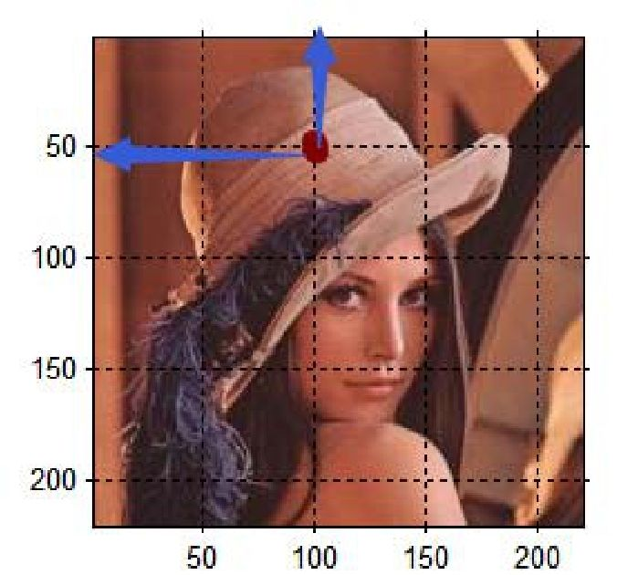
图2-26 图像在MATLAB中的坐标形式
图像平移就是平移图像中的像素点的位置，首先需要创建一个新图像newimg存放平移后的图像，newimg和原图像的尺寸信息一致。通常，我们设newimg=ones(size(img))或者newimg=zeros(size(img))，这样便可保证平移后空白的部分为纯白色或纯黑色。
假设a表示上下平移量，b表示左右平移量。
如果对一个灰度图像进行平移，则newimg(i,j)=img(i+a,j+b)。
如果对一个真彩色图像进行平移，则newimg(i,j,:)=img(i+a,j+b,:)。
a大于0表示上移，a小于0表示下移。b大于0表示左移，b小于0表示右移。下面我们通过Code19来说明如何对图像进行平移处理。
Code19：ch2_19.m
运行Code19后，结果如图2-27所示，图（b）是向左平移50像素后的结果。修改Code19中的平移量：a=50，b=-50，再运行Code19后，结果如图2-28所示，图（b）是向右平移50像素并且向上平移50像素后的结果。
图2-27 图像向左平移50像素
图2-28 图像向右平移50像素并向上平移50像素
读者可根据需求自行修改垂直平移量a的值和水平平移量b的值。
Code19在对图像平移的同时，对超出边界范围的图像进行了截取，如果不想截取，则可根据需要的平移量在水平或垂直方向上扩展newimg的尺寸。本书在此不做更多介绍。
2.5.2 图像的旋转
在数字图像处理中，图像旋转是一种不可或缺的图像变换操作之一。图像旋转就是以图像中心作为原点，将图像按照顺时针或者逆时针旋转一定角度。由于在MATLAB中图像都是以数值矩阵的形式存储的，因此，图像的旋转本质上就是像素点的旋转。在MATLAB中，函数imrotate()可以实现图像的旋转，格式如下。
Newimg=imrotate(img,angle,method,bbox)
Newimg是旋转后的图片，img是旋转前的图片。
angle表示旋转的角度，angle>0，图像逆时针旋转；angle<0，图像顺时针旋转。
method表示旋转时采用的方法，如果不设置，则默认method=nearest，表示最近邻插值。也可以选择其他方法，如method=bilinear，表示双线性插值；method=bicubic，表示双三次插值。
bbox表示返回图像的大小，bbox=crop表示输出图像与原图像尺寸一致；bbox=loose表示输出图像有足够的空间包含旋转后的图像。若不设置bbox的值，则默认bbox=loose。
下面我们通过Code20来说明如何利用函数imrotate()实现图像的旋转。
Code20：ch2_20.m
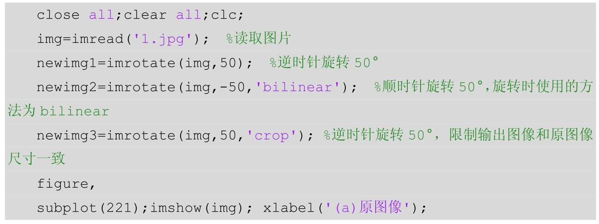
运行Code20后，结果如图2-29所示，可以看到原图像和各种不同旋转处理后的效果。图（a）是原图像；图（b）是angle=50，即逆时针旋转50°后的图像；图（c）是angle=-50，method=bilinear，即顺时针旋转50°并且旋转方法为双线性插值；图（d）是angle=50，bbox=crop，即逆时针旋转50°，并且旋转后的图像和原图像尺寸一致，越界的部分图像进行截取处理。图（b）和图（c）中转换后的图像是完整的。
图2-29 Code20的运行结果
2.5.3 图像的缩放
图像缩放是将原图像按照一定的比例进行缩小或放大。如果垂直方向和水平方向的缩放比例是一样的，则图像是全比例缩放，不会变形；若不一致，则缩放后的图像会发生几何畸形。在MATLAB中，函数imresize()可以实现图像的缩放，格式如下。
Newimg=imresize(img,m);
img是原图像，可以是灰度图像、RGB图像或者二值图像。Newimg是缩放后的图像。m是缩放的比例，当0
Newimg=imresize(img,[rows,clos])
img是原图像，可以是灰度图像、RGB图像或者二值图像。Newimg是缩放后的图像。rows和clos分别是缩放后的图像Newimg的行和列。
[newX newmap]=imresize(X,map,m)
和
[newX newmap]=imresize(X,map, [rows,clos])
这两种格式适用于索引图像的缩放，m和rows、clos的意义同上。
下面我们通过Code21来说明如何利用函数imresize()实现图像的缩放。
Code21：ch2_21.m
运行Code21后，结果如图2-30所示。结果分为两组图，Figure1是对RGB图像的缩放，图（a）是原RGB图像，图（b）是缩小后的RGB图像，图（c）是放大后的RGB图像，图（d）是限制图像输出尺寸后的RGB图像。Figure2是对索引图像的缩放，图（a）是原索引图像，图（b）是缩小后的索引图像。
图2-30 Code21的运行结果
函数imresize()还有一些可以设置的参数，如缩放方法method和缩放特性parameter，关于这些参数的使用，读者可以查阅MATLAB的帮助文档进行更多的学习。
2.5.4 图像的剪切
在数字图像处理中，我们通常需要获取一幅图像中我们感兴趣的部分。如果我们需要获取图2-31中包含人脸的那一部分，即方框区域内的图像，那么就需要对图像进行剪切处理。在MATLAB中，函数imcrop()可以实现图像的剪切，格式如下。
newimg=imcrop(img,rect);
newimg是剪切后的图像。img是原图像，如果原图像是灰度图像、RGB图像或者二值图像，那么img就是图像矩阵；如果原图像是索引图像，则img=X，即[X,map]=imread(‘索引图像’)中的X矩阵。rect是剪切的区域，其形式为[x,y,w,h]，(x,y)是剪切区域的左上角坐标，w是剪切区域的宽度，h是剪切区域的高度。
[newimg,rect]=imcrop(img)
和
[X,Y,newimg,rect]=imcrop(img)
img为原图像，如果是索引图像，则img就是数据矩阵X。
使用这两种格式，首先会显示img，然后会出现剪切工具，利用鼠标进行剪切后，会把剪切区域信息返回给newimg、rect和X、Y。
图2-31 对方框区域内的图像进行剪切
下面我们通过Code22来说明在给定剪切区域范围的情况下，如何利用函数imcrop()实现图像的剪切。
Code22：ch2_22.m

运行Code22后，结果如图2-32所示。程序首先读入索引图像，设置剪切区域为[100,100,100,100]，使用函数imcrop()在索引图像上截取该区域。然后读入RGB图像，使用函数imcrop()在RGB图像上截取相同的区域。最后在Figure1中显示原索引图像和对应的截取区域，在Figure2中显示原RGB图像和对应的截取区域。
图2-32 Code22的运行结果
图2-32 Code22的运行结果（续）
下面我们通过Code23来说明在没有给定剪切区域范围的情况下，如何把函数imcrop()当作剪切工具进行图像的剪切。
Code23：ch2_23.m
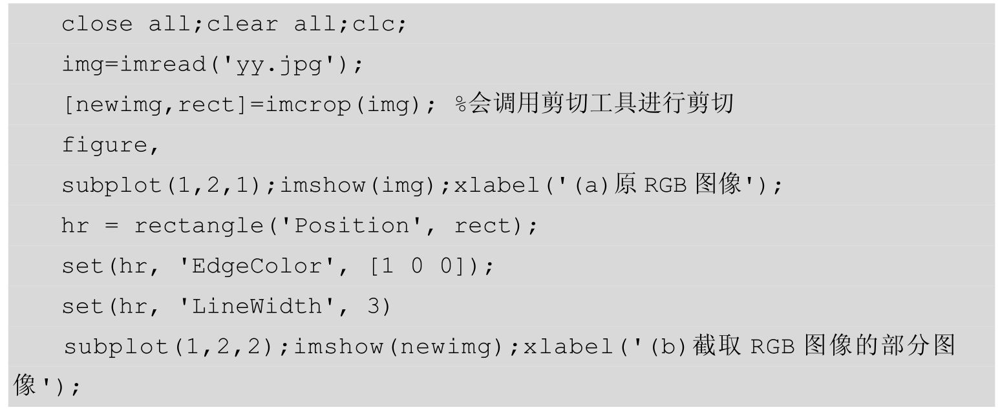
运行Code23后，首先会显示原图像，并且出现剪切工具，可通过滑动鼠标选择要截取的图像区域，如图2-33所示。选择好要截取的区域后，双击该区域，此时截图完成，可以看到工作空间增加了rect和newimg。rect是截取图像的范围，如图2-34所示；newimg是截取的图像矩阵。最后显示原图像和截图部分的图像，并且以截取范围在原图像上作一个矩形框，如图2-35所示。
图2-33 滑动鼠标选择要截取的图像区域
如图2-34 截取图像的范围
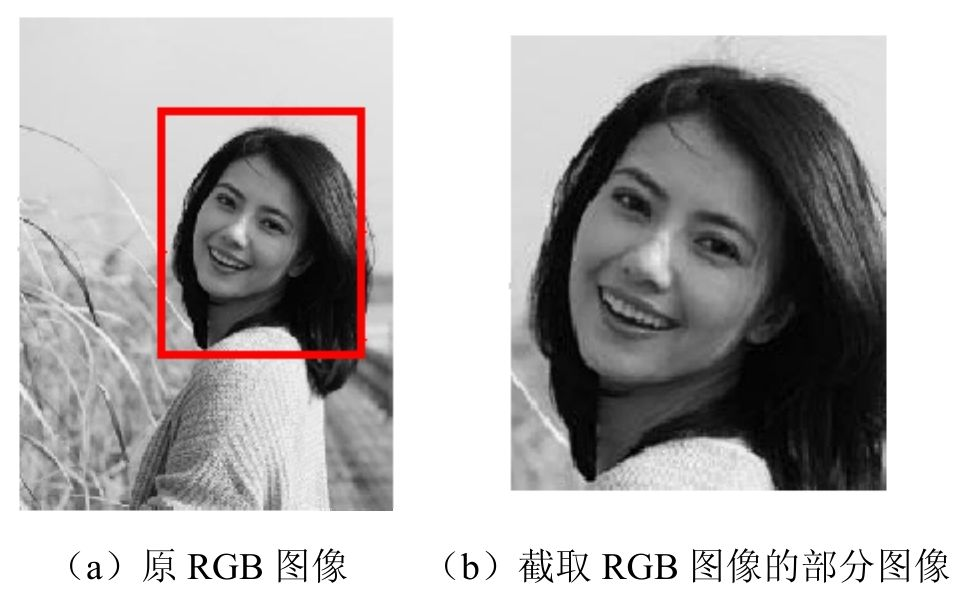
图2-35 Code23的运行结果
2.5.5 图像的翻转
在数字图像处理中，图像的镜像就是对图像进行翻转，分为水平镜像和垂直镜像。水平镜像是以图像的垂直中心轴，将图像左右部分进行翻转；垂直镜像是以图像的水平中心轴，将图像上下部分进行翻转。在MATLAB中，函数fliplr()可以实现矩阵的水平翻转，函数flipud()可以实现矩阵的垂直翻转。由于在MATLAB中，图像是以矩阵的形式存在的，因此可使用函数fliplr()和flipud()进行图像的翻转，格式如下。
如果是索引图像，则只翻转它的数据矩阵X即可（[X,map]=imread(ind)）。
下面通过Code24来说明如何利用函数fliplr()和flipud()进行图像的翻转。
Code24：ch2_24.m
运行Code24后，结果如图2-36所示，Figure1是对灰度图像的各种翻转，Figure2是对索引图像的各种翻转。
图2-36 Code24的运行结果
图2-36 Code24的运行结果（续）
2.6 图像的噪声和滤波
在数字图像处理中，经常会遇到一些模糊、失真或者有干扰的图像，这些造成图像不清晰的因素就是图像的噪声。图像的噪声可分为加性噪声、乘性噪声和量化噪声，常见的噪声模型有高斯噪声、椒盐噪声、均匀分布噪声、指数分布噪声和Gamma分布噪声。为了获得清晰的、高质量的图像，需要对有噪声的图像进行去噪，比较经典的去噪算法有均值滤波、自适应维纳滤波、中值滤波、形态学噪声滤波和小波滤波。本节主要对常见的噪声模型和经典的去噪算法进行介绍。
2.6.1 常见的噪声模型
1.高斯噪声
高斯噪声是一种源于电子电路噪声和由低照明度或高温带来的传感器噪声。高斯噪声是一种比较常见的噪声，它的概率密度呈正态分布。
在MATLAB中，函数imnoise()可以对图像添加高斯噪声，有三种方式，格式如下。
第一种：
newimg=imnoise(img,’ gaussian’,m,v);
newimg是添加高斯噪声后的图像，img是原图像，gaussian表示噪声类型为高斯噪声，m为噪声的均值，v是噪声的方差。m和v如果不设置，则使用系统默认参数。
第二种：
newimg=imnoise(img,’localvar’，V);
newimg是添加高斯噪声后的图像，img是原图像，V是一个和img相同尺寸的数组，V中的每个元素表示在img对应位置添加的高斯噪声的方差，此时高斯噪声的均值为0。
第三种：
newimg=imnoise(img,’localvar’，h,v);
newimg是添加高斯噪声后的图像，img是原图像，h是一个表示图像亮度的向量，亮度值在[0,1]。v和h的长度相同，h的每个值表示和v对应位置的亮度上添加的高斯噪声的方差。
下面我们通过Code25来说明如何在图像上添加高斯噪声。
Code25：ch2_25.m
运行Code25后，结果如图2-37所示。该程序使用三种不同的方式添加高斯噪声，图（a）是原图像，图（b）是根据噪声的均值和方差添加高斯噪声后的图像，图（c）是根据像素位置添加高斯噪声后的图像，图（d）是根据图像的亮度添加高斯噪声后的图像。
图2-37 Code25运行后的结果
2.椒盐噪声
椒盐噪声是一种只有两种灰度值作为噪声出现在图像上的噪声，因此也称为双极脉冲噪声。负脉冲时黑点出现，正脉冲时盐点（白点）出现。
去除椒盐噪声最常用的算法是中值滤波。
对图像img添加噪声，类型可以为：gaussian（高斯噪声）、salt&pepper（椒盐噪声）、speckle（乘性噪声）、poisson（泊松噪声）。param是对应类型噪声的参数，如果不设置，则使用系统默认的参数。
在MATLAB中，也可以使用函数imnoise()产生椒盐噪声，格式如下。
newimg=imnoise(img，’salt & pepper’,d)
newimg是添加椒盐噪声后的图像；img是原图像；salt & pepper表示噪声的类型为椒盐噪声；d为椒盐噪声的密度，表示椒盐噪声占图像像素总分的百分比。
下面我们通过Code26来说明如何利用函数imnoise()产生椒盐噪声。
Code26：ch2_26.m
运行Code26后，结果如图2-38所示。图（a）的噪声密度为0.01，图（b）的噪声密度为0.08。从中可以看出，噪声密度越大，噪声越多。黑点代表胡椒点，白点代表盐点。
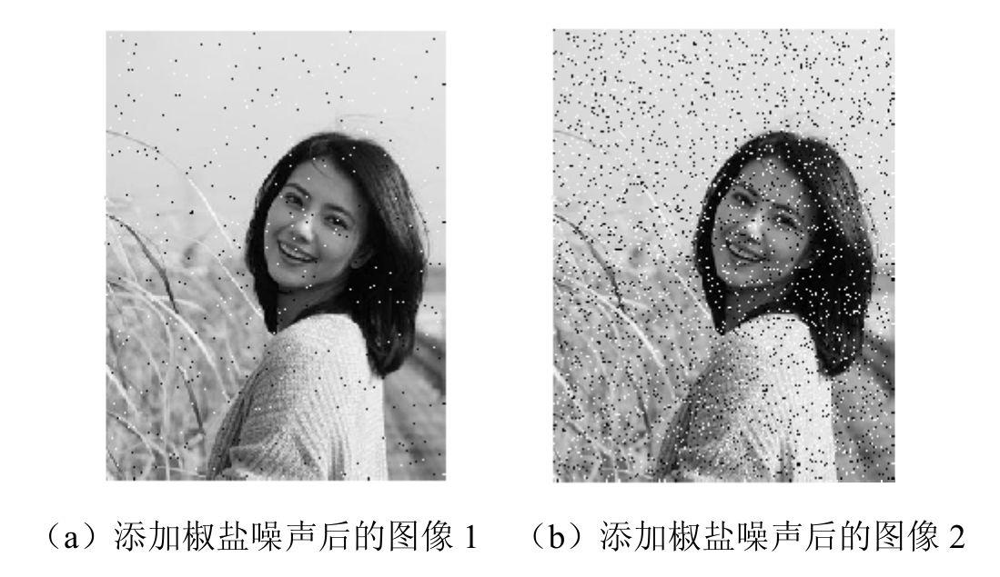
图2-38 Code26的运行结果
此外，函数imnoise()还可以产生其他类型的噪声，如乘性噪声、泊松噪声等，本书不多做介绍，读者可查阅MATLAB帮助文档进行学习。
2.6.2 经典的去噪算法
1.均值滤波
均值滤波是一种简单的去噪方法，对于图像中的坐标为(x,y)的像素，以该点为中心创建一个矩形框，计算该矩形框中像素的平均值，用得到的平均值替换像素点(x,y)的值。在MATLAB中，可以通过函数fspecial(‘average’)得到均值滤波算子，然后利用函数imfilter()对含噪声的图像进行滤波。
下面我们通过程序Code27来说明如何利用函数fspecial()和函数imfilter()对包含噪声的图像进行均值滤波。
Code27:ch2_27.m
运行Code27后，结果如图2-39所示。可以看到，进行均值滤波后的图像变得模糊，这是因为均值滤波破坏了图像的细节部分，这也是均值滤波的一个缺点。
图2-39 Code27的运行结果
2.自适应维纳滤波
在MATLAB中，函数wiener2()可以对含噪声的图片进行自适应维纳滤波，还可以估计噪声。该函数由图像的局部方差决定滤波器的输出结果，使用格式如下。
newimg=wiener2(img,[m,n],noise);
img是包含噪声的图像；[m,n]是采用的窗口大小，默认为[3,3]；noise是噪声的能量；newimg是滤波后的图像。
[newimg,noise]=wiener2(img,[m,n])
该函数用来估计图像中的噪声。
下面我们通过Code28来说明如何对包含噪声的图像进行自适应维纳滤波。
Code28：ch2_28.m
运行Code28后，结果如图2-40所示。在工作空间中，查看noise的值，即估计的噪声能量，noise=0.0124。
图2-40 Code28的运行结果
3.中值滤波
中值滤波是顺序统计滤波中的一种，顺序统计滤波中还有最小值滤波、最大值滤波。中值滤波适合去除椒盐噪声，因为它可以保留图像的边缘。对于图像上坐标为(x,y)的像素，以该像素为中心的一个m×n像素的窗口，找出该区域内中间的像素值，用于替换点(x,y)的像素值。在MATLAB中，函数medfilt2()可实现图像的二维中值滤波，格式如下。
newimg=medfilt2(img,[m,n]);
img是含噪声的图像；newimg是滤波后的图像；[m,n]是窗口的大小，默认为[3,3]。
下面我们通过Code29来说明如何利用函数medfilt2()对含噪声的图像进行滤波。
Code29：ch2_29.m
运行Code29，结果如图2-41所示。由图2-41（a）和（b）可以看出，中值滤波对于含椒盐噪声的图像去噪效果较好。
图2-41 Code29的运行结果
第3章 人脸检测实战
人脸检测是计算机视觉方面的一个重要方向，是目标检测的一个特例。我们通过眼睛可以快速准确地辨别出一张图片中是否包含人脸，以及人脸的所在位置。随着计算机技术的迅速发展，人们希望可以借助计算机自动检测人脸，并把这一技术嵌入到各种应用中。
经过多年的研究，已经出现了一些较为准确的人脸检测算法。本章主要介绍3种人脸检测算法，分别是DPM、LAEO、Viola&Jones。下面我们将从使用方法、算法原理和检测结果这三个方面对每种算法进行介绍，让读者能够对人脸检测技术有一个全面的了解。
3.1 DPM人脸检测算法
该人脸检测算法使用的检测模型为dpm-baseline[1] ，本书称之为DPM人脸检测算法。它可以检测多角度的人脸，是M.Mathias等人在2014年提出的[2] 。和一些比较成熟的算法相比，DPM人脸检测算法的检测效果和它们相当，甚至可以取得更好的结果，主要原因在于：其选择了合适的训练数据，以及发现了非极大值抑制的重要性。M.Mathias等人公开了训练好的人脸检测模型——dpm-baseline，并提供了开源的代码。本书就是使用他们提供的开源模型和源代码进行人脸检测的。
3.1.1 DPM人脸检测算法的使用
本书实现的DPM人脸检测算法是基于MATLAB语言实现的，对应的项目名称为dpmMATLAB。该项目内包含了DPM算法运行所需的全部文件，分为两部分，即dpm_face_detector和voc-dpm-master[3] 。dpm_face_detector中存放了人脸检测模型[1] 、主要程序[4] 和测试图片；voc-dpm-master中存放了程序运行中需要调用的函数。
在运行程序之前，还需要一些配置，具体如下：
（1）首先打开MATLAB，切换到主函数detect_faces.m所在的目录。
（2）单击home→Set Path→Add to Path with Subfolders，选择voc-dpm-master文件夹，如图3-1所示，最后单击“保存”按钮并关闭。
（3）本书程序是在Windows 64位操作系统和MATLAB 2012b下运行的。如果读者的运行环境和本实验一致，则配置完成。如果读者使用的是32位操作系统或者在文献[3]中下载voc-dpm-master，则使用dpmMATLAB\change文件夹下的.cc文件，替换掉voc-dpm-master中对应的文件，并使用“mex–O xx.cc”对这类.cc文件进行编译。编译成功后，则配置完成。
图3-1 Add to Path with Subfolders对话框
待检测图片在data\original_image文件夹下。
检测结果在data\face_detection_results文件夹下。
读者可根据实际情况，在detect_faces.m文件中，修改存放检测图片和检测结果的路径，如下：
选择好路径后，运行主函数detect_faces.m，即可使用DPM人脸检测算法进行人脸检测。
3.1.2 DPM人脸检测算法的原理
该算法使用可变形部件模型（Deformable Part Model）目标检测框架[5] ，包含一个训练好的、可以检测多角度人脸的模型dpm-baseline.mat，对输入的检测图片在检测模型上进行处理后，得到若干个检测框，初步得到的检测框经过NMS处理，即可得到最终人脸检测结果。作者在文中提到，该算法检测质量好的主要原因是选择了合适的训练数据和发现了非极大值抑制的重要性[2] 。
- dpm-baseline模型的训练数据
该模型从AFLW数据集收集了15 106个样本数据进行训练，分为三类：6752个正面脸样本（脸部上下偏移±20°），5810个侧面脸样本（脸部左右偏移20°～60°），2544个侧面脸样本（脸部左右偏移60°～100°），分别训练成3个组件（Component）。通过翻转，3个组件变为6个组件，每个组件有一个根模板和8个部件，如图3-2所示，该图来源于文献[2]。除初始化组件外，所有训练参数都使用默认值。
图3-2 dpm-baseline模型的6个组件
选择的样本质量和数量合适，是该算法检测效果好的一个重要因素。在检测质量方面，DPM算法选择了多角度的人脸样本进行训练，训练好的模型可以检测多种角度的人脸。作者从精度和召回率方面评估了训练样本数量不同对检测质量的影响。结果显示，当有500个训练样本时，DPM的平均精度可以达到95%，增加训练样本个数可以在保持精度不变的情况下提高召回率。
2.非极大值抑制的重要性
非极大值抑制（Non-Maximum Suppression，NMS）的目的是保证每个检测实例只有一个检测框。对于同一个检测实例，选择得分最高的检测框的同时，自动移除得分低的检测框。假设我们设置重叠阈值（Overlap Thresh）为0.3，已经找到了一个得分高的检测框A，比较检测框B和检测框A，如果检测框A、B的重叠面积比总和面积（IoU）小于0.3，则认为检测框A、B不是同一个检测实例，保留检测框B，否则删除检测框B。NMS的重叠阈值是一个影响检测质量的重要参数。作者在论文中指出，使用不同的重叠阈值在Pascal Faces数据集上比较DPM的检测质量，发现阈值为0.3比默认值0.5的检测效果好，如图3-3所示，该图引自文献[2]。

图3-3 DPM在Pascal Faces数据集上使用不同重叠阈值的检测结果
3.源代码分析
上面从理论方面分析了DPM检测模型和NMS的重要性，接下来我们将结合文献[4]中的源代码详解如何利用dpm-baseline.mat和NMS进行人脸检测。Code1、Code2中的程序均来自文献[4]。
Code1：主函数 detect_faces.m
通过对detect_faces.m的分析，读者对DPM人脸检测过程会有一个大概的了解。接下来，我们分析一下process_face.m的主要代码。
Code2：process_face.m
由Code1中的主函数detect_faces.m可知，最终得到的人脸检测框通过函数showsboxes_face在图片上进行标记，但是这些检测框区域内的图像有的是真实的人脸，有的可能并非人脸。我们称非人脸的检测框为“噪声”，因此，在showsboxes_face函数中，我们对每一张图片得到的所有检测框进行判断，如果不是噪声，则在图片上标记出该检测框；否则，忽略该检测框，不标记。
关于如何去噪，这里使用了GN Stamou和I.Pitas等人提出的方法，步骤如下：
（1）把检测框区域对应的图片切出来，并且把这张图片转换为HSV颜色空间。
（2）在HSV图像中，如果一个像素点的0<H<0.15，且0.2<S<0.6，则称为“像皮肤”（skin-like）。
（3）如果该区域内的skin-like个数除以该图的总像素点个数大于1/4，则认为是真人脸，否则为假人脸。
下面是去噪算法的代码。
Code3：out_false.m
关于该算法的更多细节，可以查看FaceDetectAlgos\dpmMATLAB下的所有文件。
3.1.3 DPM人脸检测算法的检测结果
经测试，我们发现DPM人脸检测算法的检测质量很好。DPM人脸检测算法可以检测正脸、侧脸、仰脸、平躺草地等类型的图片，这归功于选择了多角度的训练样本。针对图片尺寸小的情况，检测时间短、效果好；但针对大尺寸的图片，检测时间长，甚至报错。在图3-4中，我们呈现了一些有代表性的图片的检测结果。
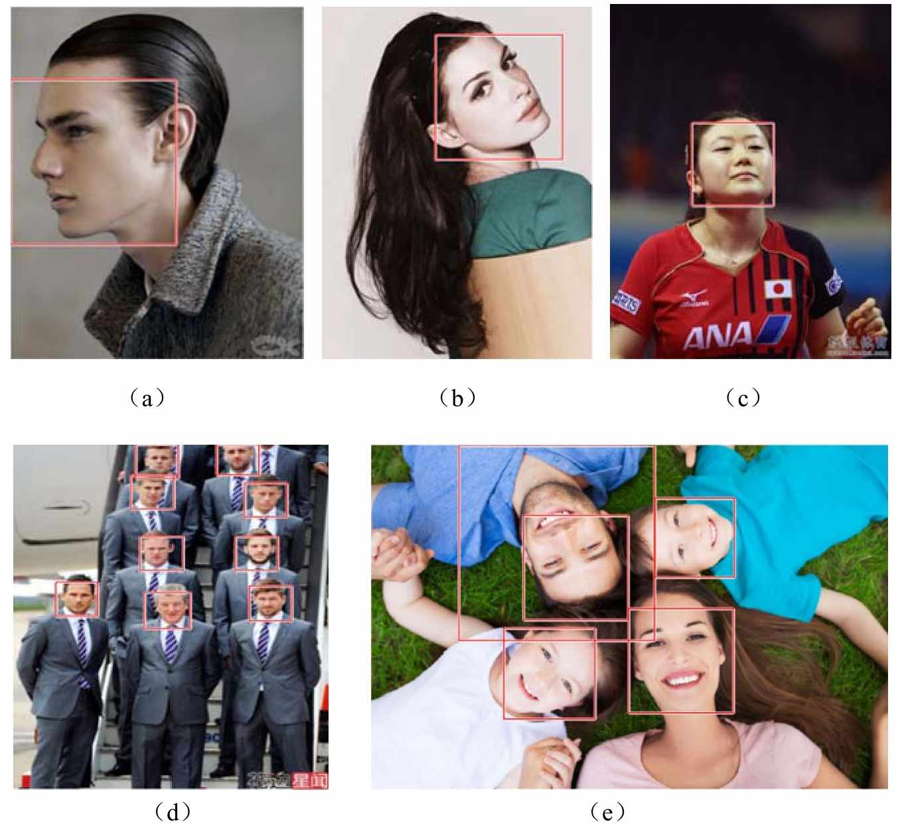
图3-4 DPM人脸检测算法的检测结果
3.2 LAEO人脸检测算法
LAEO人脸检测算法是由Marin-Jimenez等人提出的[6] ，该算法主要是为了检测视频中的人是否正在看彼此（Looking At Each Other，LAEO）。该算法主要分为三步：①使用UB（upper-body）检测器，检测出人身体的上半部分，再使用head detector在upper-body的检测框内检测出人头；②估计人头部的姿势，即偏移角度yaw和pitch；③通过偏移角度判断人们是否正在看彼此（LAEO）。本书介绍的人脸检测程序是这个检测算法的第一部分，Manuel等人提供了开源的代码和训练模型，我们可以直接使用它进行人脸检测。
3.2.1 LAEO人脸检测算法的使用
LAEO人脸检测算法，是使用MATLAB语言开发的，对应的项目名称为headdetsMatlab。该项目内包含leaohead_v2[7] 和voc-release4.01[8] 两部分，leaohead_v2中包含主要函数、测试图片、训练好的模型；voc-release4.01中包含程序运行过程中需要调用的函数。
在运行该项目之前，首先需要进行配置，具体如下：
（1）首先打开MATLAB，切换到主函数test.m所在的目录。
（2）单击home→Set Path→ Add to Path with Subfolders，选择voc-release4.01文件夹，同图3-1，最后单击“保存”按钮并关闭。
（3）本书程序是在Windows 64位操作系统和MATLAB 2012b下运行的。如果读者的运行环境和本实验一致，则配置完成。如果读者使用的是32位操作系统或者在文献[8]中下载voc-release4.01，则使用headdetsMatlab\change文件下的.cc文件，替换掉voc-release4.01中对应的文件，同时使用“mex –O xx.cc”对这类.cc文件进行编译。编译成功后，则配置完成。
检测图片在headdetsMatlab\laeohead_v2\image文件夹下。
检测结果在headdetsMatlab\laeohead_v2\result文件夹下。
读者可根据实际情况修改检测图片和检测结果的存放路径，具体如下。
修改检测图片的存放路径：在test.m中修改images_folder_path。
修改检测结果的存放路径：在demoheaddet.m中修改out。
选择好路径后，运行test.m，即可使用LAEO人脸检测算法进行测试。
程序的说明
本书实现的程序对文献[7]中的demoheaddet.m文件进行了修改，因为原程序在检测图片时，如果没有得到检测框，则该程序会报错。此外，为了自动检测一个文件夹下的所有图片，我们创建了test.m作为测试的入口，具体如下。
Code4：test.m
在demoheaddet.m中，默认的detthr=-0.82，得分大于detthr的框都有可能成为检测框。detthr值越小，得到的检测框越多，同时噪声也增多。本书中选择detthr=-0.92。
3.2.2 LAEO人脸检测算法的原理
Manuel等人首先训练了一个UB（upper-body）检测器，使用的也是Felzenswalb等人的DPM目标检测模型[5] 。正训练样本采用的是好莱坞电影数据集中标注过的关键帧，这些正训练样本包含了不同角度、不同尺寸的包含人体上半部分的图片；负训练样本采用INRIA-Person数据集中不包含人的图片。UB检测器只包含一个组件。使用这个UB检测器单独处理每一帧，随着时间把对应的检测框联合起来，使用Everingham等人设计的追踪方法：在不同帧中的同一个检测框被许多KLT点连接起来，如果一个追踪中检测框个数小于20或者检测得分和小于某个阈值，则认为这个检测框是误报（false-positive）并将之舍弃。
和UB检测器类似，LEAO也使用Felzenswalb等人的DPM目标检测模型[5] 训练一个头部检测器（head detector），使用和UB检测器相同的图片进行训练。最后使用head detector在UB检测框内检测出人的头部对应的坐标位置。
上面分析了LAEO人脸检测算法的相关理论，接下来我们结合源代码对该算法进行分析。由test.m可知，把存放测试图片路径下的每张图片一一传递给demoheaddet.m，由demoheaddet.m进行人脸检测处理。下面是demoheaddet.m的代码，该代码来自文献[7]。
Code5：demoheaddet.m
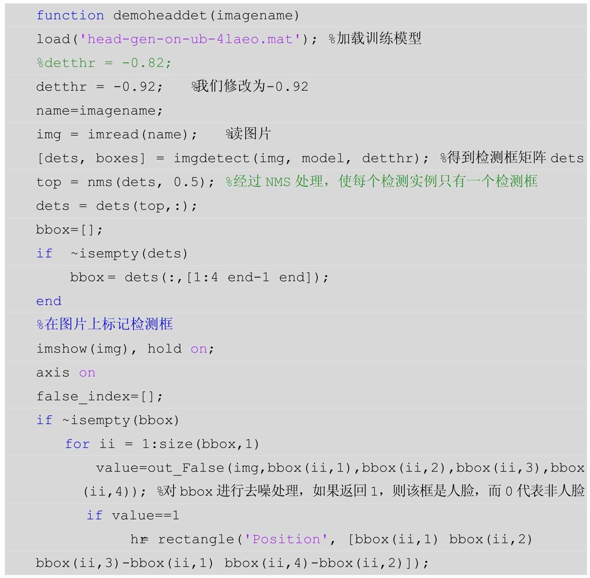

通过程序test.m和demoheaddet.m，读者已经对LAEO人脸检测算法的步骤有了整体的了解，有关该算法更具体的实现细节，可以查看FaceDetectAlgos\headdetsMatlab中的相关文件。
3.2.3 LAEO人脸检测算法的检测结果
和DPM相比，LAEO人脸检测算法的检测效果没有DPM好，但是它可以检测尺寸相对大的图片，而DPM却不能。下面呈现了一些有代表性的图片的检测结果，如图3-5和图3-6所示。
图3-5 当detthr=-0.82时headdet算法的检测结果
图3-5 当detthr=-0.82时headdet算法的检测结果（续）
图3-6 当detthr=-0.92时headdet算法的检测结果
由图3-5和图3-6可以发现，当detthr值变小时，可以得到更多的检测框，但检测到更多的噪声（误报）。此外，我们也测试了detthr=-1的情况，但结果噪声多、效果不理想。综合上述考虑，我们选择了detthr=-0.92。
3.3 Viola&Jones人脸检测算法
OpenCV是一种采用C/C++编写的开源计算机视觉库，它可以很方便地用于图像处理和分析。OpenCV视觉库中包含开源的人脸检测程序，本部分主要使用的是OpenCV中的Viola&Jones人脸检测算法，该算法可以高效地进行人脸检测。
3.3.1 Viola&Jones人脸检测算法的使用
新建Viola&Jones人脸检测程序，对应的项目名称为facedet_opencv。该程序需要在Visual Studio平台上安装OpenCV才能运行，我们测试使用的是Visual Studio 2010和OpenCV2.4.9。读者首先要确保安装了这两个软件，打开facedet_opencv.sln后，还要进行一些配置修改，具体如下。
· 在项目上单击鼠标右键，选择“属性”→“配置属性”→“VC++目录”→“包含目录和库目录”进行修改，修改为自己计算机的OpenCV对应的路径。
· 如果你使用的不是OpenCV2.4.9，则还需要在项目上单击鼠标右键，选择“属性”→“配置属性”→“连接器”→“输入”→“附加依赖项”进行修改。
此时程序就可以正常运行。
测试图片在facedet_opencv\facedet_opencv\image文件夹下。
检测结果在facedet_opencv\facedet_opencv\opencv_result文件夹下。
读者可根据实际情况，在facedection.cpp中修改测试图片和检测结果的存放路径。
最后运行facedection.cpp，即可使用该算法进行人脸检测。
3.3.2 Viola&Jones人脸检测算法的原理
Viola&Jones人脸检测算法主要基于Viola&Jones检测器，该检测器是由Paul Viola和Michael Jones在2001年发表的[9] ，它可以快速、高效地检测人脸。
Viola&Jones检测器主要分为三部分：
（1）使用积分通道快速计算图像的特征值。
（2）利用AdaBoost分类器筛选特征。
（3）将AdaBoost分类器改为级联的分类器，从而快速丢弃非人脸的特征。
OpenCV视觉库中包含了训练好的脸部级联分类器，我们使用的是：
haarcascade_frontalface_alt.xml
下面我们结合一些主要代码对该算法进行分析。
Code6中的主函数facedection.cpp的功能就是加载级联分类器、读入图片，然后调用detectAndDraw函数进行人脸检测和在图片上标记对应的人脸检测框。
Code7的detectAndDraw函数是实现Viola&Jones人脸检测的主要过程，首先对图片进行预处理；然后调用CascadeClassifier的detectMultiScale方法[10] ，即可得到最终的人脸检测框；最后在图片上标记人脸检测框。Code6和Code7均来自OpenCV官方网站。
Code6：facedection.cpp
Code7：detectAndDraw函数
Viola&Jones图像预处理的步骤如下。
预处理1：将图片按一定比例缩小。
预处理2：detectMultiScale方法需要CV_8U矩阵数据作为输入，首先要将图片转换为灰度图像。
预处理3：使用直方图均衡化进行处理，使级联分类器分析起来更方便。
方法detectMultiScale()的一些主要参数的分析如下。
· Mat矩阵image——传入的图片，格式是CV_8U。
· 向量objects——检测到的所有检测框的位置。
· scaleFactor——每张图片缩放的比例。
· minNeighbors——每个候选检测框应该至少有的邻近元素个数。
· SizeminSize、SizemaxSize限定目标检测框的范围，即Size(30,30)。
3.3.3 Viola&Jones人脸检测算法的检测结果
经过大量的测试发现，Viola&Jones人脸检测算法能够很好地检测正脸，即使检测大尺寸图片，它也可以在短时间内得到很好的检测效果，但是它不能很好地检测非正脸的图片，如图3-4的（a）、（b）、（e），这类图片Viola&Jones都检测不到。在图3-7中，我们呈现了一些有代表性的图片的检测结果。
图3-7 Viola&Jones人脸检测算法的检测结果
参考文献
[1] The doppia repository. https://bitbucket.org/rodrigob/doppia/src/.
[2] Markus Mathias, Rodrigo Benenson, Marco Pedersoli, Luc Van Gool. Face detection without bells and whistles, 2014.
[3] DPM Software. https://github.com/rbgirshick/voc-dpm/tree/master.
[4] Face Detector. http://markusmathias.bitbucket.org/2014_eccv_face_detection.
[5] Pedro F. Felzenszwalb, Object Detection with Discriminatively Trained Part Based models. IEEE Transactions on Pattern Analysis and Machine Intelligence,2009.
[6] M.J. Marin-Jimenez, A. Zisserman, V. Ferrari. “Here’s looking at you, kid.”Detecting people looking at each other in videos.British Machine Vision Conference (BMVC), 2011.
[7] LEAO Software. http://www.uco.es/~in1majim/sandbox/headmview/.
[8] VOC Software. http://cs.brown.edu/~pff/latent-release4/.
[9] P Viola. Rapid Object Detection using a Boosted Cascade of Simple Features.CVPR, 2001.
[10] Voila&Jones Face Detector in OpenCV. http://docs.opencv.org/modules/objdetect/doc/cascade_classification.html#cascade-classifier-detectmultiscale.
第4章 基于深度学习的人脸检测算法
本章主要介绍一些较新的、基于深度学习的人脸检测算法，包括CNN Facial Point Detection人脸检测算法、DDFD人脸检测算法，以及不同人脸检测算法的结果融合的技术。
4.1 CNN Facial Point Detection人脸检测算法
CNN Facial Point Detection人脸检测算法，是由Yi Sun等人[1] 在2013年提出的。该算法主要是实现面部关键点的检测，运行速度快、执行效率高，可以检测侧脸。但如果一张图片被检测到多个人脸，那么在执行面部关键点检测前需要手动处理，比较烦琐。此外，由于Yi Sun等人只提供了算法的.exe可执行文件（只能运行在Windows平台上），所以本部分的实验只能在Windows操作系统上运行，更多内容可以参考文献[2]。本书提供的程序是调用文献[2]中的Face detector程序的可执行文件，并进一步处理。在本部分，我们实验的主要功能是人脸检测，不考虑面部关键点检测。
4.1.1 CNN Facial Point Detection人脸检测算法的使用
该算法需要在Visual Studio上配置OpenCV视觉库才能运行，本书实现的程序是在Visual Studio 2010和OpenCV2.4.9上进行测试的，该项目对应的名称为：facedetect_ windows。
打开facedet_winds.sln后，还要进行一些配置修改，具体如下。
· 在项目上单击鼠标右键，选择“属性”→“配置属性”→“VC++目录”→“包含目录和库目录”进行修改，修改为自己计算机的OpenCV对应的路径。
· 如果你使用的不是OpenCV2.4.9，则还需要在项目上单击鼠标右键，选择“属性”→“配置属性”→“连接器”→“输入”→“附加依赖项”进行修改。
检测图片在code_face\image文件夹下。
检测结果在result\文件夹下。
读者可根据实际情况，修改存放检测图片和检测结果的路径。
修改存放检测图片的路径：将code_face/imagelist.txt的内容修改为检测图片的路径和图片名，第一行指定检测的图片个数，接下来每一行是一个检测图片的路径。
修改存放检测结果的路径：修改detect_windows.cpp的filename。
选择主函数facedection.cpp，按“F5”键或者单击“运行”按钮，就可以使用CNN Facial Point Detection人脸检测算法进行人脸检测。
4.1.2 CNN Facial Point Detection人脸检测算法的原理
Yi Sun等人提出的算法本质上是检测面部关键点的，检测出左眼中心、右眼中心、鼻子尖、嘴部左角和嘴部右角，使用了三层卷积网络。为了检测效果的准确性和鲁棒性，在第一层使用整个面部区域的所有信息进行特征提取，从而得到较准确的初始估计位置。第二、三层是对初始的估计位置进行调整，达到更高的准确率。它和许多商业软件及最新算法进行对比，获得了很好的检测结果。
CNN Facial Point Detection人脸检测算法主要包括两部分，第一部分是使用人脸检测器检测人脸，标记出边界框，即文献[2]中的Face detector；第二部分是以边界框作为输入检测出面部关键点的位置，即文献[2]中的Point detector。本书中使用该算法的第一部分进行人脸检测。
我们在主函数facedection.cpp中，通过如下语句调用code_face的可执行文件，进行人脸检测。
生成bbox.txt文件，该文件中每一行包含：图片名及对应的人脸检测框。每个人脸检测框由四个数据组成，分别对应left、right、top、bottom。然后读取bbox.txt文件，对每张图片进行人脸标记。
4.1.3 CNN Facial Point Detection人脸检测算法的检测结果
经过测试发现，无论检测图片的尺寸大或者小，该算法的运行时间都较短，检测效果好、噪声少，同时可以检测侧脸，但不能很好地检测如图3-4（e）所示的那类图片。遗憾的是，作者仅公开了可执行程序，而源程序并未开源。在图4-1中，我们呈现了一些有代表性的图片的检测结果。
图4-1 CNN Facial Point Detection人脸检测算法的检测结果
4.2 DDFD人脸检测算法
DDFD人脸检测算法是由Farfade等人[3] 在2015年发表的。该算法是一种基于深度学习的人脸检测算法，并可以进行多角度的人脸检测。通常进行多角度人脸检测的算法需要训练大量的模型捕捉各个方向的人脸，还需要对面部关键点或者面部姿势进行注解，这些方法工作量大，比较复杂。DDFD人脸检测算法只需要一个基于深度卷积神经网络的模型（Deep Dense Face Detector，DDFD），就可以检测各个方向的人脸。
4.2.1 DDFD人脸检测算法的使用
关于DDFD人脸检测算法的程序，Farfade等人没有公开源代码和检测器，本书使用的程序来自文献[4]和文献[5]。
新建一个项目，名称为：Face Detection_CNN-master。该项目包含主要程序[6] 和训练好的模型[7] ，本书只是利用该算法进行检测。
注意：该算法需要在Caffe环境下运行。
读者可根据实际情况，在test.py文件中修改检测图片和检测结果的存放路径，具体如下。
检测图片路径：
face_detection(‘face.txt’)
face.txt是包含检测图像名称的文档。
检测结果路径：
imageFile.save(“result/“ + str(img_count) + “.jpg”)
修改路径后，运行test.py即可使用DDFD人脸检测算法进行人脸检测。
如果读者需要自行训练模型，则可按照如下步骤处理。
（1）运行image_preprocess.py。该程序是为了对图片进行预处理，使用AFLW[8] 数据库，对于每张图片，如果检测到的人脸与真实的人脸区域重叠面积大于0.5，则认为是正样本；如果小于0.3，则认为是负样本。
（2）运行train.sh。该程序使用AlexNet[9] 在AFLW数据库上继续训练，训练后得到的模型为alexNet__iter_60000.caffemodel[7] 。
（3）参考文献[10]将全连接层通过改变参数改成卷积层。
（4）最后运行test.py。该程序可以得到每张图片的热度图，通过热度图定位人脸区域。
如果读者对检测结果不是很满意，则可以修改test.py里面的函数face_detection中参数factor的值和delim中的值，具体如下。
4.2.2 DDFD人脸检测算法的原理
使用AFLW数据库，对于每张图片来说，如果与检测到的人脸重叠面积大于0.5，则认为是正样本。所有图片缩放到227×227像素。作者通过使用预训练模型AlexNet Model和AFLW数据库进行调优训练，在调优过程中，设置最大迭代次数为50K，批处理大小为128个，其中96个为正样本，32个为负样本。
作者使用的网络结构与AlexNet网络类似，AlexNet网络包含8层，前5层为卷积层，后3层为全连接层。作者首先通过重新设置网络参数将最后三层全连接层改成了卷积层，这样就可以通过使用修改后的网络提取任何尺寸的图片的热度图。热度图中的每一个点代表存在面部区域的概率值，对应原来图片中227×227像素的区域。然后使用NMS（非最大值抑制）机制来最终确定人脸区域。最后对图片进行缩放，并分别对缩放得到的图片进行检测，从而得到最终的人脸区域结果。
4.2.3 DDFD人脸检测算法的检测结果
经过大量的测试发现，DDFD人脸检测算法能够很好地检测多角度人脸，但是检测结果中有很多噪声，根据文献[3]中提到的结论，该算法的检测效果应该是很好的。但是本书测试结果有很多噪声，可能是因为本书程序中训练的模型不好，或者test.py参数没有设置好。在图4-2中，我们呈现了一些有代表性的图片的检测结果。
图4-2 DDFD人脸检测算法的检测结果
4.3 人脸检测算法融合
人脸检测算法融合，这里指将多个算法的检测结果合并，从而尽可能多地检测到所有人脸。多种人脸检测算法的融合，是行之有效的提高人脸检测准确率的方法。如图4-3所示，图（a）是Viola&Jones人脸检测算法的检测结果，图（b）是CNN Facial Point Detection人脸检测算法的检测结果，如果将这两个算法的检测框合并，就可以检测到所有的人脸。
图4-3 不同算法的人脸检测结果
如果直接合并这 10 个检测框，则同一个区域上可能会有两个检测框，如图4-4所示。所以，在合并不同人脸检测算法的结果时，需要对结果进行判断处理，如果出现图4-4（a）中的情况，则判定两个检测框指向同一个人脸，只保留一个；如果出现图4-4（b）中的情况，两个检测框重叠区域大，则也判定这两个检测框指向同一个人脸，删除一个检测框；如果出现图4-4（c）中的情况，两个检测框的重叠区域较小，则判定为不同的人脸，不做处理；如果出现图4-4（d）中的情况，两个检测框不重叠，则判断为不同的人脸，不做处理。
图4-4 合并后检测框的情况（两种不同颜色的检测框分别代表不同算法的检测结果）
图4-4（b）中重叠区域大，表示指向同一个人脸；图4-4（c）中重叠区域较小，表示指向不同的人脸。那么重叠区域大小的判断标准是什么呢？对于两个检测框A、B来说，如果A框的中心点在B框区域内，并且B框的中心点在A框区域内，则表示它们重叠区域大，即高度重合；否则表示它们重叠区域小。
本书介绍了6种人脸检测算法，分别是DPM、LAEO、Viola&Jones、CNN Facial Point Detection、DDFD、Fast R-CNN（第5章将介绍）。接下来我们对其中某些算法的检测结果进行融合。
- DPM和 LAEO算法的融合
DPM和LAEO算法的融合有两种实现途径：
（1）使用MATLAB实现的程序，对应的项目名称为：FaceDetect Algos\dpm_headdet_opencv_Matlab。
在运行之前，需要添加子文件夹dpm_headdet_opencv_Matlab\voc-release的一些函数。读者可根据实际情况，在main.m 文件中修改存放检测图片和检测结果的路径，如下：
修改好路径后，单击main.m即可测试该合并算法。
（2）使用C++在 Visual Studio 上实现的程序，对应的项目名称为：FaceDetectAlgos dpm_headdet_opencv_C。运行该项目只要在 Visual Studio 上配置好OpenCV视觉库即可。
读者可根据实际情况，在detectFace.cpp文件中修改存放检测图片和检测结果的路径，如下：
修改好路径后，单击detectFace.cpp即可测试该合并算法。
- CNN Facial Point Detection和 Viola&Jones算法的融合
CNN Facial Point Detection和Viola&Jones算法的融合是在 Visual Studio 平台上实现的，对应的项目名称为：FaceDetectAlgos\facedetc_windopencv。
参考文献
[1] Y. Sun, X. Wang, X. Tang. Deep Convolutional Network Cascade for Facial Point Detection. In Proceedingsof IEEE Conference on Computer Vision and Pattern Recognition (CVPR), 2013.
[2] http://mmlab.ie.cuhk.edu.hk/archive/CNN_FacePoint.htm.
[3] Sachin Sudhakar Farfade, Mohammad Saberian, Li-Jia Li. Multi-view Face Detection Using Deep Convolutional Neural Networks. International Conference on Multimedia Retrieval(ICMR), 2015.
[4] https://github.com/guoyilin/FaceDetection_CNN.
[5] http://blog.csdn.net/guoyilin/article/details/46347271.
[6] Multi-view Face Detection Using Deep Convolutional Neural Networks. https://github.com/guoyilin/FaceDetection_CNN.
[7] 人脸检测之DDFD. http://blog.csdn.net/qq_14845119/article/details/52564519.
[8] https://lrs.icg.tugraz.at/research/aflw/.
[9] A. Krizhevsky, I. Sutskever, G. E. Hinton. Imagenet classification with deep convolutional neural networks. In Proceedings of NIPS, 2012.
[10] BVLC Repositories, Caffe. http://nbviewer.jupyter.org/github/BVLC/.
第5章 基于Fast R-CNN的人脸检测
本章专门介绍一种较新的、快速的人脸检测算法——Fast R-CNN，该算法也基于深度学习技术。
5.1 Fast R-CNN简介
Fast R-CNN（Fast Region-based Convolutional Network Method[1] ）是由Ross Girshick提出的一种以R-CNN[2] 为基础的目标检测方法。和R-CNN、SPPnet[3] 相比，Fast R-CNN极大地减少了训练和测试时间，并且提高了检测质量。Fast R-CNN训练VGG16网络，比R-CNN快9倍，比SPPnet快3倍；在测试时，比R-CNN快213倍，比SPPnet快10倍。Fast R-CNN在PASCAL VOC 2012[4] 上的mAP[1] 达到了66%（R-CNN的mAP为62%）。
5.2 Fast R-CNN的特点和结构
在Fast R-CNN提出以前，基于卷积神经网络的R-CNN和SPPnet有着很高的目标检测准确率，但是它们仍存在一些缺点和不足。
R-CNN的缺点：（1）R-CNN的训练是多阶段的，首先通过selective search方法[5] 提取object proposal，然后使用CNN网络提出特征，并在SVM中分类，最后对边界框回归。（2）R-CNN训练的时间和空间花费大，使用VGG16网络在GPU上训练5000张图片需要耗时2.5天，并且在训练过程中提取的特征需要占用大量的磁盘存储空间。（3）R-CNN检测时间慢，使用VGG16网络在GPU上检测一张图片需要47s。
和R-CNN相比，SPPnet提出了特征共享计算，从而加快了训练和测试的速度。但其仍存在一些缺点：（1）训练是多阶段的。（2）特征需要写入磁盘。（3）不能更新卷积层的权重。
Fast R-CNN算法弥补了R-CNN和SPPnet的缺点。它的训练过程是单阶段的。在训练时，特征缓存不需要写进磁盘，并且使用向后传播的方法更新卷积层的权重。图5-1所示是Fast R-CNN的结构。Fast R-CNN的网络输入为一张图片和对应的object proposal集，网络使用几个卷积网络和最大pooling层对整个图像进行处理，从而产生卷积特征map。对于每个OP，使用ROI pooling层从特征map中提取固定长度的特征向量，最后这些特征向量通过一系列全连接层的处理后产生两个输出层：一个是softmax probability；另一个是边界框回归偏移。Fast R-CNN不仅提高了训练和测试的速度，而且也增加了检测的准确性。
使用预训练的网络初始化一个Fast R-CNN网络需要进行如下操作。
（1）最后一个max pooling层被ROI pooling层替换。
（2）最后的全连接层和softmax被两个输出层替换。
（3）修改网络的输入为：一个图片列表和图片对应的ROIs列表。
本书使用ImageNet预训练的网络初始化一个侧脸人脸检测模型，下面结合Fast R-CNN的源码进行介绍。
图5-1 Fast R-CNN的结构
5.3 Fast R-CNN的使用
Fast R-CNN需要在基于Caffe[6] 的环境下运行，首先确保已经成功安装和配置Caffe。本节对Fast R-CNN的配置和运行方法进行详细介绍。
1.下载 Fast R-CNN源码
强烈建议使用终端加命令的方式下载，手动下载会导致内容不完整，并且后期配置时易出错。终端下载的命令为：
git clone —recursive https://github.com/rbgirshick/fast-rcnn.git
本书下载后的项目在FRCNN目录下。
2.编译 FRCNN/lib下的文件
3.编译 FRCNN/caffe-fast-rcnn下的文件
首先把 caffe/caffe-master 下的Makefile.config文件复制到FRCNN/caffefast-rcnn文件夹内，然后将Makefile.config文件中WITH_PYTHON_LAYER=1的注释去掉，最后通过如下命令编译。
4.下载预训练模型和预选框
5.运行 demo
可以通过两种方式运行Fast R-CNN的demo。
（1）通过Python运行demo。
（2）通过MATLAB运行demo。
运行FRCNN/matlab下的fast_rcnn_demo.m。
5.4 数据集的预处理
Fast R-CNN是一个针对多类检测的目标框架，而人脸检测是2类检测，即人脸和背景。因此，本实验所用的数据集标注格式和VOC不同，并且提取预选框的方法也不同。本节详细介绍一下该实验在训练和测试时所需要提供的数据集格式。
训练时需要提供3种文件。
文件1：待训练的图片名称列表文件，通常是.txt类型，如下所示。

文件2：待训练的图片名称和对应的真实人脸边界框文件，通常是.txt类型。人脸边界框的坐标格式为：x1 , y1 , x2 , y2 ，如下所示。
文件3：待训练的图片名称和对应的object proposal，通常是.mat类型。目前有许多算法可以提取图片的object proposal，如selective search、EdgeBoxes、GOP和LPO、MCG及RIGOR等。Ross提供的源代码中使用的是selective search算法，但本书使用EdgeBoxes算法提取object proposal。
测试时需要提供待测试的图片和对应的object proposal矩阵，比如person1.jpg和person1_boxes.mat。下面重点介绍一下如何利用EdgeBoxes[7] 提取训练和测试需要的object proposal。
5.5 EdgeBoxes的使用
1.下载 EdgeBoxes源码（ https://github.com/pdollar/edges）
下载完成后的项目名称为edges-master，该项目的运行环境为MATLAB。
2.下载 Piotr’s工具箱（ https://pdollar.github.io/toolbox/）
EdgeBoxes需要在Piotr’s工具箱的支持下运行。
3.配置 EdgeBoxes的运行环境
在MATLAB中打开edges-master，编译一些文件，命令如下。
编译完成后，可通过如下两种方式将Piotr’s工具箱添加到该项目中。
方式1：输入命令addpath(pwd); savepath。
方式2：单击home→setpath→Add with Subfolders，将Piotr’s的路径添加到项目中。
4.下载 BSDS 500数据集
BSDS 500数据集的下载网址为：http://www.eecs.berkeley.edu/Research/Projects/CS/vision/grouping/。
5.运行 demo
至此，EdgeBoxes配置完成，运行edgesDemo.m、edgeBoxesDemo.m和spDemo.m等程序，了解如何提取图片的object proposal。
5.6 使用EdgeBoxes提取object proposal
为了对4034张图片批量提取OP（object proposal），本实验编写了一个程序main.m，该程序可以生成训练和测试网络所要求的OP格式，如程序1所示。
程序 1：main.m
运行main.m后，手动选中images和boxes矩阵，另存为一个矩阵，命名为edges_celianTrain.mat。该矩阵包含了数据集中所有图片的名称和对应的OP，供训练使用。
在main.m运行的同时，程序会将每张图片提取的OP集保存为mat矩阵，后缀为_boxes.mat，存放在图片同级目录下，供测试使用。
5.7 基于Fast R-CNN训练人脸检测网络模型和测试
通过前几节的介绍，读者应该对Fast R-CNN有了基本的了解，并且准备好了训练和测试的数据集。本节基于Fast R-CNN源码分别介绍训练、测试、评估和优化网络的方法，训练和测试过程主要参考文献[8]。
5.7.1 训练阶段
下面以侧脸数据集在Fast R-CNN上训练人脸检测网络模型为例，说明Fast R-CNN的训练过程。
1.下载预训练网络
首先下载预训练网络，本实验使用的是ImageNet模型。
2.准备数据集
在FRCNN项目下，新建一个DataSet文件夹存放训练和测试的数据集和对应的文件，目录结构如下：
在 5.6 节中使用EdgeBoxes方法在训练数据集上提取了对应的OP矩阵：edges_celianTrain.mat，将该矩阵放在FRCNN/data/selective_search_data路径下。
3.修改程序
FRCNN/lib/datasets下的文件是与训练和检测相关的程序，因此本实验对pasca_voc.py、factory.py、imdb.py和init.py进行修改。
将pascal_voc.py重命名为wang_detect_face.py，修改的一些主要代码如程序2所示。
程序 2：wang_detect_face.py
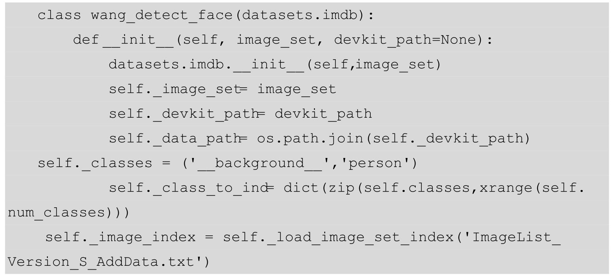
程序3是factory.py修改后的代码，如下所示。
程序 3：factory.py
此外，将wang_detect_face.py、factory.py、imdb.py和init.py头文件中的from.pascal_voc import pascal_voc修改为from.wang_detect_face import wang_detect_face。
读者可以按照参考文献[8]修改这些文件。
4.修改网络
在FRCNN/data下的fast_rcnn_models文件夹和imagenet_model文件夹内，分别有3个网络，表5-1所示为每个网络模型对应的类型。
表5-1 网络模型的介绍

本实验使用的网络模型是imagenet_models文件夹中的VGG_CNN_M_1024.v2.caffemodel。在选择好预训练模型后，还需要对网络中的参数进行修改。打开FRCNN/models/VGG_CNN_M_1024/train.prototxt，进行如下修改。
首先，将data层的num_classes 21修改为2（原来是20类+背景，本实验为人脸+背景，即2类）。
其次，将cls_score层的num_output 21修改为2。
最后，将bbox_pred层的num_output 84 修改为8（类别数乘以4）。
5.运行训练命令
通过前面几个步骤，已经完成了数据的处理、程序的调整和训练网络参数的修改。接下来，使用如下命令训练人脸检测模型。
训练结果模型保存在FRCNN/output/default下。
5.7.2 测试阶段
在进行测试前，首先需要修改测试网络和测试程序。
1.修改测试网络
将FRCNN/models/VGG_CNN_M_1024/test.prototxt文件中cls_score层的num_output 21修改为2，bbox_pred层的num_output 84修改为8。
2.修改测试程序
本书使用MATLAB测试程序，需要修改 FRCNN/matlab/fast_rcnn_demo.m文件，修改后的文件如程序4所示。
程序 4：fast_rcnn_demo.m
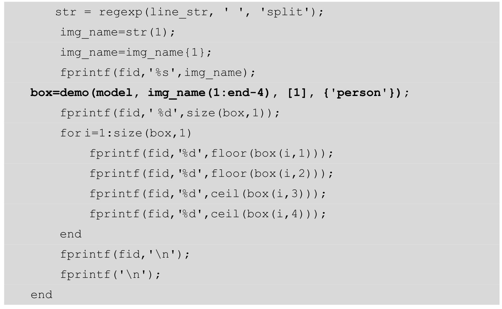
3.运行测试程序
修改完成后，将待测试的图片路径和名称放在FRCNN/DataSet/test.txt内，并且每张图片的同级目录下，需要存放对应的OP矩阵，以_boxes.mat为后缀。
最后，执行如下命令：
运行完成后，检测结果会保存在detect_result.txt文件中，如下是本实验的运行结果文件。图5-2所示是一些测试图片的检测结果。
运行结果文件：detect_result.txt
图5-2 一些测试图片的检测结果
5.7.3 评估阶段
在测试完成后，需要对测试数据集进行评估。本书使用的评估方法和通常的评估方法一致，即若检测框和真实边界框的面积交集/面积并集 0.5，则认为该检测框检测到的为人脸区域。程序5是本书的评估程序。
程序 5：eval_result.m
按照程序5评估后，可得到如表5-2所示的结果。
表5-2 检测结果
5.7.4 优化阶段
由表5-2可知，本次训练出的人脸检测模型的正确率只有86.4%。为了获得更优的人脸检测模型，需要调整models\VGG_CNN_M_1024\solver.prototxt文件中的参数，主要调整base_lr和stepsize。
网络参数文件：solver.prototxt
参考文献
[1] Girshick R. Fast R-CNN[C]//Proceedings of the IEEE International Conference on Computer Vision, 2015: 1440-1448.
[2] Girshick R, Donahue J, Darrell T, et al. Rich feature hierarchies for accurate object detection and semantic segmentation[C]//Proceedings of the IEEE conference on computer vision and pattern recognition, 2014: 580-587.
[3] He K, Zhang X, Ren S, et al. Spatial pyramid pooling in deep convolutional networks for visual recognition[C]//European Conference on Computer Vision.Springer International Publishing, 2014: 346-361.
[4] PASCAL VOC. http://host.robots.ox.ac.uk/pascal/VOC/.
[5] Theeuwes J. Stimulus-driven capture and attentional set: selective search for color and visual abrupt onsets[J]. Journal of Experimental Psychology: Human perception and performance, 1994, 20(4): 799.
[6] Caffe. http://caffe.berkeleyvision.org/.
[7] Dollár P, Zitnick C L. Structured forests for fast edge detection[C]//Proceedings of the IEEE International Conference on Computer Vision, 2013: 1841-1848.
[8] http://www.cnblogs.com/louyihang-loves-baiyan/p/4903231.html.
[1] mAP，即mean Average Precision（平均准确率），是评价信息检索系统性能的常用指标。
第6章 人脸识别实战
图像和视频处理、深度学习及智能感知设备在当今的智能社会中扮演着核心角色。在智能识别、商品自动分类、无人驾驶汽车、语音识别、刷脸支付、行为识别等应用/研究课题中，图像和视频处理、深度学习技术是需要解决的关键问题。最近几年，很多公司都在预研发以人为中心的视频分析系统。例如，一些公司正在研发针对大型商场的顾客识别与行为分析系统，通过识别、关联某个顾客的购买记录，并通过视频分析识别顾客光临商场的频度、其本次关注商品的种类（如上衣、裤子或皮鞋、运动鞋），可以帮助各专卖店及时识别、抓住重点客户，以增加销售额。人脸识别的另一个重要应用是刷脸支付。上述的两种应用中，都需要高准确度地识别人脸。近年来，人脸识别（主要是正脸识别）技术越来越成熟，已经从学术界应用到工业界，与人们的日常生活也越来越紧密。但由于人群、场景、姿态、光照等各种条件的影响，人脸识别仍然需要更多、更全面、更深入的研究。目前的人脸识别产品，如刷脸考勤机、刷脸验票，都要求采集正脸照片。事实上，基本上所有人脸识别的商业应用，都要求输入正脸照片。而对于侧脸、多角度人脸的识别，学术上也有了一定的研究，但商业化的产品还很少。总之，人脸识别仍然是一个尚未解决的、有挑战的，需要全面、深入研究的课题。本章将详细介绍5种人脸识别相关技术。其中6.1节和6.2节讲述最新的、基于深度学习的人脸识别技术，6.3节介绍OpenCV中实现的3种传统的人脸识别技术，6.4节对5种人脸识别技术进行实验对比分析。
6.1 DeepID算法[1]
DeepID算法[1] 是基于深度卷积神经网络的人脸识别算法，该算法由Y.Sun等人在2014年提出。在LFW数据集上，DeepID算法具有99%的识别准确度。在本书中，由于CelebFaces和CelebFaces+数据库并未公开，所以我们在CASIAWebFace[2] 数据库上进行训练，在LFW[3] 数据集上进行实验验证。LFW数据集包含10 575个人，共有494 414张图片，该数据集中每人均有多张图片。本文只基于Caffe 深度学习平台[4] 实现了其中一个DeepID深度神经网络，并用于提取人脸的特征。然后，通过计算LFW数据集上6000对图片特征向量的夹角余弦距离，进行人脸识别的验证，即计算每对人脸（深度特征之间）的夹角余弦距离，并求解最优的夹角余弦距离阈值。
Caffe平台的安装请参考如下文献：http://caffe.berkeleyvision.org/installation.html和http://blog.csdn.net/wangpengfei163/article/details/50488079。
6.1.1 DeepID算法的原理
本书实现的DeepID算法流程如下。
（1）首先使用Y.Sun等人[5] 提出的面部检测软件，检测出所使用的数据集中每张图片中的人脸边框信息，根据人脸边框信息检测面部关键点，包括2个眼部中点、鼻尖和2个嘴角，共5个面部关键点。根据这5个关键点首先产生10个切片（包括5个全局区域和5个以关键点为中心的局部区域），如图6-1（上）所示。每张切片有3种尺寸，如图6-1（下）所示。其又分为灰度图和RGB图两种，因此每张检测出来的人脸被处理成了对应的60个切片。
图6-1 人脸切片（上部：左边五个为全局区域，右边五个为以检测到的五个关键点产生的局部区域；下部：其中两个切片的三个不同的尺寸）
分别对这60种切片（共60种切片，数据集中每个图像上得到的60个切片，分别放到这60种切片中）训练深度模型，共训练得到60个深度网络结构模型（每种切片对应一种深度模型）。然后，对每个图像的60个切片，就可以分别使用这60个深度模型对对应切片提取深度特征了。这样，每个切片上可以得到一个160维的特征（DeepID特征向量）。接着，对每个切片进行水平翻转，然后使用相同的深度模型提取特征。最后，每张人脸图片对应的总的DeepID特征向量维度为19 200（160×2×60）。
（2）LFW数据集包含了5749个人，只有85个人的图片超过了15张，4069个人只有一张图片。可以看出，LFW数据集并不适合训练模型（因为在5749个人中，只有1680个人有两张及以上的图片，故不适合训练机器学习模型）。于是本书采用了CelebFaces数据库，随机选取人数的80%（4349个人）来训练DeepID模型，剩余的20%用于训练人脸验证模型。在深度特征学习的过程中，使用了切片和该切片对应的水平翻转切片，随机选择每个人10%的图片来作为训练DeepID模型的验证数据。
（3）为了验证论文中的算法和评估结果，选择使用了扩展数据库CelebFaces+，该数据库包含10 177个人，共有202 599张图片。随机选取8700个人训练DeepID模型，剩下的1477个人用来训练联合贝叶斯模型做人脸验证。通过使用5种不同的尺寸，将每个图像的切片数量提高到100个，每个图像的特征向量维度提高到32 000，然后使用PCA将其降维到150维。实验结果表明，本书设计的方法在LFW数据集中实现了97.20%的准确率（对LFW数据集中的6000对图片，分别计算每对人脸图像的特征向量的夹角余弦距离，来进行人脸识别的验证）。考虑到数据分布的影响，最终选择使用一种迁移学习算法和10折交叉验证，在LFW数据集中实现了97.45%的准确率。
6.1.2 DeepID算法的流程
整体操作步骤如下。
（1）运行源码中process_data/Face_Detect_Master文件夹下的process_data_master.m文件剪切图片。
（2）运行源码中preprocess_data/Face_Detect_Master文件夹下的split_data.m文件，将数据划分成训练集和验证集。
（3）运行源码中extract_feature\deepID_webFace\model文件夹下的run_deep IDnet.sh文件，最终会得到后缀名为.caffemodel的模型文件。
（4）在源码中extract_feature文件夹下，getDeepID.m文件可以实现对指定文件列表中的所有图片进行提取深度特征，classify.m可以利用提取到的深度特征和夹角余弦距离进行人脸验证。
DeepID算法的具体实现细节如下。
1.数据预处理
这部分主要是进行数据预处理，代码保存在源码文件夹 code/preprocess_data 下。
（1）我们首先使用Y.Sun等人[5] 提出的面部检测方法，检测出所使用的数据库中每张图片中包含的人脸边框信息，如图6-2所示。
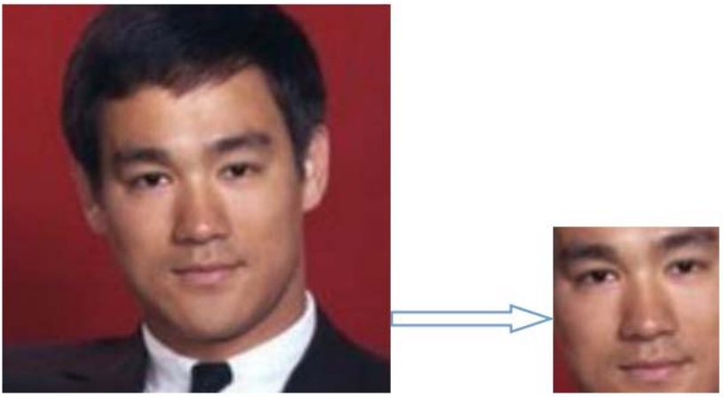
图6-2 原始图片和裁剪出的面部区域
运行所提供的源码文件process_data/Face_Detect_Master工具，在process_data_master.m文件中指定原始图片路径、剪切后图片保存路径和图片剪切后尺寸。运行process_data_master.m文件，process_data/Face_Detect_Master/Output文件夹中会生成检测到的图片边框和关键点信息的文件，会在指定的剪切路径下生成对应剪切尺寸的图片。process_data_master.m文件内容如下：
（2）运行源码中preprocess_data/Face_Detect_Master文件夹下的split_data.m文件，随机选取图片数的10%作为验证集，剩余图片作为训练集，需要指定图片数据的路径，生成训练集文件train.txt和测试集文件test.txt，文件中每行包含对应的图片路径和标签。split_data.m文件内容如下：
2.深度网络结构
我们使用DeepID网络结构[1] ，主要包括4个卷积层、3个下采样层（Pooling层）和2个全连接层、1个线性修正单元（ReLU层）及标记所属类别的输出层。网络最后一个全连接层的输出需要设置为类别数，输入图片尺寸：长方形切片尺寸为39×31×k，正方形切片尺寸为31×31×k，其中k=3表示为彩色图像，k=1表示为灰度图像。输出为属于每个类别的概率值。我们选择网络结构中的倒数第二个全连接层作为要提取的深度特征层（DeepID层，维度为160），由于该层后跟有线性修正单元（ReLU层），所以提取出的深度特征向量都是非负值。使用的网络结构如图6-3所示。
图6-3 DeepID网络结构[1]
DeepID网络结构说明：该网络结构包括4个卷积层、3个下采样层和2个全连接层。每一个立方体的维度分别表示输入层、卷积层、下采样层的长度、宽度和高度。内部的小正方形表示卷积核的尺寸。DeepID层连接了第四个卷积层和第三个下采样层，实现了整体特征和局部特征的结合，称为多尺度网络结构。
我们使用的图片尺寸为48×48，训练模型所需源码在extract_feature/deep ID_webFace/model文件夹下，所包含的文件如图6-4所示。
图6-4 训练深度学习模型需要使用的文件夹下的文件列表
train_val.prototxt文件定义了DeepID网络结构、训练集和验证集，solver.prototxt文件定义了训练网络所需的网络参数，deploy.prototxt用于提取深度特征。
在安装有Caffe环境的Ubuntu系统中，运行run_deepIDnet.sh文件，最终会得到后缀名为.caffemodel的模型文件。run_deepIDnet.sh文件内容如下：
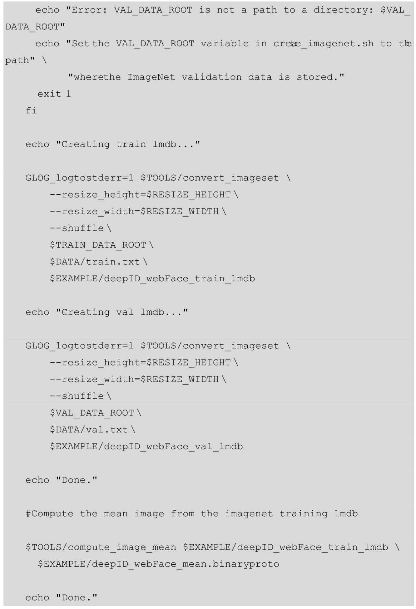
说明：源码中涉及的路径问题，请更改为读者自己的对应路径。
3.提取深度特征与人脸验证
上文已经提到，本实验进行人脸验证时，对LFW数据集中的6000对图片，分别计算每对人脸图像的特征向量的夹角余弦距离，根据该距离的大小判断两个图像是否是同一个人。
本实验选择图6-3 中的DeepID网络结构中的倒数第二个全连接层作为要提取的深度特征层。在本实验中，对LFW数据集中的每张图片，我们只使用了一个切片（人脸区域），因此每张图片上最后得到的特征向量维度为160。
我们穷举不同的阈值，分别获得对应的准确率。最后采用最高准确率对应的阈值，作为本实验的最终结果。
该部分对应的代码包含在源码中extract_feature文件夹下，getDeepID.m文件可以实现对指定文件列表中的所有图片进行提取深度特征，classify.m可以利用提取到的深度特征和夹角余弦距离进行人脸验证。
getDeepID.m文件内容如下：
classify.m文件内容如下：
6.1.3 DeepID算法的结果
本部分介绍我们的实验结果。我们在CASIA-WebFace数据库中训练DeepID模型，进行特征学习；在LFW数据集中进行实验验证。由于CASIA-WebFace数据库中每人对应的图片并不相等，因此在该数据库中获得的数据是不均衡的，而且存在图片错误归类的情况，会对实验结果造成一定的影响。
1.人脸识别数据
（1）我们在CASIA-WebFace数据库上训练DeepID模型，进行特征学习。该数据库包含10 575个人，共有494 414张图片，每人均有多张图片。图6-5所示为 CASIA-WebFace数据库中的一些样例图片。
图6-5 CASIA-WebFace数据库中的一些样例图片
（2）我们主要在LFW数据集上进行人脸验证，该数据集中一共有5749个人，但4069个人只有一张对应的图片，而只有85个人的图片多于15张。图6-6所示为LFW数据集中的一些样例图片。
图6-6 LFW数据集中的一些样例图片
2.实验细节
在实验中，数据预处理方法使用6.1.1节中介绍的方法，生成每个原始图片样本对应的1个切片图。使用6.1.2节中介绍的方法提取深度特征，获得每个原始图片样本对应的160维的特征向量。
通过数据预处理得到数据集，我们随机选取每个人10%的图片作为训练DeepID模型的验证数据，然后使用训练得到的模型提取LFW数据集中6000对数据的深度特征，计算6000对特征向量的夹角余弦距离。通过穷举不同的阈值，得到不同的准确率，我们选择最高准确率作为最终的验证准确率。最终准确率为0.823 167。得到的准确率并不高，主要原因如下：
（1）CASIA-WebFace数据库中每人对应的图片并不相等，因此在该数据库中获得的数据是不均衡的，而且存在图片错误归类的情况，会对实验结果造成一定的影响。
（2）该实验中没有使用一些数据增强的方法（增加切片数目的方法）。有兴趣的读者，可以尝试筛选CASIA-WebFace数据库，去除错误标记的图片和使用一些数据增强技术（增加切片数目的方法，如每个图像产生60×2个切片）来提高最终验证准确率。
我们尝试了不同的参数组合，如逐渐减小学习率、调整批处理大小、测试不同的迭代次数，最终选择较好的参数组合来调优深度学习模型，用于提取深度特征向量。
6.2 VGG Face Descriptor算法
VGG Face Descriptor算法[6] 基于卷积神经网络，其源代码链接为http://www.robots.ox.ac.uk/~vgg/software/vgg_face/，本书直接使用作者提供的训练模型提取图片特征。特征提取的网络结构保存在VGG_FACE_16_deploy.prototxt文件中。该算法使用论文中提供的数据集作为训练特征模型的数据集，在LFW和YFW[7]
（Youtube Faces in the Wild）两个数据集上验证最终准确率。
6.2.1 VGG Face Descriptor算法的原理
实现VGG Face Descriptor算法的步骤[6] 如下。
（1）数据预处理：①首先使用文献[8]中的软件/方法对图像数据集（包括训练图像集、验证图像集、测试图像集三部分）中的每张图像进行人脸检测；②将检测到的每张人脸图像缩放到227×227像素；③计算训练图像集的像素均值，将训练图像集和验证图像集的每张图像的所有像素值同时减去该均值；④在使用训练图像集、验证图像集训练深度特征模型之前，以224×224像素的尺寸随机剪切（Crop）训练图像集中的每张图片；⑤随机选取训练图像集中50%的图片进行水平翻转。
（2）设置深度学习的网络结构参数：网络中权重初始化为均值为0，标准差为0.01，权重衰减设置为0.0005，学习率设置为0.01；然后以10的倍数减小学习率以训练模型。最终，选择在验证图像集上预测损失（Loss）最低的一组网络结构参数，作为深度学习模型的最终参数。
（3）特征提取：①对于测试图像集中的每张图像，以224×224像素的尺寸，分别从该图像的中心和四个边角进行图像剪切，并对这些切片进行水平翻转，最终每张图像可以得到10个224×224像素尺寸的切片；②使用（2）中最终训练得到的深度特征模型，对该图像的10个切片分别提取特征（每个切片能得到4096维的特征向量）；③对这10个切片上的4096维的特征向量求均值，就得到了该图像对应的4096维的特征向量；④为了实现多尺度提取特征，可以首先将图片缩放到256×256像素、384×384像素和512×512像素三个尺寸，对这三个尺寸的图像分别按照①、②、③中的步骤提取到4096维的特征向量，最后得到3个4096维的特征向量，再对这3个4096维的特征向量求均值，作为该图像最终的特征向量，维度为4096。
（4）人脸验证：提取LFW数据集中每对人脸的深度特征向量，使用欧氏距离进行人脸验证。
6.2.2 VGG Face Descriptor算法的实现
文献[6]的作者公开了VGG Face Descriptor的源代码，网址为http://www.robots.ox.ac.uk/~vgg/software/vgg_face/。源代码中包括特征提取的配置文件VGG_FACE_16_deploy.prototxt、文献[6]中训练得到的深度学习模型VGG_FACE.caffemodel、示例图片ak.jpg和运行示例文件matcaffe_demo_vgg_face.m，该文件用于对测试数据集中的图像进行分类。
修改、运行matcaffe_demo_vgg_face.m文件，假设要测试ak.jpg（对应人名为Aamir_Khan）图像对应的人的标签，运行该文件后即可预测该图像对应的人的标签。该示例ak.jpg的预测结果为3，从源码中提供的name.txt文件中找到第3行名称是Aamir_Khan，则可知该预测是正确的。
matcaffe_demo_vgg_face.m文件由文献[6]提供，其主要内容如下：
如果仅仅要提取该图像的深度特征（而不需要预测该图像的标签），则只需要去掉VGG_FACE_16_deploy.prototxt文件中输出为2622的全连接层，即可提取到输入图片img的4096维的特征向量。
去掉VGG_FACE_16_deploy.prototxt文件中输出为2622的全连接层之后，再修改matcaffe_demo_vgg_face.m文件，去掉它的最后一行，即可得到一个4096维的特征向量。
需要强调的是，如果保留文件VGG_FACE_16_deploy.prototxt中输出为2622的全连接层，如在上面的代码示例中，scores = caffe(‘forward’,
{img})得到的是该图像属于各类（标签）的概率；而去掉文件VGG_FACE_16_deploy.prototxt中输出为2622的全连接层之后，如下面的代码所示，scores = caffe(‘forward’, {img})得到的就是该图像的深度特征向量。
6.2.3 VGG Face Descriptor算法的结果
不同人脸识别算法在LFW数据集上的测试结果对比如表6-1所示，对应的ROC曲线如图6-7所示。
表6-1 不同人脸识别算法在LFW数据集上的测试结果
图6-7 在LFW数据集上测试的结果[11]
可以看出，VGG Face Descriptor算法表现出了较高的性能。其中DeepID3算法获得了最高的准确率，但主要是由于该方法对错误标记的测试集进行了纠正，而其他方法并没有做这项工作。
注：（1）6.1节中使用文献[1]中的网络结构和CASIA-WebFace数据库，从初始化参数开始训练，训练得到本书中用来提取深度特征的模型。
（2）6.2节中作者公开了使用自己的数据集训练得到的模型，本书只讲解了如何使用作者提供的模型提取深度特征，进而进行人脸验证。
6.3 OpenCV中的3种人脸识别算法
OpenCV从2.4版本开始支持人脸识别功能，本书所用的版本是2.6.10，Python版本为3.4。OpenCV主要提供3种人脸识别算法，分别是Eigenfaces[12] 、Fisherfaces[13] 、Local Binary Patterns Histograms[14]
（LBP，局部二值模式直方图）。Eigenfaces和Fisherfaces都是整体特征，而LBP则是局部特征，可以降低特征向量维度。OpenCV人脸识别的官方参考文档链接为：http://docs.opencv.org/2.6.10/modules/contrib/doc/facerec/facerec_tutorial.html。
6.3.1 Eigenfaces
1.算法原理
假设一张图片的尺寸为m×n像素，那么该图片对应一个长度为m×n的特征向量。所以，一张200×200像素的图片就对应了一个长度为40 000维的特征向量。但并不是这40 000个特征都对我们识别图像有帮助，我们想要的是最能代表图片信息的主要特征向量（40 000维中的一部分维）。主成分分析（Principal Component Analysis，PCA）由Karl Pearson（1901）和Harold Hotelling（1933）提出，它将一系列相关的属性（维）转换成更小的不相关属性集合（来源：OpenCV人脸识别的官方参考文档）。一个高维度的数据中，通常只有一部分维度代表有用的信息，而PCA就能发现高维数据中的主成分（主要属性）。PCA算法原理如下：
（1）计算数据集平均值。
（2）根据数据集平均值计算该数据集的协方差。
（3）求出协方差的特征向量和对应的特征值。
（4）根据特征值降序排列特征向量，前k个主成分就是k个最大的特征值对应的特征向量。
2.算法流程
整体操作步骤如下（来源：OpenCV人脸识别的官方参考文档）。
（1）运行源码opencv_fr\process_data文件夹下的create_csv.py文件，将图片路径和标签信息保存到at.csv文件中。
（2）编译源码文件夹opencv_fr下的facerec_eigenfaces.cpp文件，生成可执行文件。
具体步骤如下。
1）数据预处理
（1）使用AT&T Facedatabase[15] 数据库，该数据库包含40个人，每个人有10张图片，其中某些人的图片在不同时间采集，有微弱的光照变化和面部表情变化。
（2）运行源代码opencv_fr\process_data文件夹下的create_csv.py文件，将图片路径和标签信息保存到at.csv文件中。在使用之前，读者需要修改自己的图片路径。
命令形式：
create_csv.py [图片数据所在路径，需要指定到该路径下包含s*的文件夹]
OpenCV提供的create_csv.py文件内容如下：
2）分类识别
（1）编译源码文件夹opencv_fr下的facerec_eigenfaces.cpp文件，生成的可执行文件命名为FaceRec_EigenFaces.exe。
（2）使用FaceRec_EigenFaces.exe命令：
FaceRec_EigenFaces.exe [图片列表文件] [输出图片的保存路径，可选]
例：
facerec_eigenfaces.cpp文件是OpenCV官方网站提供的源程序，其内容如下：
3.算法结果
经测试，该算法能正确预测测试图片的标签。
输出为：测试图片的预测标签，前10个特征向量对应的特征值如下所示。
使用了JET模式色图的10个Eigenfaces如图6-8所示，从这些图中我们可以看出，Eigenfaces不仅对面部特征进行了编码，而且对图片中的光照也进行了编码（第四张图中的右侧光，第五张图中的左侧光）。
图6-8 使用了JET模式色图的10个Eigenfaces
使用特征向量重新构建的人脸图像如图6-9所示。重新构建一个较好的人脸图像需要多个特征向量，从图6-9中可以看出，10个特征向量不足以重新构建人脸图像。50个特征向量可能足够重新构建人脸图像，对于AT&T Facedatabase来说，300个特征向量可以重新构建一个较好的人脸图像（来源：OpenCV人脸识别的官方参考文档）。
图6-9 使用特征向量重新构建的人脸图像
6.3.2 Fisherfaces
1.算法原理
Eigenfaces主要基于PCA实现，但是仍有一些不足，因为该PCA是无监督的，没有考虑类间变化，如输入数据的主要变化是光照，经过PCA处理后，该数据不再具有可区分信息（来源：OpenCV人脸识别的官方参考文档）。
线性鉴别分析[16] （Linear Discriminant Analysis，LDA）主要是处理特定类的降维，最大化类间的离散度、最小化类内的离散度。Fisherfaces主要基于LDA实现。
2.算法流程
整体操作步骤如下。
（1）运行源码opencv_fr\process_data文件夹下的create_csv.py文件，将图片路径和标签信息保存到at.csv文件中。
（2）编译源码文件夹opencv_fr下的facerec_fisherfaces.cpp文件，生成可执行文件。
具体步骤如下。
1）数据预处理
同6.3.1节。
2）分类识别
编译源码文件夹opencv_fr下的facerec_fisherfaces.cpp文件，生成FaceRec_FisherFaces.exe可执行文件。
FaceRec_FisherFaces.exe命令：
FaceRec_FisherFaces.exe [图片列表文件] [输出图片的保存路径，可选]
例：
facerec_fisherfaces.cpp文件是OpenCV官方网站提供的源程序，其内容如下：
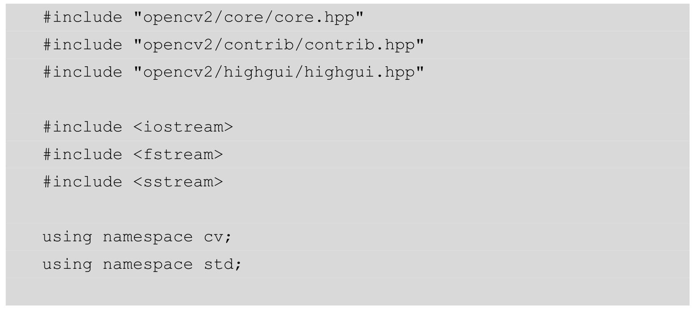
3.算法结果
经测试，本算法能正确预测测试图片的标签。
输出为：测试图片的预测标签，此处只输出了前16个类别的特征值，如下所示。
输出16个类的Fisherface如图6-10所示，输出16个类的Fisherface重新构建后的图像如图6-11所示。
图6-10 16个类的Fisherface
图6-11 16个类的Fisherface重新构建后的图像
6.3.3 Local Binary Patterns Histograms
1.算法原理
Eigenfaces和Fisherfaces考虑的是整体特征，Eigenfaces最大化整体离散度，由于数据内部变化可能会导致分类识别，如光照变化等；为了保留类间可区分信息，于是就有了基于LDA实现的Fisherfaces，在特定场景下，它优于Eigenfaces。
Local Binary Patterns Histograms的主要思想是：通过比较图片中像素和与它相邻的像素对局部进行求和。取一个像素作为中心，对相邻的像素进行比较，如果中心像素的值大于或等于相邻像素的值，则把该相邻像素标为1，否则标为0。对于图片中的每个像素，会得到一个二进制序列，如00001111。一个中心像素周围的8个像素，可以得到28 种组合，这种方法称为LBP或LBP编码。
为了具有尺度不变性，使用一个给定半径的圆来定义近邻，这种方法称为扩展LBP。
2.算法流程
整体操作步骤如下。
（1）运行源码opencv_fr\process_data文件夹下的create_csv.py文件，将图片路径和标签信息保存到at.csv文件中。
（2）编译源码文件夹opencv_fr下的facerec_lbph.cpp文件，生成可执行文件。
具体步骤如下。
1）数据预处理
同6.3.1节。
2）分类识别
编译源码文件夹opencv_fr下的facerec_lbph.cpp文件，假设生成FaceRec_LBPH.exe可执行文件。
FaceRec_LBPH.exe命令：
FaceRec_LBPH.exe [图片列表文件] [输出图片的保存路径，可选]
例：
FaceRec_LBPH.exe F:\paper\book\code\opencv_fr\process_data\at. csv
facerec_lbph.cpp文件是OpenCV官方网站提供的源程序，其内容如下：
3.算法结果
经测试，该算法能正确预测测试图片中的标签。
输出为：测试图片的预测标签，模型信息如下所示。
6.4 人脸识别算法对比分析
本节主要对6.1、6.2、6.3节中涉及的5种人脸识别算法在公开数据集上进行对比分析。
表6-2展示了DeepID算法和VGG Face Descriptor算法在LFW数据集上，针对 6000 对人脸图像的测试结果。可以看到，DeepID 算法优于 VGG Face Descriptor算法。而在LFW数据集上，Eigenfaces算法只能达到60%的识别准确度。
表6-2 DeepID算法和VGG Face Descriptor算法在LFW数据集上的测试结果

在表6-3中，我们使用6.3节中OpenCV提供的3种人脸识别算法在AT&T Facedatabase数据库上进行测试，随机选取每个人图片数的20%作为测试集，剩余的作为训练集。
表6-3 OpenCV提供的3种人脸识别算法在AT&T Facedatabase数据库上的测试结果
从表6-3中可以看出，Eigenfaces、Fisherfaces和Local Binary Patterns Histograms在AT&T Facedatabase数据库上都表现出了较高的准确率，其中Eigenfaces获得了最佳的准确度。
6.5 小结
人脸识别包括三个基本步骤，具体如下。
第一个步骤是从图像中检测人脸边框，所用的是人脸检测技术。而人脸检测技术有多种，可以是基于肤色的，也可以是基于人脸特征点（如眼睛）的方法，等等。这一部分内容在本书第3章和第4章已经给出。
人脸识别的第二个步骤是人脸区域的特征提取。根据算法原理和关注点的不同，人脸的特征可以有很多种。深度学习特征是一种特征；还有Gabor、SIFT、HOG等多种特征提取方法（将在后续章节中讲述），用于提取人脸的特征；通过PCA、LDA等特征降维的方法得到的特征，也可以作为人脸的特征；人脸面部的特征点信息，可以选取5个面部特征点（双眼中心、鼻子、两个嘴角），或20个特征点（包括眉梢、鼻端、下巴、双眼中心、鼻子、两个嘴角等信息），或30个乃至更多的特征点，每个特征点的位置和像素信息都可以用于表征人脸的特征。学术界已有人脸特征点自动定位算法。另外，人脸的轮廓也是一种重要特征。人脸特征提取的方法，以及最后所使用的特征，对人脸识别的准确度具有关键作用。
人脸识别的第三个步骤是训练识别人脸特征与人的标签对应关系的分类模型。经过第二步，训练图像集中的每个图像都可以用一个特征向量来表示（如一个4096维的特征向量），最后再加上该图像的标签（表示是哪个人的人脸）。一个图像对应一行类似于上面所属的记录，如果有m个训练图像，就得到m行这样的记录矩阵。然后，在该矩阵上，使用SVM、KNN、Softmax Regression、Logistic Regression等方法训练分类模型。利用最后得到的模型，预测测试图像集中每个图像对应的人的标签。
在上述三个步骤中，第二个步骤是最为重要的，也是决定人脸识别准确度的关键。近年来，随着大数据、深度学习技术的发展，人们越来越多地使用深度学习来提取人脸特征。例如，本章6.1节和6.2节中的DeepID和VGG Face Descriptor人脸识别算法，都代表当今世界上最新的人脸识别技术。但这并不表明深度学习就可以完全替代其他特征提取方法。事实上，最新的研究表明，将深度特征与“传统”特征（如Gabor、LBP、HOG等）恰当地结合起来，可以取得更佳的识别准确度；而在一些应用中，不使用深度特征也许能取得更高的识别准确度。深度学习技术通常是以大数据为前提的，即需要海量的、有标注（标签）的数据，才能取得优于“传统”特征提取方法的识别准确度；对于小规模的数据集，使用深度学习技术得到的特征，未必能取得最高的识别准确度。作者认为，在实际应用中，人们迫切需要一个自动的“特征提取方法工厂”。该“工厂”中集成了所有重要、常见的特征提取方法，并结合具体的图像数据，自动验证、测试不同的特征提取方法，自动选择一种或多种特征提取方法的结合，以达到最佳的分类准确度。目前，尚没有类似自动的“特征提取方法工厂”。目前常见的做法是，人们基于手动测试，手动地尝试、验证若干种不同的特征提取方法或一些方法的结合。很明显，这一过程有相当的主观性和偶然因素，即并不能确保人们最后使用的一个或多个方法能取得最优的识别准确度。而自动的“特征提取方法工厂”面临的主要挑战之一是计算能力，例如，对于一个普通的图像数据集，如果使用深度学习方法，测试一组参数可能需要运行24小时甚至更长的时间。因此，进行大规模的测试以求解最优参数将耗费大量的计算和时间。在很多情况下，这是计算条件或时间不允许的。譬如，据本书作者了解，为了进行深度学习方面的研究和开发，通常需要不少于40块Nvidia Tesla K40的GPU集群，以减少深度学习调参所需的时间。而穷举地将深度学习方法与其他“传统”特征提取方法结合起来以寻找最适合给定图像集的、能取得最佳识别准确度的一个或多个特征提取方法，也将耗费更多的时间，可能是数周，甚至是数月的时间。尽管如此，本书所述的自动的“特征提取方法工厂”一定是未来人脸识别、图像处理研究和开发的重点发展方向。
参考文献
[1] Sun Y, Wang X, Tang X. Deep Learning Face Representation from Predicting 10,000 Classes[C]// 2014 IEEE Conference on Computer Vision and Pattern Recognition (CVPR). IEEE Computer Society, 2014:1891-1898.
[2] Dong Yi, Zhen Lei, Shengcai Liao, Stan Z. Li. Learning Face Representation from Scratch. arXiv preprint arXiv:1411.7923. 2014.
[3] Huang G B, Mattar M, Berg T, et al. Labeled Faces in the Wild: A Database for Studying Face Recognition in Unconstrained Environments[J]. Workshop on Faces in ‘Real-Life’ Images: Detection, Alignment, and Recognition, 2007.
[4] Y. Jia, E. Shelhamer, J. Donahue, S. Karayev, J. Long, R. Girshick, S.Guadarrama, T.Darrell. Caffe: Convolutional architecture for fast feature.
[5] Sun Y, Wang X, Tang X. Deep Convolutional Network Cascade for Facial Point Detection[C]// Computer Vision and Pattern Recognition (CVPR), 2013 IEEE Conference on. IEEE, 2013:3476-3483.
[6] O. M. Parkhi, A. Vedaldi, A. Zisserman. Deep Face Recognition British Machine Vision Conference, 2015.
[7] L. Wolf, Tal. Hassner, I. Maoz. Face recognition in unconstrained videos with matched background similarity. In Proc. CVPR, 2011.
[8] M. Mathias, R. Benenson, M. Pedersoli, L. Van Gool. Face detection without bells and whistles. In Proc. ECCV, 2014.
[9] Y. Sun, L. Ding, X. Wang, X. Tang. DeepID3: Face recognition with very deep neural networks. CoRR, abs/1502.00873, 2015.
[10] Y. Taigman, M. Yang, M. Ranzato, L. Wolf. DeepFace: Closing the gap to human-level performance in face verification. In Proc. CVPR, 2014.
[11] K. Simonyan, A. Vedaldi, A. Zisserman. Learning local feature descriptors using convex optimisation. IEEE PAMI, 2014.
[12] Matthew Turk, Alex Pentland. Eigenfaces for recognition. Journal of cognitive neuroscience, 3(1):71-86, 1991.
[13] Peter N. Belhumeur, João P Hespanha, David Kriegman. Eigenfaces vs.fisherfaces: Recognition using class specific linear projection. Pattern Analysis and Machine Intelligence, IEEE Transactions on, 19(7):711-720, 1997.
[14] Timo Ahonen, Abdenour Hadid, Matti Pietikäinen. Face recognition with local binary patterns. In Computer vision-eccv 2004, pages 469–481. Springer, 2004.
[15] Samaria F S, Harter A C. Parameterisation of a Stochastic Model for Human Face Identification[C]// Applications of Computer Vision, Proceedings of the Second IEEE Workshop on. IEEE, 1994:138-142.
[16] Fisher, R. A. The use of multiple measurements in taxonomic problems. Annals Eugen. 7 (1936), 179-188.
[1] 本节内容来自本书作者所著的《深度学习》一书，由电子工业出版社出版。
第7章 人脸检索实践
随着科技的飞速发展，数码相机、手机、数字摄像机等信息设备已经非常普及，这些设备产生的图像规模越来越大。而对这些图像的有效管理和高效检索成为一个亟须解决的问题。例如，在公安应用中，工作人员调出监控视频并检索犯罪嫌疑人相关的视频和活动轨迹。面对多个摄像头录制的监控视频，办案人员用眼睛逐个查看这些视频是目前的通用做法。然而，这将耗费大量的时间，因此迫切需要高效、自动检索犯罪嫌疑人相关视频片段的技术。因此，图像检索，尤其是人脸检索，是一个非常重要的研究领域。
7.1 人脸检索简介
图像检索，亦称以图搜图。输入一张图像，算法或程序高效、快速地返回图像库中与输入图像相似的图像。如果以一个向量来表示一张图像，在检索的过程中，需要依据这些向量做图像间（输入图像与图像库中的每张图像）的相似性检索/匹配。
对于人脸图像，其处理过程如下：第一步，检测每张图像中的人脸，即人脸检测；第二步，对每张图像中的人脸区域进行特征提取并用这些特征组成的向量表示该图像；第三步，对输入的查询图像（Query Image）做与第二步相同的处理；第四步，用第三步中得到的输入图像的人脸特征向量，与图像库中每一个人脸的特征向量进行相似性计算。最终，返回图像库中与输入图像相似的所有图像。
在第一步中，我们可以使用多种人脸检测算法，如 Viola&Jones人脸检测等算法，在本书第3章中已经讲述过这类算法。
在第二步和第三步中，可以使用SIFT、HOG（Histogram of Oriented Gradient）、Gabor、Deep Learning等多种不同的算法，也可以使用PCA降维、感知哈希（PHash）算法、DHash等算法。
在第四步中，主要使用两种算法，一种是向量之间直接比对的Naïve查询处理算法，另一种是基于KD-Tree结构的高效查询处理算法，尤其是FLANN（Fast Approximate Nearest Neighbor Search Library）中实现的KD-Tree算法/数据结构。
对于图像库中的每张图像，都需要经过第一步和第二步的处理。而对于用户查询的每张图像，都需要经过第三步和第四步的处理。也就是说，不管是图像库中的每张图像，还是输入的查询图像，都需要经过图像特征提取的步骤，这里需要使用上面提到的SIFT、HOG、Gabor、Deep Learning等算法。
特征提取和输入图像的查询处理算法，是相对独立的两个步骤。在本章中，PHash、DHash、PCA、SIFT、Gabor、HOG、Deep Learning都属于特征提取/降维的算法；而Naïve查询处理算法和KD-Tree查询处理算法是特征提取之后，进行查询处理的算法。
下面我们将分别介绍各种特征提取的算法及查询处理算法，每个算法都将分别介绍其使用、原理、算法实现、实验数据、实验结果及分析。
7.2 计算人脸相似度的方法
本章中，我们主要使用欧氏距离和余弦相似度的度量方法作为计算图像间相似性的依据。欧氏距离和余弦相似度的最大区别是：前者强调点的思想，后者注重线的思想。下面我们来详细了解一下它们的定义及公式。
7.2.1 欧氏距离
欧氏距离（Euclidean Distance）是一种常用的距离定义，指n维空间中两个点之间的实际距离，也就是说，我们将高维空间向量都视为一个高维空间上的点，用欧氏距离即可求得两点间的距离。文献[1]给出了n维空间中的欧氏距离公式。
n维欧氏空间是一个点集，它的每个点X或向量x可以表示为(x[1],x[2],…,x[n])，其中xi是实数，称为X的第i个坐标。
两个点A= (a[1],a[2],…,a[n]) 和B= (b[1],b[2],…,b[n])之间的距离ρ(A,B)定义为下面的公式：
向量x= (x[1],x[2],…,x[n]) 的自然长度|x|定义为下面的公式：
计算欧氏距离的代码如下：
7.2.2 余弦相似度
余弦相似度是利用求两个向量之间的余弦相似度来衡量两个向量之间的夹角。余弦相似值越接近1，夹角越小，它们的方向就越吻合，则认为它们越相似；反之，则越不相似。文献[2]给出了n维空间上的余弦相似度公式。
对于n维空间，设向量A = (A1 ,A2 ,…,An )，B = (B1 ,B2 ,…,Bn )。其中分子是两个向量的内积或称点积，分母是两个向量的欧几里得长度的乘积。
本章算法中我们计算余弦相似度的代码如下：
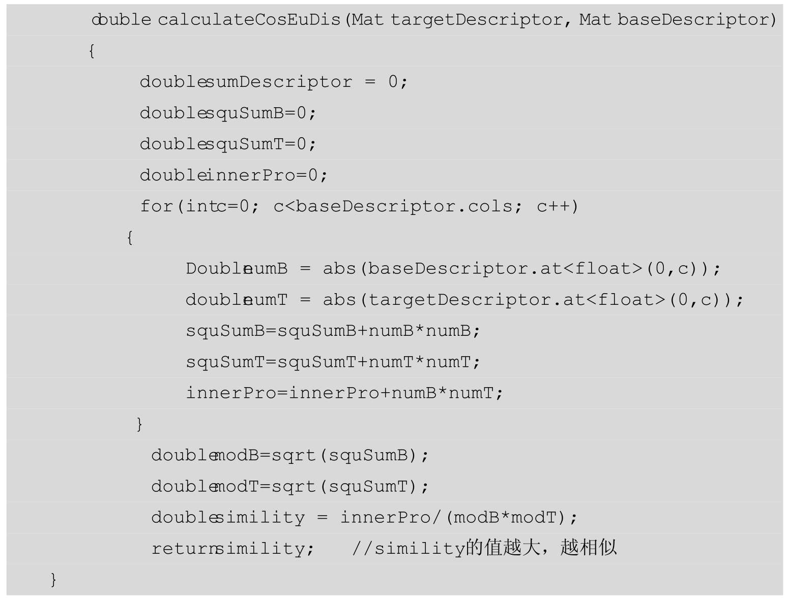
除欧氏距离和余弦相似度外，汉明距离（Hamming Distance）也是一种常用的计算两个向量之间相似度的方法。汉明距离的思想是，一一比较每个位（属性）上，两个向量的值是否相同，如果不相同，则汉明距离加 1。最后得到的汉明距离越小，表明两个向量之间的相似度越高。
7.3 查询处理算法
本章中我们主要使用两种查询处理算法，分别是Naïve和KD-Tree。
在Naïve查询处理算法中，分别计算查询图像的特征向量与图像库中的每张图像的特征向量之间的（欧氏距离或余弦）相似度。最后，返回图像库中与输入图像的特征最相似的若干张图像。
KD-Tree算法是对图像库中的每张图像的特征，建立一个KD-Tree结构，以实现对输入的查询点的快速查询处理。KD-Tree的相关原理将在本章7.9节中给出。
Naïve查询处理算法和KD-Tree查询处理算法的主要区别在于检索相似特征向量的运行时间。这两个查询处理算法与特征提取的步骤是独立的。给定用特征向量表征的图像（从图像中提取特征之后），运用Naïve查询处理算法和KD-Tree查询处理算法，都可以检索图像库中与查询图像最相似的那些图像。
7.4 评价人脸检索结果的标准
查准率和查全率主要用于信息检索领域，它们一般作为反映检索效果的重要指标。
查准率，亦称精度，衡量检索结果中噪声所占的比重。公式为：查准率=(检索出的相关信息量/检索出的信息总量)×100%。
查全率，亦称召回率，衡量检索结果中成功召回的比例。公式为：查全率=(检索出的相关信息量/系统中的相关信息总量)×100%。
误报（False Positive）个数，即返回的结果中，与查询图像无关的图像的个数。
7.5 PHash算法
PHash算法（Perceptual Hash algorithm），即感知哈希算法，计算基于低频的均值哈希。它对每一张图像生成一个指纹字符串，进而通过该字符串比较不同图片对应的指纹。若结果越接近，就说明图片相似度越高。可应用于以图搜图的应用中。下面是我们基于OpenCV实现的算法及相关分析。本算法思想见参考文献[3]。
7.5.1 PHash算法的使用
在Windows7环境下，使用Microsoft Visual Studio 2010开发环境，配置OpenCV2.4.9及以上版本。
该算法的项目文件名称是“phashProject.sln”，位于“..\phash”路径下。具体操作步骤如下。
（1）打开PHash→phashProject.sln，然后打开源文件phashproject.cpp。
（2）输入训练数据集路径和格式替换时可在主函数下面两行代码中修改：
（3）修改输入测试数据的路径时，应在以下代码中修改：
sprintf(model_fileName, “image150x200\\\S001-002.jpg”);
（4）输出数据在与项目phashproject.cpp文件同一路径下的hanmingdistance.txt文件中。
按照以上步骤提示执行phashproject.cpp文件即可。
7.5.2 PHash算法原理
Phash算法的基本原理是：首先将图片转换为灰度图，再将图片调整到32×32像素的尺寸并通过DCT变换，取左上角8×8像素的区域。然后，计算这64个像素的灰度平均值，将每个像素的灰度值与平均值进行比较，大于平均值的记为1，否则记为0，从而得到64位哈希值。
7.5.3 PHash算法实现
PHash算法的具体计算步骤如下。
（1）将输入图片转换成灰度图：
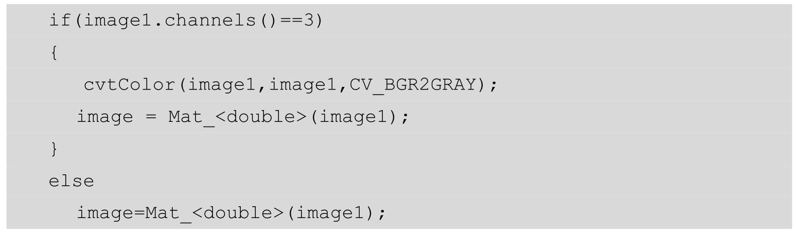
若是RGB彩色图像，则将其转换成灰度图像。
（2）缩小图片的尺寸为32×32像素：
这样做的目的是便于DCT变换，节省运行时间。
（3）DCT（Discrete Cosine Transform）变换：
dct(image, imageDct);//DCT变换
对于一般的图像而言，大多数DCT系数值都接近于0，因此去掉这些系数不会对重建图像的质量产生较大的影响。这样，利用DCT进行图像压缩可以节省大量的存储空间和运行时间。
（4）缩小DCT，保留左上角8×8像素的区域：
一般来说，变换后的DCT系数值较大的会集中在区域的左上部，即低频分量都集中在左上部。所以，我们只取左上角8×8像素的区域。
（5）计算8×8像素区域的平均值，进行像素值比较并求hash值：
计算最终DCT变换后的所有像素点（8×8）的平均值，并对每一个像素点遍历，若像素点大于平均值，则记为1；反之，则记为0。组合成64个信息位作为该图像的信息指纹，顺序保持一致性即可。
（6）指纹（hash值）匹配：
计算两幅图像哈希值之间的汉明距离（两个相同长度的哈希值之间的汉明距离）。显然，汉明距离越大，表示图片越不相似。
7.5.4 PHash算法的实验数据、实验结果及分析
1.实验数据
实验的输入图像集在项目路径下，若需要替换图像集，则可在主函数的前两行进行修改。其中，第一行表示图像的路径名，第二行表示图像的类型。
输入查询图像的路径：
2.实验结果
查询图像如图7-1所示。

图7-1 查询图像（1）
检索出的部分相似图像如图7-2所示。
图7-2 检索出的部分相似图像（1）
实验结果保存在与phashproject.cpp同一路径下的hanming-distance.txt和fileName.txt文件内。其中，fileName.txt表示图像集的图像名，hanming-distance.txt中每一行表示对应图像与查询图像的汉明距离。部分结果如表7-1所示。
表7-1 部分实验结果（1）
续表
续表
3.实验分析
相似图像的相似度（汉明距离）大多在小于等于5的范围内。本算法中我们设置的阈值为6，也就是说，凡是汉明距离小于6的，都被我们认为是相似图像，并输出“yes”作标记。本算法中查准率为40/48×100%=83.3%，查全率为40/42×100%=95.2%。
7.6 DHash算法
DHash（Difference Hash）算法基于渐变实现，它工作在相邻像素之间。首先需要将图像缩小到8×9（行×列）像素大小，再将图像进行灰度化。每行9个像素之间产生了8个不同的差异，一共8行，共产生64个差异值。若左边像素比右边像素更亮，则记为1，否则记为0。因此，我们就得到了图像对应的64位哈希值。本节内容将介绍DHash的算法实现和相关分析。
7.6.1 DHash算法的使用
在Windows7环境下使用Microsoft Visual Studio 2010编译环境，并配置OpenCV2.4.9及以上版本。
该算法对应的项目名称为“dhashProject.sln”，位于“..\dhash”目录下。
该算法的具体使用步骤如下：
（1）打开dhashProject文件夹，使用Visual Studio 2010打开dhashProject.sln。然后，打开项目下的源文件dhash.cpp。
（2）输入训练数据集路径和格式替换时可在主函数下面两行代码中修改：

（3）修改输入测试数据的路径时，应在以下代码中修改：
sprintf(model_fileName, “image150x200\\\S001-002.jpg”);
按照以上步骤提示执行即可。
7.6.2 DHash算法原理
DHash算法是基于图像相邻像素之间的渐变。第一步，将图像尺度归一化，本算法中我们将图像缩放至8×9（行×列）像素。当然，读者也可以根据自己的情况设定大小。第二步，将图像灰度化。第三步，计算图像的哈希值。如果左边的像素值比右边相邻的像素值高，则记为1；反之，则记为0。每行的9个像素产生8个差异值，一共8行，最后产生64个差异值。第四步，利用汉明距离进行相似性匹配。
其中，汉明距离是从一个哈希值到另一个哈希值需要替换（不相同）的位数。
7.6.3 DHash算法实现
下面介绍一下DHash算法实现的具体步骤。
1.缩小图像
resize(image1, image, Size(9,8));
缩小图像的尺寸为8×9（行×列）像素。
2.转化成灰度图
将第一步得到的图像转化成256阶的灰度图（此步骤已在读取图像时执行）。
3.计算哈希值
首先DHash算法是基于渐变的，因此它工作在相邻像素之间。如果左边的像素值比右边相邻的像素值高，则记为1；反之，则记为0。每行的9个像素产生8个差异值，一共8行，最后产生64个差异值。
4.指纹（ hash值）匹配
计算两张图像哈希值之间的汉明距离（从一个哈希值到另一个哈希值需要变几位，即不同的位数）。显然，汉明距离越大，表示图片越不相似。
7.6.4 DHash算法的实验数据、实验结果及分析
1.实验数据
实验的输入图像集在项目路径下，若我们想替换图像集，则在主函数的前两行进行修改。其中，第一行表示图像的路径名，第二行表示图像的类型。
输入的查询图像在.cpp文件主函数中的代码中：
2.实验结果
查询图像如图7-3所示。
图7-3 查询图像（2）
检索出的部分相似图像如图7-4所示。
图7-4 检索出的部分相似图像（2）
图像文件名在dhash.cpp同一路径下的fileName.txt文件中，图像集中每个图像与查询图像的汉明距离保存在dhash.cpp同一路径下的hanming-distance.txt文件中，其中fileName.txt和hanming-distance.txt文件中的每一行都一一对应。部分结果如表7-2所示。
表7-2 部分实验结果（2）
续表
续表
3.实验分析
算法中我们设置的汉明距离的阈值为3。所得到的实验结果，查全率为28/42×100%=67.7%，但是噪声极大，查准率很低。该算法更适用于图像集中是否存在完全相同的图像的查询（而非近似图像的查询）。
7.7 PCA算法
PCA（Principal Component Analysis）是一种常用的数据分析方法。它利用线性代数中的线性变换将原始图像变换成一组各维度线性无关的表示，可用于提取数据的主要特征分量，也适用于图像数据（高维数据）的降维。
在本节中，我们先将图像调整到合适的尺寸，然后再对所有图像进行PCA处理。这样就解决了图像间检索速度慢的问题。我们使用的PCA算法是非监督式的，它能很好地挑选代表所有样本的属性。下面我们来具体阐述PCA算法的使用与具体实现。
7.7.1 PCA算法的使用
使用Windows 7操作系统，以及CodeBlocks+OpenCV2.4.9的软件环境。
运行相关程序的步骤如下：
（1）使用CodeBlocks打开“PCA+Cosdistance”项目下的FaceResearch.cbp文件。
（2）打开Sources源文件中的main.cpp文件，修改图像集所属文件夹名称及图像的格式。代码如下所示：
imgData = readImg(“image30x40”,”jpg”); //读入所有训练集
（3）读入测试图像的完整路径。代码如下所示：
Mat singleImg = imread(filename,0); //读入测试图像
（4）运行Sources源文件中的main.cpp文件即可。
7.7.2 PCA算法原理
对于大量多维数据来说，变量之间相互关联，多重共线性会导致解空间的不稳定，从而导致结果的不连贯；多维度数据具有稀疏性，过多的变量会阻碍我们查找数据中的内在规律。因此，为了更好、更快地计算两个图像之间的差异，我们需要对原始图像进行PCA降维。其作用有三：（1）减少预测变量的个数；（2）确保这些变量之间是相互独立的，去除了噪声，发现数据中的模式，从而增加变量的代表性和变量间的区分度；（3）提供一个框架来解释结果[4] 。
PCA的算法思想如下[5]
：假设有m个实例，n维数据。第一步，将原始数据按列组成n行m列矩阵X；第二步，将X的每一行进行零均值化，也就是减去这一行的均值；第三步，求出协方差矩阵，以及其特征值及对应的特征向量；第四步，将特征向量按照对应特征值的大小从上到下按行排列成矩阵，取前k行组成矩阵p；第五步，y=pX即为降维到k维后的数据。PCA的实质就是在尽可能好地代表原来特征的情况下，将原来特征进行变换、映射至低纬度空间中。
降维的实现[6]
：PCA降维的目的就是“降噪”和“去冗余”。降噪的目的就是使保留下来的维度间的相关性尽可能小，也就是说让协方差矩阵中非对角线元素都基本为零。这一步在线性代数中称为矩阵对角化。对角化后的矩阵的对角线上是协方差矩阵的特征值，它有两层含义：第一层，它是各个维度上的新方差；第二层，它是各个维度本身应该拥有的能量。这就是我们为何一直将方差与能量等同的原因。而“去冗余”的目的就是使保留下来的维度含有的“能量”（方差）尽可能最大。首先我们需要知道，协方差矩阵度量的是维度与维度之间的关系，而非样本与样本之间。协方差矩阵的主对角线上的元素是各个维度上的方差（能量）。其他元素是两两维度间的协方差（相关性）。在除噪对角化后的协方差矩阵的对角线上较小的新方差对应的就是那些该舍掉的维度。因此，我们只取那些含有较大能量（特征值）的维度，其余的舍掉即可。PCA线性数学原理实质其实就是对角化协方差矩阵。
PCA的过程如下：
（1）特征中心化，即每一维的数据都减去该维的均值。这里的“维”指的就是一个特征（或属性），变换之后每一维的均值都变成了0。假如原始数据是一个矩阵A，我们将每一列减去该列均值后，得到矩阵B。
（2）计算矩阵B的协方差矩阵C。
（3）计算协方差矩阵C的特征值和特征向量。
（4）挑选出大的特征值对应的特征向量，得到新的数据集。
7.7.3 PCA算法实现
PCA算法的具体实现步骤如下。
1.前期处理
其中，readImg()函数如下：把灰度图像调整成大小为30×40像素的图像，并对图像进行reshape、pushback处理，存储到一个Mat变量里面。
2.在图像集上进行 PCA操作
构建PCA，其中第一个参数表示将矩阵形式表示的图像数据以行向量形式表示，如尺寸为30×40像素的图像，表示为1行×1200列。若有20张图像，此时的imgData就是一个20行×1200列的Mat。第三个参数CV_PCA_DATA_AS_ROW表示的是矩阵的每一行代表一个样本。第四个参数0.9表示选择构成90%的能量的特征值，调用OpenCV中PCA算法，将Mat imgData 投影到特征空间生成pcaFeature。上面已经提到，PCA降维的目的是去除噪声，发现数据中的模式；确保变量相互独立；提高运行速度。
3.输入测试图像
输入测试图像，展开成1行×1200列，存储于一个test-Mat 变量里，并将测试图像test-Mat也投影到特征空间（测试图像要经过上述两个步骤相同的处理）。
4.求余弦相似度
将两个图像的表示分别视为两个行向量，求这两个向量之间的内积（或称为点积）。它们之间的相似值在0和1之间浮动，1表示和测试图像相同，余弦相似值越大，表示两个图像的相似度越大。在本实验中，相似图像（和输入图像为同一个人的图像）的值大多都在0.90以上。
calculateCosEuDis()函数参考本章7.2节相关内容。
7.7.4 PCA算法的实验数据、实验结果及分析
1.实验数据
图像库中的图像为“..\PCA+Cosdistance\image30×40”路径下的所有（497张）图像。
输入的查询图像为“..\PCA+Cosdistance\image30×40”路径下的S001-001.jpg图像。
image30×40图像集的说明：以其中一张图像的名称为例，“s001-001.jpg”就代表第一个人的第一张图像，“s001-002.jpg”就表示第一个人的第二张图像。类似地，“s002-001.jpg”代表第二个人的第一张图像。
2.实验结果
以下是部分测试结果。
查询图像如图7-5所示。
图7-5 查询图像（3）
检索出的部分相似图像如图7-6所示。
图7-6 检索出的部分相似图像（3）
实验结果为“..\PCA+Cosdistance”路径下的similityPCAFeature.txt文件。其中每一行代表图像的序号和相似度。图像的顺序包含在“..\PCA+Cosdistance”路径下的FileName.txt文件。
表7-3所示是我们整理出来的部分实验结果。
表7-3 部分实验结果（3）
续表
续表
3.实验分析
本算法可用于相同或相似图像的查找。本算法中相似图像与查询图像之间的最小余弦相似度的阈值为0.89。查准率为43/46×100%=93.5%，查全率为43/43×100%=100%。
7.8 BoF特征
Scale Invariant Feature Transform（以下简称SIFT）算法由D.G.Lowe 1999年提出，2004年完善总结[7] 。SIFT算法是一种提取图像局部特征的算法，其对旋转、尺度、亮度变化保持不变性，对视角变化、仿射变换、噪声保持一定的稳定性。
Bag-of-Feature（以下简称BoF）Descriptor是用于数据分类流行的视觉描述符之一。BoF的灵感源于一个用来进行文档分类的Bag of Word（以下简称BoW）。在计算机视觉中，一个BoW代表词汇的出现次数的稀疏向量。也就是说，一个特征视觉上的BoW就相当于局部图像特征的出现次数的稀疏向量。
在使用BoF之前，需要做图像的分解。图像的分解被描述为：利用低级特征来描述图像，如颜色、形状和纹理特征。颜色直方图、形状轮廓、边缘直方图描述符都是很流行的基于图像内容检索的技术。为了获得一个BoF描述符，本节中我们使用SIFT算法对图像提取特征。SIFT算法是特征提取和描述中很受欢迎的算法之一。SIFT特征点很可能是图像中的一个角点、边缘点、暗区的亮点及亮区的暗点等。
下面是我们基于SIFT提取特征的BoF思想的算法[8] 。
7.8.1 BoF-SIFT算法的使用
在Windows 7环境下，使用Visual Studio 2010开发环境，配置OpenCV2.4.9。解决方案配置选择“release”，该算法对应的项目文件名称是“BoFSIFT.sln”，位于“..\BoF-SIFT\BoFSIFT”路径下。
使用Visual Studio 2010打开“..\BoFSIFT\BoFSIFT”路径下的BoFSIFT.sln文件，运行源文件中的BoFSIFT.cpp文件即可。
7.8.2 BoF-SIFT算法原理
首先我们了解一下SIFT算法的原理。SIFT是一种检测图像局部特征的算法，该算法通过在尺度空间寻找极值点，提取位置、尺度、旋转不变量，并求特征点的描述子，从而为相似性检索提供依据。
BoF主要分为两大步。第一步是得到BoF集合，可以得到特定特征包的集合，然后使用它们生成BoF描述符；第二步是对已给的特征聚集，然后将这些包视为一个直方图中的柱子（Bar），最后使用该直方图对图像进行分类。
7.8.3 BoF-SIFT算法实现
SIFT算法的步骤如下。
（1）构建尺度空间。
（2）检测DoG尺度空间极值点：为了寻找尺度空间的极值点，每一个采样点要与其所有的相邻点比较，看它是否比其图像域和尺度域的相邻点大或者小。中间的检测点和它同尺度的8个相邻点和上下相邻尺度对应的9×2个点（共26个点）比较，以确保在尺度空间和二维图像空间都检测到极值点。一个点如果在DoG尺度空间本层以及上下两层的26个领域中是最大或最小值，就认为该点是图像在该尺度下的一个特征点。
（3）除去不好的特征点：去掉DoG局部曲率不对称的像素。
（4）给每一个特征点赋值一个128维方向参数：上一步中确定了每张图像中的特征点，为每个特征点计算一个方向，依照此方向做下一步的计算，利用关键点邻域像素的梯度方向分布特性为每个特征点制定方向参数，使算子具备旋转不变性。其中每一个关键点有三个信息：位置、所处尺度、方向。梯度直方图的范围是0°～360°，其中每10°一个柱，共36个柱。距中心点越远的领域，其对直方图的贡献也相应越小。
在实际计算时，我们在以关键点为中心的邻域窗口内采样，并用直方图统计邻域像素的梯度方向。梯度直方图的范围是0°～360°，其中每45°一个柱，共8个柱；或者每10°一个柱，共36个柱。直方图的峰值则代表了该关键点处邻域梯度的主方向，即作为该关键点的方向。
（5）关键点描述子的生成：首先将坐标轴旋转为关键点的方向，以确保旋转不变形。以关键点为中心取16×16像素的窗口，然后将该窗口分为4×4=16个子窗口。对于每个子窗口（其实就是4×4个像素点的区域），我们用8个方向来描述它，最终就得到了16×8=128维的描述子，每一维都可以表示4×4个格子中的scale/orientation，将这个向量归一化后就进一步去除了光照的影响。需要注意的是，128维表示的是一个描述子，也就是一个特征点，而非表示整个图像。也就是说，一个图像是由若干个128维的描述子组成。如若判断两个图像是否相似，现假设图像A是由m个128维的描述子组成，图像B是由n个128维的描述子组成，使用图像A的第一个特征描述子与图像B的所有描述子进行匹配，以此类推，直至遍历完图像A的所有描述子，匹配成功的个数达到预设定的阈值，我们就认为这两个图像是相似图像。但是本节算法中我们并没有采用该方法，而是采用和BoF思想相结合的相似性图像检索。下面我们来看一下BoF-SIFT结合后的算法实现。
文献[8]实现了BoF-SIFT算法，相关的算法步骤如下。
（1）计算图像库中的特征包集合。
①挑选出一个大的图像库。
②提取图像库中所有图像的SIFT特征点，得到每个特征点的SIFT描述符。
③使用K-means对所有的特征描述符集合进行聚集。
④得到一个视觉的词汇表。
（2）得到查询图像的BoF描述符。
①提取查询图像的SIFT特征点。
②得到每个特征点的SIFT描述符。
③与第一步生成的词汇表和特征描述符匹配。
④建立直方图。
（3）计算欧氏距离，输出查询图像与图像库中所有图像的相似度。其中，文献[8]中给出了BoF-SIFT算法的核心代码。
obtain_dictionary()函数如下：
obtain_BoF(char * )函数如下[8] ：
计算查询图像与图像库中的每个图像的欧氏距离（此算法中SIFT提取出来特征为128维度）。calculateEuDis()函数参考本书7.2节。
7.8.4 BoF-SIFT算法的实验数据、实验结果及分析
1.实验数据
输入图像为“..\BoFSIFT\image”路径下的所有（495幅）图像。
输入测试图像为“..\BoFSIFT\image\S001-008.jpg”图像。
image图像集的说明：以其中一幅图像的名称为例，“s001-001.jpg”就代表第一个人的第一幅图像，“s001-002.jpg”就表示第一个人的第二幅图像，“s002-001.jpg”代表第二个人的第一幅图像。
2.实验结果
实验结果存储在“..\BoFSIFT\BoFSIFT\simility.txt”。以下是欧氏距离度量方法的部分查询结果。
查询图像如图7-7所示。
图7-7 查询图像（4）
检索出的部分相似图像如图7-8所示。

图7-8 检索出的部分相似图像（4）
表7-4所示是利用欧氏距离作为度量依据，利用naïve查询处理算法来遍历图像库中的每幅图像求得的结果。
表7-4 实验结果
续表
3.实验分析
使用余弦相似度度量方法：设置余弦相似度阈值为0.82。实验结果查准率为29/42×100%=69.05%，查全率为29/42×100%=69.05%。
使用欧氏距离度量方法：设置欧氏距离相似度阈值为0.5。查准率为30/60×100%=50%，查全率为30/42×100%=71.43%。
由于设定的阈值不同，查全率和查准率会有所变化。
7.9 用于图像快速检索的KD-Tree索引
在图像和视频处理领域中，数据通常是高维的，此时，最相似K近邻的查找非常费时。图像处理领域的研究人员经常使用KD-Tree查找与输入图像的特征相似的图像。KD-Tree能够大大节省K近邻查找的运行时间，是高维度特征相似性检索不可或缺的利器。本书中使用FLANN库，它是最完整的近邻查询算法的开源库，包含KD-Tree的实现。在本章中，我们仅使用了flann::Index_::radiusSearch，其根据给定的查询数据，执行基于半径的最近邻检索。
7.9.1 FLANN算法的使用
该算法的运行环境是在Linux下的Ubuntu系统，使用命令行来运行。从https://github.com/jlblancoc/nanoflann中下载FLANN算法的源码[9] ，按照下载文档中的readme.txt文档编译.cpp文件。其中pointcloud_kdd_radius.cpp是关键，我们已经将所想实现功能的代码放入pointcloud_kdd_radius.cpp中。打开命令窗口，进入“/nanoflann-master/nanoflann-master/build/bin”路径，运行pointcloud_kdd_ radius.cpp文件即可。
7.9.2 KD-Tree的创建与查询处理
KD-Tree的创建：找出数据集中方差最高的维度ki ，在ki 维度上选择中值并将本维度上的数据划分为两部分，此时我们得到两个子集合，同时创建了一个树节点，接着再对两个子集重复上述过程，直到所有子集合都不能再划分为止，此时子集中的数据保存在叶子节点。
但是我们为什么会选中数据集中方差最大的维度呢？我们举个简单的例子。现在要切一根躺着的木条，按照“轮着来”的方法先竖着切一刀，木条一分为二，接下来就是横着切一刀，这时候就有点考验刀法了，如果木条的直径（横截面）较大，还可以轻松下手；如果木条的直径很小，就没有办法切了。因此，如果k维数据的分布像一块正方体的豆腐一样，“轮着来”的切分法可能还是奏效的，但是如果k维度的数据分布像木条一样，“轮着来”就不好用了。我们想象一下，k维数据集合的分布像木条一样，也就是说这些数据在木条较长方向上的维度比较大，在该方向维度上的方差比较大，数据分散得比较开，因此我们就更容易在这个数据维度上将它们划分开。于是，这就引出了我们选择维度的另一种方法——最大方差法，即每次我们选择方差最大的维度进行划分。
在OpenCV中，KeyPoint Matching的方法有Brute-force matcher（简单粗暴匹配），用暴力方法找到点集中每一个descriptor（描述符）与已知点距离最近的descriptor（描述符）；而Flann-based matcher 使用快速近似最近邻检索方法查询。
KD-Tree的查询基于深度检索。首先从根开始，进行深度检索并不断记录、更新当前最近节点，并将错过的节点置于优先队列中，直到遍历到叶子节点，此时再从队列中取出目前ki 维度上距离最小的节点，然后重复上述过程，遍历至叶子节点，直到优先队列为空，或迭代次数超过200遍时停止。
7.9.3 FLANN中KD-Tree的算法实现
下面给出了FLANN中实现的KD-Tree算法。确定K近邻的个数时，它主要依据的是查询半径参数，即radiusSearch()函数。
7.9.4 FLANN算法的实验数据、实验结果及分析
image图像集的说明：以其中一些图像的名称为例，“s001-001.jpg”就代表第一个人的第一幅图像，“s001-002.jpg”就表示第一个人的第二幅图像，“s002-001.jpg”代表第二个人的第一幅图像，以此类推。
1.实验数据
图像集image文件中的497幅图像经过深度学习提取得到的图像特征（保存在.txt文件中，其中每一行代表一幅图像的特征）。
2.实验结果
下面的图片是我们所做实验的截图（见图7-9、图7-10）和代码运行结果显示（见图7-11）。其中运行结果显示中，每一行的三个参数分别代表索引号、图像文件名、与检索图像之间的距离。
查询图像如图7-9所示。

图7-9 查询图像（5）
检索出的部分相似图像如图7-10所示。
图7-10 检索出的部分相似图像（5）
图7-11 代码运行结果显示
3.实验分析
我们可以从实验结果的截图中看到，我们使用的radius（半径）的阈值为77.6，匹配到38幅图像，其中匹配到的图像中有35幅是我们想要查找到的，有3幅不是我们想要的，另外还有7幅图像没有匹配出来。因此，查准率为35/38×100%=92.1%，查全率为35/42×100%=83.3%。
7.10 Gabor算法
在图像处理领域，Gabor滤波器通常用于纹理分析和特征提取等方面，这主要是因为Gabor滤波器在频率和方向上的表达类似于人类视觉系统。本节我们将使用Gabor算法对图像进行处理，并结合余弦相似度、欧氏距离度量方法及Naïve检索方法对图像进行相似性检索。
7.10.1 Gabor算法的使用
在 Windows 7 环境下，安装 Microsoft Visual Studio 2010 软件，并配置OpenCV2.4.9。
本算法对应的项目名称是texture。打开texture文件夹，然后使用Visual Studio 2010编译工具打开texuture.sln文件，并配置OpenCV2.4.9及以上版本。
数据输入可在主函数的以下两行代码中修改：
第一行是图像的格式，第二行是图像文件夹的名称。注：目前该代码只能实现RGB图像。
图像的缩放比例参数在doGabor()代码中修改：
double scale = 0.5;
结果的输出在当前项目路径下的“CosEuDis_similityGABORFeature1.txt”或“EuDis_similityGABORFeature1.txt”文件中。其中前者是利用相似余弦距离匹配后的结果，后者是利用欧氏距离匹配后的结果。注：本算法中，相似余弦距离的阈值为0.50，欧氏距离的阈值为62000。
测试图像为image1文件夹下的“\\\image\\\S001-002.jpg”图像。
测试图像集在当前项目下，文件名称为image1。
按照以上步骤，执行texture.cpp文件即可。
7.10.2 Gabor算法原理
在空间域中，二维的Gabor滤波器由高斯核函数和正弦平面波的乘积组成。Gabor函数的数学公式如下[10,11] ：
实数部分：
虚数部分：
(x, y)表示图像中像素的位置（坐标）。
λ：波长，该参数以像素为单位。
θ：取值范围0~2π，是Gabor函数并行条纹的方向，它决定了Gabor条纹的方向。
φ：指相位偏移，决定了Gabor函数的对称性，如φ=0时，为中心对称。
σ：高斯函数的标准差。
γ：空间的宽高比，它决定了Gabor条纹的尺度（大小）。
下面讲述Gabor滤波器的相关参数调优。
参考文献[10]基于C++实现了Gabor，运行上述程序时需要调整Gabor函数的参数。下面是通过调整参数得到的不同Gabor滤波结果，分别在图7-12、图7-13、图7-14中进行展示。
（1）调整参数θ后的Gabor滤波结果比较（见图7-12），其中其他参数为：γ=1.0，λ=10.0，σ=100,0。
图7-12 调整参数θ后的Gabor滤波结果
（2）调整参数λ后的Gabor滤波结果比较（见图7-13），其中其他参数为：θ=0，γ=1.0，σ= 100,0。
图7-13 调整参数λ后的Gabor滤波结果
从上面的示例可以看出，Gabor滤波器具有方向选择性（θ）和尺度选择性（λ）。此外，对滤波器输出产生影响的参数还有高斯函数的作用范围，即高斯窗体。不同高斯窗体的滤波结果如图7-14所示，其中width为滤波宽度，height为滤波高度。
图7-14 调整参数width和height后的Gabor滤波结果
7.10.3 Gabor算法实现
在主函数中，读取每一幅图像，并调用doGabor()函数获得该图像Gabor处理后的特征，进而做PCA降维处理，再进行匹配。本书使用了文献[12]中实现的Gabor滤波程序，相关代码如下：
gaborfilter()的相关具体实现如下：
7.10.4 Gabor算法的实验数据、实验结果及分析
1.实验数据
该算法的实验数据为当前路径下的image1文件夹下的所有JPG图像。原图像的尺寸为1200×1600像素，在本次实验中，我们设置的尺寸为0.5，也就是说，我们将图像的尺寸缩放到600×800像素。
2.实验结果
查询图像如图7-15所示。
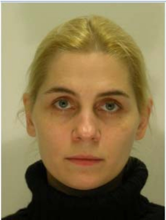
图7-15 查询图像（6）
检索出的部分相似图像如图7-16所示。
图7-16 检索出的部分相似图像（6）
以下是实验结果的两个表格，其中，表7-5表示图像库中的图像与检索图像之间的余弦相似度，表7-6表示图像库中的图像与检索图像之间的欧氏距离。“yes”表示返回机器视觉上的相似图像，换而言之，表示在阈值范围内的相似图像。
基于余弦相似度度量的Gabor图像检索算法的实验结果如表7-5所示。
表7-5 基于余弦相似度度量的Gabor图像检索算法的实验结果
续表
基于欧氏距离度量的Gabor图像检索算法的实验结果如表7-6所示。
表7-6 基于欧氏距离度量的Gabor图像检索算法的实验结果
续表
续表
3.实验分析
从实验结果中看出，该算法对图像的涂抹、覆盖很敏感。但是整体上，匹配到的相似图像的成效尚可。基于余弦相似度度量的Gabor算法的阈值为0.50，查准率为29/31×100%=93.5%，查全率为29/40×100%=72.5%。基于欧氏距离度量的Gabor算法的阈值为62000，查准率为37/41×100%=90.2%，查全率为37/40×100%=92.5%。
7.11 HOG算法
HOG，英文全称为Locally Normalised Histogram of Gradient Orientation in Dense Overlapping Grids，即局部归一化的梯度方向直方图，是一种对图像局部重叠区域的密集型描述符，它统计图像的局部区域的梯度方向信息作为局部凸显该区域的表征。具体来说，将梯度方向（0°～360°）划分成9个区间，将图像划分成16×16像素的若干块（Block），每个块再划分成4个8×8像素的单元格（Cell）。对于每一个Cell，计算每一像素点的梯度方向和模，按梯度方向增加对应bin的值，最终综合n个Cell的梯度直方图形成一个高维描述子向量[13-16] 。
7.11.1 HOG算法的使用
在Windows 7环境下，安装CodeBlock编译环境，并配置OpenCV。
该算法对应的项目名称是HoG_Project。具体执行步骤如下。
（1）打开HoG_Project文件夹，然后用CodeBlocks打开HoG_Project.cbp文件。
（2）如果不修改输入数据及相关参数，则直接执行（4）。
（3）如果修改数据，则可在主函数中的第一行代码中进行修改：
其中，readImg的第一个参数是图像集的文件名，第二个参数是图像文件的后缀名。
（4）运行HoG.cpp文件即可。
注意：本实验中使用的图像为灰度图，尺寸大小都是相同的。
7.11.2 HOG算法原理
在 OpenCV 中，HOG描述子是针对一个检测窗口而言的，一个窗口有[(128-16)/8+1]×[(64-16)/8+1]=105个Block，一个Block有4个Cell，一个Cell的HOG描述子向量的长度是9，所以一个检测窗口的HOG描述子的向量长度是105×4×9=3780维。文献[15]中给出了HOG算法原理的步骤：
（1）灰度化图像处理。在本实验中，图像集是灰度图，所以该算法代码就没有再对图像一一进行灰度化处理。
（2）计算图像每一个像素的梯度，该梯度包括大小和方向。计算图像横坐标和纵坐标的梯度，在此基础上求每个像素位置的梯度方向值。这一步不仅可以捕获轮廓和纹理信息，还可以进一步弱化光照的影响。
（3）将图像分割成小的Cell。一个Cell是HOG特征最小的结构单位，Block和窗口win的滑动步长就是一个Cell的宽度或高度，因此，需要先把整幅图像分割成一个个的Cell。
（4）为每个Cell构建梯度方向直方图。这是最关键的一步，它主要是统计局部图像梯度信息并进行量化，得到局部图像区域的特征描述向量。
（5）将Cell组成大的Block，然后Block内归一化梯度直方图。这也是很关键的一步。
（6）生成HOG特征描述向量。将所有的Block的HOG描述符组合在一起，形成最终的特征向量，该特征向量描述了检测窗口的图像内容。
在本实验中，我们使用的图像集全部都是灰度图，尺寸大小都是150×200像素。在本实验中检测窗口的大小为64×128像素（其中Block大小为16×16像素，Block的滑动步长为8×8像素，Cell大小为8×8像素，一个Cell内统计9个方向的梯度直方图），窗口滑动步长为64×64像素，扩充像素数为42×56像素。也就是说，宽扩充42个像素点，高扩充56个像素点，因此每一幅图像的检测窗口共有9个，即我们使用3780×9=34 020维度的特征向量表示每一幅图像。于是，我们便得到了每一幅图像的表示，接着进行图像之间的匹配，本算法中我们使用的是欧氏距离度量方法。阈值为16，也就是说，我们认为欧氏距离小于16的图像都是相似图像。
7.11.3 HOG算法实现
我们使用的是OpenCV中的HOG特征提取功能，它使用了HOGDescriptor类的封装。下面程序中的部分代码来自文献[13-16]。
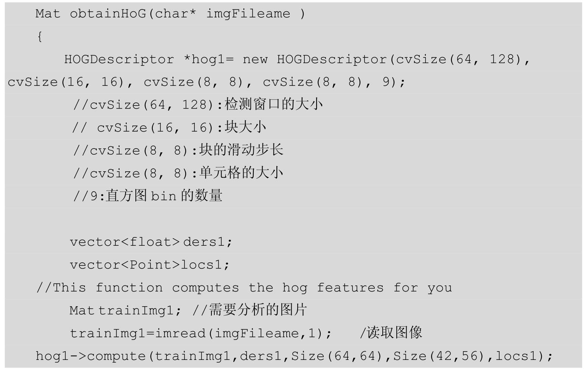
7.11.4 HOG算法的实验数据、实验结果及分析
1.实验数据
实验输入数据为150×200像素的原始图像，数据集路径为“..\HoG_Project\image150×200”。输入的测试图像为文件夹中的第一个图像。实验输出数据为图像的序号和图像之间的距离，输出数据存于“.\HoG_Project\HoG_distance.txt”。
2.实验结果
查询图像如图7-17所示。
图7-17 查询图像（7）
检索出的部分相似图像如图7-18所示。
图7-18 检索出的部分相似图像（7）
以下是HoG_distance.txt的部分内容展示，如表7-7所示。
表7-7 HoG_distance.txt部分内容展示
续表
3.实验分析
从检索结果中我们发现，返回结果并不多，但是结果中的误报数很小（为零），所有返回的图像都与查询相关。本次实验的查准率是37/37×100%=100%，查全率是37/42×100%=88.095%。
7.12 深度学习特征
深度学习和传统模式识别方法的最大不同在于它是从大数据中自动学习特征，而非采用手工设计的特征。好的特征可以在很大程度上提高模式识别系统的性能。深度学习运用于物体识别领域具有重大突破意义的就是人脸识别。无论是传统的人脸检测和识别，还是基于深度学习的检测和识别，面临的最大挑战都是如何区分由于光线、姿态和表情等因素引起的类内变化和由于身份不同产生的类间变化。这两种变化分布是非线性的且极为复杂，传统的现行模型无法将它们有效地分开。深度学习的目的是将各种因素成功地分开，例如在深度模型的最后一个隐含层，不同的神经元代表了不同的因素。如果将这个隐含层当作特征表示，人脸识别、姿态估计、表情识别、年龄估计就会变得十分简单，因此通过多层的非线性变换得到新的简单线性特征表示。这些特征就尽可能多地去掉类内变化，而保留类间变化。人脸识别有两类任务，即人脸确认和人脸辨识。人脸确认的任务是判断两张照片是否为同一个人，属二分类问题，随机猜中的概率为50%。人脸辨识的任务是将一张人脸图像准确地分到N个类别之一内，类别是由人脸的身份定义的。这是一个多类问题，更具有挑战性，其难度随着类别数的增多而增大，随机猜中的概率为1/N。这两类任务都可以通过深度模型学习人脸的特征表达。
7.12.1 深度学习算法的使用
本部分的特征是使用Ubuntu上的Caffe工具提取的。
算法对应的项目文件名称为“deepLearningSearch.sln”，位于“../deepLearning Search”路径下。
打开deepLearningSearch文件夹，使用Visual Studio 2010打开“deepLearning Search.sln”，运行“deepLearningSearch.cpp”即可。
7.12.2 深度学习算法原理
我们使用ImageNet网络结构，主要包括5个卷积层、3个全连接层、下采样层（Pooling层）、线性修正单元（ReLU层）以及标志所属类别的输出层[17] 。网络最后一个全连接层的输出需要设置为类别数，输入图片尺寸为227×227像素，输出为属于每个类别的概率值。我们选择网络结构中的倒数第二个全连接层作为要提取的深度特征层，由于该层后跟有线性修正单元（ReLU层），所以提取出的深度特征向量都是非负值。为了防止过拟合现象，网络中使用了Drop-Out层，过滤学习到的一些冗余信息。
使用ImageNet训练模型，我们选择网络结构中的倒数第二个全连接层作为要提取的深度特征层，因此对于每张图片，都能得到一个4096维的特征向量，所以每张图片我们可以获得的特征向量维度为4096。
7.12.3 深度学习算法实现
算法步骤：该部分对应的代码包含在源码中的 extract_feature 文件夹下，geetDeepID.m文件可以实现对指定文件列表中的所有图片进行提取深度特征。
7.12.4 深度学习算法的实验数据、实验结果及分析
1.实验数据
图像库中为利用深度学习得到的497（行）×128（列）或者497（行）×4096（列）的数据。
查询图像的深度特征为1（行）×128（列）。
2.实验结果
实验结果在与“deepLearningSearch.cpp”同一目录下的“similityDLFeature.txt”文件中。每行中第一列代表图像的编号，第二列代表查询图像与图像库中的当前图像的余弦相似度。
查询图像如图7-19所示。
图7-19 查询图像（8）
根据余弦相似度的阈值，检索出的部分相似图像如图7-20所示。
图7-20 检索出的部分相似图像（8）
表7-8所示为基于4096维度的余弦相似度度量的深度学习算法之图像检索的结果。
表7-8 图像检索结果
续表
续表
续表
3.实验分析
128维度时：相似图像的余弦相似度阈值为0.74。
4096维度时：相似图像的余弦相似度阈值为0.773以上。
最后，使用深度学习算法进行人脸检索的查准率为41/43×100%=95.35%，查全率为41/42×100%=97.62%。
参考文献
[1] 欧氏距离. 百度百科. http://baike.baidu.com/.
[2] 余弦相似度. 百度百科. http://baike.baidu.com/.
[3] 感知哈希算法PHash的OpenCV实现. http://blog.csdn.net/eternity1118_/article/details/51088019.
[4] 主成分分析. http://blog.csdn.net/dahuacai/article/details/50503246.
[5] PCA的数学原理. http://blog.codinglabs.org/articles/pca-tutorial.html.
[6] 初识PCA数据降维. http://www.cnblogs.com/hxsyl/p/4548264.html.
[7] David G. Lowe. Distinctive Image Features from Scale-Invariant Keypoints.IJCV2004. http://www.cs.ubc.ca/~lowe/papers/ijcv04.pdf.
[8] OpenCV, BoF-SIFT. http://www.codeproject.com/Articles/619039/Bag-of-Features-Descriptor-on-SIFT-Features-with-O.
[9] FLANN. https://github.com/jlblancoc/nanoflann.
[10] Gabor滤波器学习. http://blog.csdn.net/jinshengtao/article/details/17797641.
[11] Gabor filter. Wikipedia. https://en.wikipedia.org/wiki/Gabor_filter.
[12] 图像的Gabor小波变换. http://download.csdn.net/download/CPFZZ/1976739.
[13] OpenCV—HoG特征. http://blog.csdn.net/loadstar_kun/article/details/7728463.
[14] 利用OpenCV提取HOG特征需要了解的参数. http://blog.sciencenet.cn/blog-702148-762019.html.
[15] HOG：从理论到OpenCV实践. http://www.tuicool.com/articles/fM3Mvu.
[16] Extracting HoG Features using OpenCV. http://stackoverflow.com/questions/11626140/extracting-hog-features-using-opencv.
[17] ImageNet深度卷积神经网络笔记. http://www.gageet.com/2014/09140.php.
第8章 人脸检测商业软件及其应用示例
本章介绍两款知名的人脸检测商业软件，分别是VeriLook和Face++。除这两款商业软件外，OpenCV是一款非常常用的免费人脸识别软件，得到了计算机视觉领域研究人员和工程师的青睐。由于本书在前面章节中已经详细讲解了如何利用OpenCV进行人脸检测、人脸识别和人脸检索，在本章中，我们不再单独讲解。
8.1 人脸检测商业软件之VeriLook
Neurotechnology[1] 是一家总部位于欧洲（立陶宛）的公司，它提供了指纹、人脸、虹膜、声音和掌印的识别算法和软件开发SDK，它的产品被用在许多应用程序中，如边境口岸、刑事调查、选民登记系统等。它的人脸检测和识别应用可以实时地处理输入的图片和视频，并且检测效果良好、稳定。
Neurotechnology中人脸检测和识别的软件产品为VeriLook。这里我们介绍一下如何使用VeriLook进行人脸检测，步骤如下。
（1）VeriLook软件下载地址为：http://www.neurotechnology.com/download.html# demo，打开链接后，页面如图8-1所示。
选择和自己计算机相匹配的版本，本实验使用的是：zip archive for MS Windows 64-bit，下载后对应的文件名为：Neurotec_Biometric_6_0_Algorithm_Demo_Win64_x64_2015-12-22。
（2）解压上述文件，运行“FacesAlgorithmDemo.exe”后，显示主界面，如图8-2所示。
图8-1 VeriLook下载页面
图8-2 VeriLook的主界面
单击Enroll按钮，选择一张图片后，该软件可以提取人脸特征，标记出人脸对应位置，并将检测结果存入数据库中，Verilook主界面左下方的面板中会显示录入的日志。
单击Identify按钮，选择一张图片后，该软件在数据库查找和这张新图片相匹配的图片，VeriLook主界面右下方的面板中会显示匹配的结果。
（3）单击Enroll按钮，选择一张图片后，界面如图8-3所示。检测到的人脸同时存入数据库。单击Identify按钮，选择一张图片后，界面如图8-4所示。
图8-3 单击Enroll按钮选择一张图片后的界面
图8-4 单击Identify按钮选择一张图片后的界面
（4）如果要录入或识别一个文件夹内的所有文件，则只需将File改为Directory即可，如图8-5所示。
单击Tools→clear Log/clear database，可以对录入日志或数据库进行清空。
（5）如果读者想修改检测或识别的参数，则可以单击Tools→Options，对参数进行修改，如图8-6所示。
图8-5 切换File和Directory
图8-6 参数调整对话框
Minimal ocular distance，即人脸模板的两眼间的最小距离，默认值为40，最小值为8。当需要检测远景镜头中的人脸时，可以调整这个值。图8-7（a）、（b）所示是不同的Minimal ocular distance值（其他参数值相同）的检测效果。
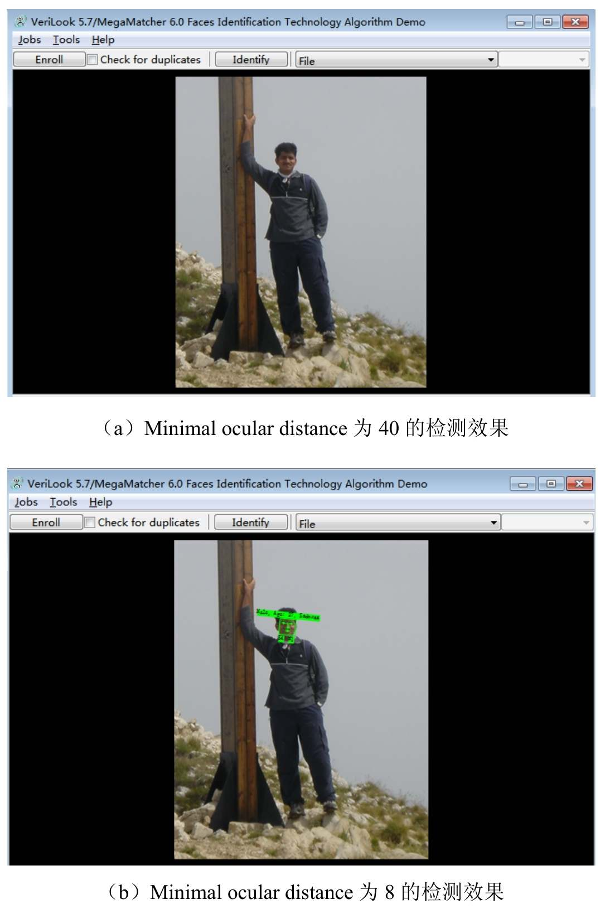
图8-7 不同的Minimal ocular distance值的检测效果
Maximal Yaw是最大偏移角度（绕y轴），默认值是15。当需要检测侧脸时，我们可以调整Maximal Yaw的值。图8-8（a）、（b）所示是不同的Maximal Yaw值（其他参数值一致）的检测效果。
图8-8 不同的Maximal Yaw值的检测效果
关于其他参数的含义和效果，读者可以参考Documentation\FacesAlgorithm Demo.pdf文档。
上面展示了如何利用VeriLook进行人脸检测、识别，以及如何调整参数。关于VeriLook的更多使用，读者可查看Neurotechnology的网站和Documentation\FacesAlgorithmDemo.pdf文档。总之，VeriLook是一款非常高效、实用的人脸检测软件，得到了来自全世界的多种不同用户的推荐。
8.2 人脸检测商业软件之Face++
Face++[2] 是北京旷视科技有限公司旗下的新视觉服务平台，Face++提供的产品服务有：人脸检测——人脸检测和关键点检测；人脸分析——微笑分析，性别、年龄、种族分析；人脸识别——1:1人脸验证、1:N人脸识别和大规模人脸检索。它非常容易使用，检测效果好、时间短，是一款强大、易用的商用软件。
Face++中提供了多种SDK，本书以Face++的MATLAB SDK为例，介绍一下如何使用Face++进行人脸检测，具体步骤如下。
（1）打开Face++网站（http://www.faceplusplus.com.cn/）。
（2）单击右上角的“注册”按钮，如图8-9所示。
图8-9 Face++注册页面
（3）注册完成后，登录自己的账号，单击“我的应用”选项卡，进入“我的应用”界面后，再单击“创建应用”按钮，如图8-10所示。
图8-10 Face++创建应用界面
（4）创建应用完成后提交，会显示如图8-11所示的界面，从而可以获得API_KEY和API_SECRET。之后可通过单击“我的应用”→“管理”，来查看API_KEY和API_SECRET的值，如图8-12所示。
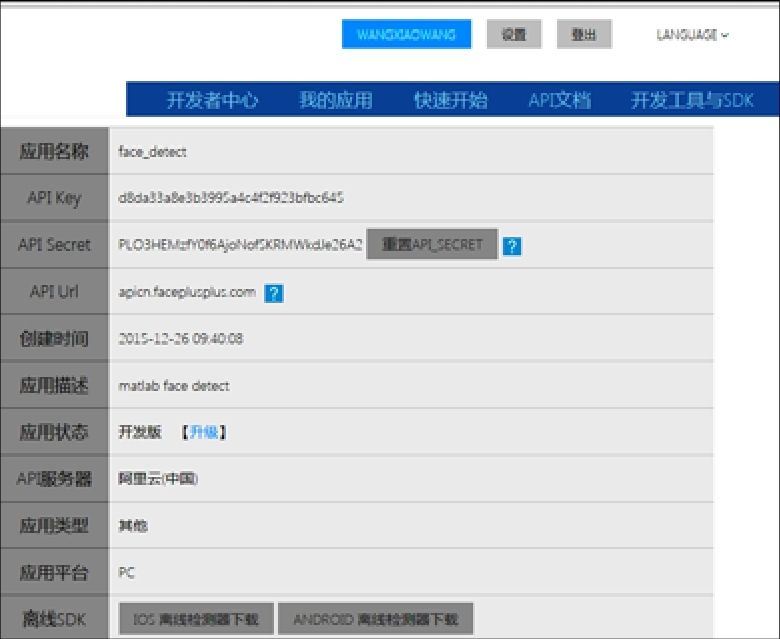
图8-11 应用信息界面
图8-12 Face++应用列表界面
（5）下载SDK。单击“开发工具与SDK”选项卡，本书实验应用MATLAB SDK进行测试，如图8-13所示。
图8-13 Face++SDK下载界面
（6）下载好的程序为facepp-matlab-sdk-master，打开facepp_demo.m文件，把API_KEY和API_SECRET替换为（4）中获得的值。img修改为待检测的图片路径和名称，运行facepp_demo.m文件即可进行人脸检测。
使用Face++的MATLAB SDK的检测结果如图8-14所示。
图8-14 Face++的检测结果
上面展示了如何使用Face++的MATLAB SDK进行人脸检测，Face++还有更多的SDK和强大的功能，读者可以查看Face++的官方网站[2] 。
8.3 各种人脸检测算法的对比分析
本书在前面章节已经介绍了6种人脸检测算法及两款商业软件，分别是DPM、LAEO、CNN Facial Point Detection、Viola&Jones、DDFD和Fast R-CNN，以及VeriLook和Face++。为了解这些算法的检测效果，本书进行了大规模的测试实验。该大规模测试的算法有4个，分别是DPM、LAEO、CNN Facial Point Detection和Viola&Jones，不包括DDFD，因为DDFD噪声太多。大规模测试的数据集有4个，两个公开的数据集LFW和FDDB；两个自己收集的数据集Wanwan1（100张图片，每张图片都是人的侧脸）、Wanwan2（100张图片，每张图片都是360°人脸）。关于这4个数据集的介绍，请参考本书第1章的内容。
每个算法分别在这4个数据集上进行测试，大规模测试结束后，统计每个算法在各个数据集上检测后的TP和FP数量。TP即True Positive，表示已检测到的并且是人脸的图片数量；FP即False Positive，表示已检测到的但不是人脸的图片数量。图8-15所示为某个算法的检测结果，该图片检测结果的TP=1，FP=1。
图8-15 某个算法的检测结果
表8-1中统计了每个数据集上人脸的数量，以及每个算法在该数据集上检测到的TP数量和FP数量。
表8-1 人脸检测结果对比
根据表8-1，我们可以计算出每个算法在各个数据集上的检测率和检错率。表8-2统计了各个算法在4个数据集上检测完成所需的时间，以及在各个数据集上的检测率。表8-3统计了每个算法在各个数据集上的检错率。
例如，DPM在LFW数据集上的检测率为：534/601×100%=88.85%，DPM在LFW数据集上的检错率为：61/601×100%=10.15%。
表8-2 各算法的检测率及运行时间
表8-3 各算法的检错率汇总
注：由于LFW数据集中有13 233张图片，FDDB数据集中有28 736张图片，图片数量太多，在统计检测数量和检错数量时，本书只统计了LFW和FDDB数据集中的前500张图片。运行时间仍然是4个数据集全部运行完成所花费的时间。
综合表8-2和表8-3可知，DPM在各个数据集上的检测率都是最高的，但是它的检错率也比较高，并且运行时间太长。所以，DPM的优势为：适合各种角度的人脸检测，如正脸、侧脸、360°人脸；缺点为：运行时间长，是CNN Facial Point Detection的64倍。
CNN Facial Point Detection在数据集LFW、FDDB和Wanwan1上的检测率仅比DPM低一点，但它的检错率几乎为0，并且运行时间最短，2个小时就能检测完将近5万张图片。所以，CNN Facial Point Detection的优势为：检测时间短，对于正脸和侧脸检测效果好，错检率几乎为0；缺点是：不适合检测360°人脸。
Viola&Jones在LFW和FDDB数据集上检测率一般，但在Wanwan1和Wanwan2数据集上检测率非常低。Viola&Jones检测时间非常短，和CNN Facial Point Detection不相上下。所以，Viola&Jones的优点为：适合检测正脸，检测时间短，检错率也较低；缺点是：不适合检测侧脸和360°人脸。
LAEO在各个数据集上的检测率都比DPM低，并且运行时间长，是CCN Facial Point Detection运行时间的61倍，和DPM的运行时间不相上下。所以，LAEO的优点是：可以检测各个角度的人脸；缺点是：运行时间长，和其他算法相比，检测率低。
8.4 视频中的人脸检测与追踪
前面介绍的各种人脸检测算法都是基于静态图片的，本节我们将利用Viola&Jones检测器对视频中的人脸进行检测。对应的项目名称为vedioDetect。运行该项目之前，只需在Visual Studio中配置好OpenCV视觉库即可，类似Viola&Jones检测算法的配置。
该程序首先读取视频中的每一帧，然后利用本书第3章中Code7的方法检测出每一帧中人脸的对应位置。下面，我们从源代码上面分析一下该程序是如何获得视频中的每一帧并进行检测的。
读者如果要修改检测视频的路径，则可在vedioFace.cpp中修改，如下所示。
VideoCapture capture(“D://google//download//IMG_1560.MOV”);
修改好路径后，运行vedioFace.cpp即可对该视频进行人脸检测。Code1主要来自文献[3]，用于读取视频中的帧。
Code1： vedioFace.cpp
对视频中的每一帧，利用本书第3章Code7中的detectAndDraw函数进行人脸检测。读者运行上述程序后，可看到检测效果，这里不再展示。
参考文献
[1] VeriLook software. http://www.neurotechnology.com.
[2] Face++. http://www.faceplusplus.com.cn/.
[3] OpenCV学习笔记. http://blog.csdn.net/thefutureisour/article/details/7530344.